(Steps to a Happy Life - 5)
Protect Complete Health.
Enjoy Prosperity at all times.
Dr. Manthena Satyanarayana Raju
Dr. B. Venkata Rao
Born: 4-July-1926
Passed away: 2-June-1998
Dr. B. Vijayalakshmi
Born: 19-August-1931
Passed away: 19-August-1986
Treasures of the art of naturopathy,
Ever engaged in worshipful service,
Seekers walking steadily on the path of progress,
Lifelong practitioners devoted to their righteous duty,
Who lived exemplary lives and attained immortality —
To the divine and sacred memory of
Dr. B. Venkata Rao and Dr. Vijayalakshmi,
This book Pranayama – The Journey to a Healthy Life
Is humbly and respectfully dedicated by me.
- Manthena Satyanarayana Raju
If Yashomurthy Vaidyaraju Sri Vegiraju Krishnam Raju is remembered as the one who laid the foundation for the system of nature cure (Naturopathy) in Andhra Pradesh, then the noble couple Dr. B. Venkata Rao and Dr. B. Vijayalakshmi are remembered as those who spread it far and wide. Through tireless effort, continuous research, and dedicated service, they relieved the suffering of thousands of patients and gifted them good health. By their work, discipline, and spirit of service, they earned great respect and lasting recognition.
Dr. B. Venkata Rao was born on July 4, 1926, in Veeravasaram village of West Godavari district. While studying medicine at Stanley Medical College in Madras, he discontinued his medical education in the fourth year and joined the freedom movement in 1945. Even as the spirit of the movement continued within him, he studied at Sri Ramakrishna Nature Cure Ashram in Bhimavaram from 1945 to 1948 and obtained a formal qualification in nature cure (Naturopathy).
Later, he underwent complete and in-depth training under Vegiraju Krishnam Raju, who is regarded as the pioneer of nature cure. During this period, on April 6, 1946, he married Vijayalakshmi in a very simple and modest ceremony. He also arranged for her to receive training under Krishnam Raju Garu.
During her training itself, she earned the title “Yogasana Praveena” (expert in yogic postures) and was awarded a gold medal, proving herself to be a true life partner in both spirit and discipline.
With the blessings of Mahatma Gandhi, Dr. Venkata Rao worked as a physician at the Sri Ramakrishna Nature Cure Ashram in Bhimavaram during the years 1948–49. Later, on the advice of Acharya Vinoba Bhave, he served as the Director of the Nature Cure Hospital at Bollaram, Hyderabad, from 1950 until 1982.
By that time, Dr. Venkata Rao had already earned great recognition and respect. In Hyderabad, he established the Gandhi Nature Cure College (Gandhi Prakruti Chikitsa Kalashala), becoming an inspiration and a guiding light to many doctors. Even today, it would be difficult to find a nature cure institution anywhere in India where his name and reputation are not known. He served as the administrator for many nature cure centers across the country. Under his leadership, nearly fifty nature cure institutions were established. All the doctors working in these institutions gained their medical insight by absorbing the practical experience of Dr. Venkata Rao and his wife and by learning naturopathy under their direct guidance.
His wife, Dr. Vijayalakshmi, lived by the belief that her husband was her guiding force and that serving his mission was her foremost duty. Walking firmly in his footsteps, she stood by his side, shouldering many responsibilities with excellence and devotion, as if life itself meant being his companion in service. She was a dedicated worker who offered the gift of health to countless people and stood as a symbol of discipline and duty.
Dr. Vijayalakshmi served as the Managing Trustee of the Hyderabad Nature Cure Hospital and was the Principal of the Gandhi Nature Cure College founded by them for fifteen years. Through her leadership, she brought the college onto a path of growth and successfully obtained recognition from Osmania University. She was also the first woman to efficiently manage the Ameerpet Nature Cure Hospital for nearly forty years.
Not only was she a person of service, but she was also a scholar proficient in multiple languages. She possessed strong command over several languages and authored remarkable books such as Prakruti Pakashastramu (Nature-Based Culinary Science) and Kaninika Nidanamu (Diagnosis through the Eyes). She served as the editor of Prakruti magazine for thirty years and wrote hundreds of articles, bringing valuable medical knowledge and insights to the general public.
As the devoted wife of Dr. Venkata Rao, and as a leading naturopathy physician in India, Dr. Vijayalakshmi earned wide recognition. Not only in India, but even abroad, she received special appreciation for her work. In Germany, she was honored and addressed as the “First Principal of a Recognised and Affiliated Naturopathy College.”
In this manner, she rendered multi-dimensional service as a life partner (Ardhangini – devoted spouse), Sahadharmacharini (one who walks together in righteous duty), mother, physician, and author. With purity of thought, word, and action (Trikarana Shuddhi), she fulfilled her life’s duty and became renowned as a compassionate mother-like figure of nature cure. She shone as a precious jewel adorning the crown of Dr. Venkata Rao’s illustrious legacy.
Dr. Venkata Rao, together with his wife, dedicated his entire life to making naturopathy accessible to all sections of society. Without any discrimination, he served the poor and the rich, officials and non-officials, common people and great personalities alike, with equal respect and selfless commitment. He authored more than twenty books on various aspects of nature cure in Telugu, Hindi, and English. These books became guiding lamps for thousands of readers and helped spread the system of naturopathy to every corner of the country.
He was not only a physician, but also a fortunate soul who actively participated in India’s freedom struggle and worked tirelessly for the nation’s progress. His patriotism deserves the highest admiration. To express their deep reverence for national leaders, he named his three sons after Mahatma Gandhi (Bapuji), Shivaji Maharaj, and Subhas Chandra Bose (Netaji). This itself stands as a living testimony to his love for the nation.
All three sons also became physicians and earned recognition as worthy sons of their father. They are presently continuing their professional duties with dedication. Among them, Dr. Bapuji and Dr. Shivaji first qualified as allopathic doctors by earning their M.B.B.S. degrees. After mastering modern medical science, they blended it with the principles of naturopathy they had absorbed from their father from an early age. Thus, they emerged as complete physicians, serving the people selflessly along with their wives, who are also doctors, and earned recognition among the leading medical professionals of India.
Dr. Venkata Rao devoted all his strength and abilities to the nature cure movement and worked tirelessly throughout his life. His fame spread not only across India but also to foreign countries. Along with his wife, he visited several European countries in 1973, at their invitation, to study the development and progress of naturopathy in those nations.
Within Andhra Pradesh, the honors and responsibilities that came to him were countless. During 1982–83, he served as an advisor for the development of naturopathy in Andhra Pradesh. He also acted as an advisor to other states such as Karnataka and Gujarat. In addition, he served as a member of the Andhra Pradesh Government’s Board of Indian Medicine.
As a physician, author, teacher, social worker, patriot, and an ideal personality who walked in the footsteps of great leaders, his legacy remains immortal — enduring as long as the moon and stars exist.
As a couple devoted to nature cure, Dr. B. Venkata Rao and Dr. Vijayalakshmi secured a permanent place in the hearts of the people. Shining like guiding stars (Dhruva Taaralu) in the vast sky of naturopathy, living lives of complete righteousness, they attained immortality through their work and values.
I consider it my great fortune to have received the noble opportunity to dedicate this book, “Pranayama – The Journey to a Healthy Life,” to the revered couple Dr. B. Venkata Rao and Dr. Vijayalakshmi. With deep respect and heartfelt reverence, I offer my humble salutations to their pure and sacred souls.
- Manthena Satyanarayana Raju
In 1985, I joined the Sri Chode Appa Rao Nature Cure Hospital, Kakinada for nature cure treatment for the first time. I went there to stay for two months under the supervision of Dr. V. V. Rama Raju. During those two months, he taught me Pranayama (breathing regulation) and Asanas (yogic postures).
Along with nature cure treatment, I began practicing the asanas and pranayama regularly after returning home, and I experienced very good results. Later, when I went to distant places for higher studies, I started teaching asanas and pranayama to my friends and acquaintances. By practicing myself and teaching others from time to time, the knowledge I had learned remained fresh and firmly rooted in me.
From the year 1994 onwards, I began conducting morning classes and offering free training in asanas and pranayama. From that time, I also started understanding the hidden principles within the pranayamas I had learned, from a scientific perspective. I realized how beneficial pranayama is for the lungs, the body, and the mind. I compared this understanding with my own experiences and confirmed the results through practice.
The clear difference I observed between this pranayama and other pranayama practices is that the results of this method are obtained very quickly. Along with the benefits of improved blood circulation that come from physical exercise, the life energy (Prana Shakti – vital life force) flows evenly throughout the body. As a natural result, mental and spiritual changes also take place.
Generally, when something is explained to people in a new way, many develop doubts and hesitation. This method of pranayama is not described elsewhere in this manner. Because of this, many people begin to wonder whether they should practice the usual pranayama or this pranayama. Keeping all these questions in mind, this book explains in a comprehensive manner the need for this long-breath pranayama (Deergha Shwasa Pranayama), its method of practice, and many related aspects.
In accordance with the principles of physiology, this book explains — in scientific and medical terms — the process of breathing, the supply of oxygen, purification of the blood, and the manner in which life energy circulates within the body.
Another important point is this — we are not saying that other pranayama practices should not be done. Each pranayama has its own unique value. Our intention is that you first obtain quick and visible results through this long-breath pranayama, and only then practice the pranayamas you have learned earlier. You will experience remarkable results. This will become clear to you through your own experience.
Even a journey of a thousand miles begins with a single step. How can one speak of taking the hundredth step without taking the first? This long-breath pranayama is that very first step. Through this practice, deficiency of life energy is corrected, the body becomes purified, the number of breaths reduces, and one becomes naturally qualified to practice other pranayamas such as Puraka, Kumbhaka, and related techniques.
We have learned all these truths through direct experience. With the strong desire to share this knowledge with everyone, this book — “Pranayama – The Journey to a Healthy Life” — has been written.
In the name of modern civilization, people today are entangled in city life and are able to fulfill their duties at work, but not their duties to the body. They do not eat proper food, nor do they drink sufficient water. In the end, they are in such a condition that they do not even know how to breathe properly, even though air is freely available.
Those who perform physical labor naturally receive abundant life energy due to the changes that occur in the body through their work. Others, who do not exercise and who lack the time or opportunity to do so, gradually fall prey to diseases. This book “Pranayama – The Journey to a Healthy Life” has been written especially for them.
As the saying goes, “liberation lies in the subtle.” Through this long-breath pranayama, one can obtain not only all the benefits that physical exercise gives to the body, but also complete supply of life energy and oxygen. It is enough to dedicate just 25–30 minutes a day. Through your own experience, you will come to realize that there is no other method that benefits the body so easily and effectively.
I consider it a sacred duty to present such useful and beneficial knowledge to you through this book. On this occasion, I feel it is my rightful duty to express my heartfelt gratitude to my revered teacher, Dr. V. V. Rama Raju, who taught me this long-breath pranayama.
I sincerely wish that everyone practices this pranayama, attains health and happiness, makes their lives complete, and thus gives true meaning to this precious human life.
Yours sincerely,
Mantena Satyanarayana Raju
Writing a book is itself a Yajna (a sacred offering). Writing a book related to health is a great yajna. For such a task, one needs not only ability, but also generous support and cooperation. Beyond this, I had resolved to write four health-related books within a single month — from May 1, 2001, to May 31, 2001. That this resolve could take such a concrete and successful form is due to the continuous effort, encouragement, and assistance of several kind-hearted people, a debt I can never forget.
To support my deep desire to take this healthy way of life to the people, and to stand by me with the assurance, “We are with you,” a beautiful cottage was arranged for us in pleasant gardens on the banks of the Krishna River near Vijayawada. In a calm and refreshing atmosphere, with thoughtful care taken to protect us from the intense summer heat of Rohini Kaarte (the peak summer period), all facilities were personally supervised so that the writing work could continue without interruption. For ensuring that this yajna progressed smoothly and without obstacles throughout the month, my heartfelt gratitude goes to the generous and kind-hearted Gokaraju Gangaraju (M.D., Laila Group of Companies, VJW).
My sincere thanks to Thurumella Koteswara Rao, who, out of sheer affection and goodwill, efficiently carried out the proofreading of these books.
My gratitude to Vakada Durga Prasad, who stayed with me during the period of writing and prepared the fair copies.
I also extend my thanks to the management and staff of the printing press who treated this work as their own responsibility and completed the printing within a very short time. My special thanks to Shivaji Raju for his dedicated involvement.
Finally, I offer my heartfelt gratitude and appreciation to all health enthusiasts who practiced this method, attained good health, and promptly shared their experiences through a continuous stream of letters and phone calls whenever asked.
- Mantena Satyanarayana Raju
As long as there is breath in the body, we say that life exists. When the breath stops, we say that life has departed. In this sense, life itself can be understood as breath. From this, it becomes clear that the time between two breaths determines the span and quality of life. Those who take in this vital air properly are able to live a long and healthy life. Those who breathe only halfway and do not inhale vital air fully live with good health for only a limited period.
Such a precious life-giving vital air is provided to our body by air itself. One may survive for a few days by drinking water, but life continues only when air is inhaled along with water. In the same way, one may live for a few days without food, but one cannot survive on food alone without air. Just as air plays a primary role in nature, it has become an equally essential requirement for us, who are a part of nature.
Every living being in nature is created in such a way that its body can make use of the five elements of nature. Likewise, since air is most vital for life, the human body has been wonderfully designed so that air enters it naturally, without any conscious effort on our part.
After birth, for several hundred years, human beings lived considering nature as their everything and survived by completely depending on it. They drank water from rivers, breathed pollution-free air deeply into their lungs, ate fruits and roots to their fill, slept peacefully without worries in the mind, and remained healthy and strong.
Gradually, as the human population increased, competition for bodily needs also increased. People stopped being satisfied with what nature freely provided and began searching for new ways. They learned to cook food and to cultivate crops. With the formation of society, they also began to face problems. Thus, as human beings progressed, they slowly moved away from nature.
Even so, as long as life was based on agriculture, people performed physical labor, remained closely connected to nature, consumed wholesome food, breathed open and fresh air, and stayed away from illness. As villages developed into towns and cities, pollution began to spread across the world. With the rapid increase in population, the natural environment gradually changed, and a new distorted world began to take shape.
It is in such a developed society that we are living today. For several hundred years, we have been slowly distancing ourselves from nature. Now, green trees, flowing water, and cultivated fields have become rare and wonderful sights to our eyes. Without even knowing why we are living, we rush through our lives in constant haste.
The effects of this hurried lifestyle are clearly visible on our bodies. We do not eat on time, we do not sleep on time, and since breathing requires no conscious effort, air does enter our body in just enough quantity to keep us alive. But the amount of air that enters is not sufficient to keep us truly healthy.
Only when the body receives a sufficient supply of vital air (Prana Vayu) do all internal functions of the body operate properly. It is because we do not take in vital air correctly that human beings, who once lived for 200 or even 300 years, are now unable to live even for 100 years.
Everyone knows that the body needs air, water, and food. We constantly think about whether we have eaten three meals a day or not. But hardly anyone stops to ask whether we are inhaling enough air — even though air is more essential than food. The reason is that air is freely available and does not have to be taken consciously with our hands.
We are not inhaling as much air as our lungs are actually designed to hold. Only when the lungs continuously fill and empty with air completely does the body remain healthy for a long time. This is because the vital air we inhale must reach all organs of the body in sufficient quantity through the blood for those organs to function properly.
When life energy decreases, efficiency decreases. Without our awareness, illness begins to develop within the body. As illness increases, lifespan reduces. The longer and fewer the breaths we take, the more vital air enters the body.
But if we observe the breathing pattern of people in today’s society, we find that breathing remains shallow and rapid. Because of this pattern, we are not using our lungs fully. Shallow and fast breaths cannot carry enough vital air into the body. On the return journey, they also fail to expel completely the gas called carbon dioxide that the body releases.
Carbon dioxide is a waste substance released by the cells of our body. The body expels it through the air we breathe out. For this waste to be removed, vital air must necessarily be drawn in. When excess carbon dioxide remains inside, more vital air is required to expel it. As a result, the body attempts to take in more air, and the number of breaths increases.
If the number of breaths exceeds 16–18 per minute, it is a sign that the body is not receiving enough vital air. When vital air is insufficient, the breaths remain shallow. Anyone who observes carefully can clearly notice this in themselves.
On the other hand, when we inhale air fully, the breaths become long and slow. When air is inhaled and exhaled in this manner, the chest does not move forward and backward. This is proper breathing. When breathing occurs in this way, it means the lungs are functioning fully.
If such breathing becomes natural within us, we will be able to do three to four times more work than we do now, without fatigue or exhaustion.
All living beings in creation are able to inhale vital air fully and live comfortably and energetically. No creature needs to be told to breathe fully or instructed on how many times it should breathe. This is because all other beings live in harmony with nature and place their complete trust in it. Nature itself takes care of their well-being.
When it comes to human beings, however, we no longer eat natural food. We do not eat as often as nature requires, nor do we eat at the right times. We do not perform physical labor to obtain our food, we do not drink enough water, and we do not cultivate proper thoughts. Added to this are habits and addictions that go against the needs of the body, all of which together begin to affect the body negatively.
All these nature-opposing influences first block the body’s ability to properly absorb vital air, which is the most important element for life. The combined effect of these harmful influences and deficiency of vital air has reduced the human body — which has the potential to live with strength for two or three hundred years — to a condition where it cannot live well even for 55 or 60 years today.
The reason we are losing both lifespan and strength today is this deficiency of vital air. In earlier times, most people engaged in physical labor. Through such labor, they were able to absorb greater amounts of vital air. Those who did not engage in physical labor — scholars, sages (Rishis), and ascetics (Munis) — absorbed greater life energy through pranayama. Thus, everyone was able to live without suffering from deficiency of vital air.
In earlier days, even if a person lived for 180 or 200 years, they remained strong and energetic until the very end. This was the effect of abundant life energy. When we study the secrets of their good health, two things stand out clearly — regularly absorbing life energy through pranayama, even multiple times a day, and consuming natural food.
Now let us understand how and why the level of vital air within us decreases when we do not engage in physical labor and do not practice pranayama.
Today, we are unable to inhale vital air fully into our lungs. We are filling only about half of the lungs with vital air and leaving the remaining half unused. We are not doing this intentionally. Other shortcomings in our lifestyle are limiting the lungs to inhale air only to that extent. Beyond this point, the body does not cooperate with the breathing process.
If we reflect on the reasons that prevent vital air from reaching the deepest parts of the lungs, they include eating until the stomach is completely full, drinking water while eating, constantly eating something or the other without allowing the stomach to empty, increase in abdominal size, weight gain, nasal congestion, accumulation of phlegm in the lungs, smoking cigarettes, low blood levels (anemia), weakening of the muscles that assist breathing, inhaling polluted air, mental stress and anxiety, excessive talking, prolonged sitting, and the constant presence of one illness or another in the body.
All these factors prevent the lungs from expanding fully. Lungs that do not expand completely can take in only a limited amount of good air. In the same way, they can release only a limited amount of bad air.
The small amount of air that we inhale is enough only for meeting basic bodily needs and for doing light work for five or six hours. It is not sufficient to keep the body fully energetic and healthy. That is why even a small amount of work causes excessive fatigue, weakness, and lack of cooperation from the body — all clear signs of deficiency of vital air.
If we get used to eating small quantities of food for two or three years, even the stomach adapts to that habit. Later, even if we wish to eat more occasionally, we are unable to do so because the habit is no longer there. A small quantity of food itself makes the stomach feel full. In the same way, since our lungs have become accustomed to inhaling only small amounts of vital air, they do not immediately cooperate when we try to inhale more. With gradual and regular practice, they slowly come back into proper function.
To resume deep breathing and to fill the lungs fully with vital air, one would normally need to perform physical labor that involves strong backward and forward movement of the chest. People living in congested residential areas do not have the opportunity to perform such labor. Therefore, to compensate for this loss, the benefit provided by long-breath pranayama is greater than that of other exercises.
By simply sitting still and practicing this pranayama, we can completely overcome the loss that has occurred and train ourselves to reduce the number of breaths to fewer than 15 per minute. The difference between the amount of vital air we take in during ordinary breathing and the amount we can absorb through long, deep breathing — and the benefits that arise from it — will be explained in detail in the chapter titled “The Need for Long Breathing.”
All the chemical reactions that release energy within the cells of our body take place only in the presence of oxygen (vital air). The most important waste product released as a result of these chemical reactions is carbon dioxide. The system that allows oxygen to enter the body and enables the carbon dioxide produced inside to exit is called the respiratory system.
We continuously inhale air and exhale it. The entire process that takes place between inhaling air and releasing it is called respiration.
Organs Involved in Respiration
1. Nose: Through the two nostrils of the nose, we inhale and exhale air. The nose can be described as the entrance gateway for air. The entire inner surface of the nose is covered with a thin, sticky membrane. The nerve center responsible for sensing smell is located inside the nasal cavity, beneath this covering.
2. Pharynx: This is a tube-like structure about five inches long. It begins at the point where the back of the nose and the back of the mouth meet. Both the air inhaled through the nose and the food taken in through the mouth enter the body through this same passage. From here, the pathway divides — the air passage continues as the larynx, while the food passage continues as the oesophagus. The inner walls of the pharynx are also lined with a thin, sticky membrane.
3. Larynx: The passage through which air travels from the pharynx is called the larynx. This is commonly known as the voice box. Like the pharynx, it has a tube-like structure. Inside the larynx, there are two folds called vocal cords. When the air we inhale passes through these vocal cords, sound is produced in the throat.
On the outer side of the larynx, the thyroid gland is attached. At the same location, on the inner side of the larynx, a thin, leaf-like flap begins and bends toward the back of the tongue. This is called the epiglottis. When we swallow food, the food entering the pharynx closes the opening of the larynx, which is the air passage. At that moment, the food moves from the pharynx into the oesophagus instead.
4. Trachea: The passage through which air travels from the larynx is called the trachea, commonly known as the windpipe. The lower end of the larynx continues as the trachea. It is about four inches long. At its lower end, it divides into two branches. These two branches are called the right and left bronchi.
The right bronchus is wider and shorter, about one inch long, and it enters the right lung. From there, it divides into three main branches. Each branch reaches a different part of the lung. Each of these branches further divides into smaller branches.
The left bronchus is about two inches long and is narrower than the right bronchus. After entering the left lung, it divides into two main branches and spreads in all directions. Each of these branches again divides into many smaller branches.
The inner walls of the bronchi are covered with a thin, sticky lining. The smaller branches of the bronchi are called bronchioles. As the bronchioles continue to divide, their walls become thinner and they form very fine tubes. These are called alveolar ducts. The ends of these ducts form tiny sac-like structures that look like a bunch of grapes. These are called alveoli.
To understand this entire structure easily, imagine an upside-down tree. The trachea is like the trunk, the bronchi are like the large branches, the bronchioles are like the smaller branches, and the alveoli are like the leaves. With this comparison, the structure becomes very clear.
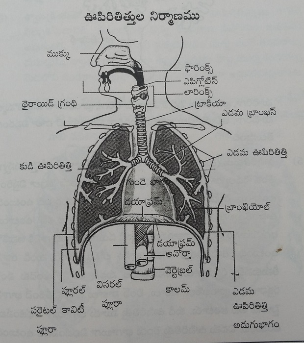
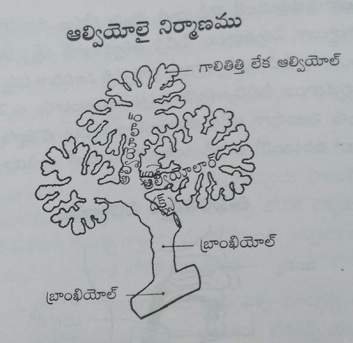
5. Lungs: The lungs are cone-shaped, narrow at the top and broad at the bottom. They extend on both sides of the chest, with the heart positioned between them. The ribs cover the lungs from the front, back, and sides. The lower surface of the lungs is semi-circular in shape and rests against the upper surface of the diaphragm.
The point through which blood vessels carrying blood from the heart to the lungs, blood vessels carrying blood from the lungs back to the heart, the bronchi, nerves, and lymph vessels all enter the lungs is called the hilum. The right lung is divided into three sections, while the left lung is divided into two sections.
On the outer surface of the lungs, there are two serous membranes. One layer adheres closely to the outer surface of the lungs and is called the visceral pleura. The other layer lines the inner walls of the chest cavity and also covers the upper surface of the diaphragm. This is called the parietal pleura.
The space between these two layers is known as the pleural cavity. It contains a thin serous fluid. When we inhale and exhale, this fluid prevents friction between the two layers and allows smooth movement of the lungs.
6. Muscles That Assist in Breathing: For the lungs to inhale and exhale air, the assistance of certain muscles is required. The most important among these are the muscles located between the ribs and the diaphragm. When breathing becomes difficult or labored, the muscles of the abdomen, the muscles of the neck, and the muscles of the shoulders also come into action to support breathing.
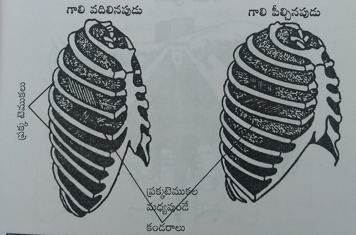
A. Intercostal Muscles: There are a total of twelve pairs of ribs in the chest. These twelve pairs of ribs are connected to one another by eleven pairs of muscles. These are called the intercostal muscles, meaning the muscles located between the ribs. When these muscles contract, all the ribs are pulled forward, and the inner space of the chest expands.
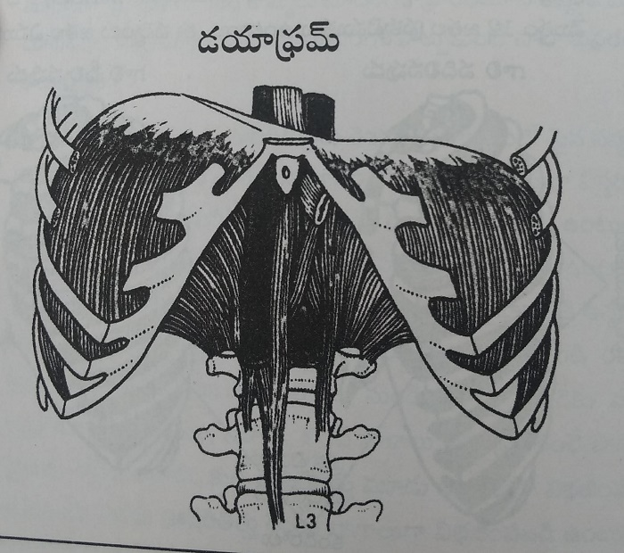
B. Diaphragm: The diaphragm is positioned like a roof over the organs of the abdomen, separating the chest cavity from the abdominal cavity. It spreads out like an umbrella and is attached at the back to the spinal column, at the front to the chest bone, and along the edges to the ribs.
When the muscles of the diaphragm contract, it is pulled downward. As a result, the inner space of the chest expands. When these muscles relax, the diaphragm returns to its original position, rising upward like a roof. The diaphragm plays a major role in breathing. Along with it, the intercostal muscles also contract and relax during the process of respiration.
Blood Supply to the Lungs: The blood vessel that carries impure blood from the heart divides into right and left branches and enters both lungs. Inside the lungs, these blood vessels divide into smaller and smaller branches and travel alongside the bronchi and bronchioles. As they reach the alveoli, they become extremely fine and spread out like a delicate network around the walls of the alveoli.
The walls of these tiny blood vessels are very thin, made up of just a single layer of cells. Similarly, the walls of the alveoli are also extremely thin. The exchange of oxygen present in the alveoli and carbon dioxide present in the blood takes place across these two thin walls.
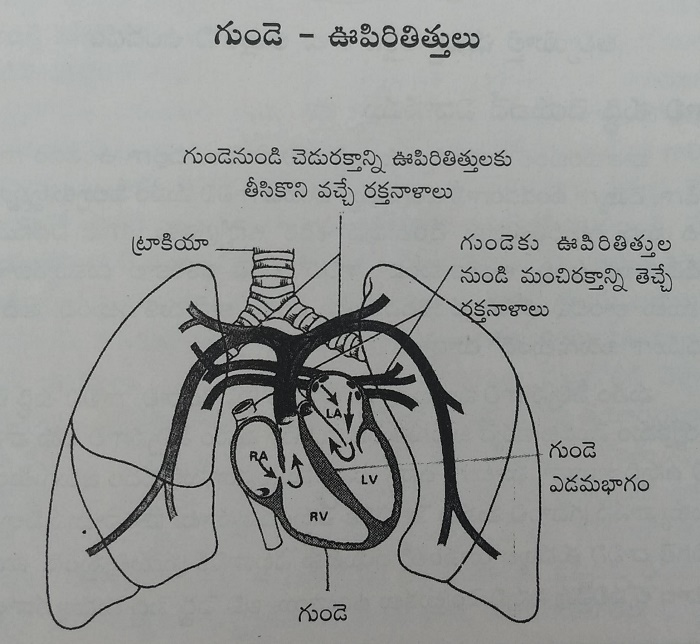
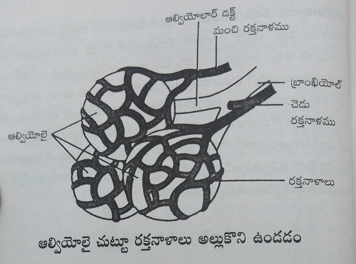
How Air Is Purified
Depending on changes in the atmosphere, air may be dry and cold, or hot and humid. When we inhale outside air, before it reaches the lungs it is warmed to suit the body’s temperature. At the same time, the body protects itself by preventing dust particles, germs, and other harmful substances present in the air from entering the lungs. Let us see how this process takes place.
The air we inhale first enters the body through the nose. The process of purifying air begins right here. If the air we inhale has a foul smell or is very irritating, we instinctively close our nose. This means the nose senses danger and warns us. If such air is inhaled accidentally, the body tries to expel it in the form of sneezing.
Inside the nostrils, there are fine hairs. These block large dust particles from entering. The inner walls of the nose are lined with sticky membranes that secrete up to one liter of mucus every day. On the surface of this mucus layer are microscopic hair-like structures called cilia. When bacteria, viruses, or dust particles enter through the air and stick to the mucus, the cilia sweep them toward the throat, much like a broom sweeping dirt.
These cilia work continuously, moving about ten times per second to clean the nose. Just as we replace a soiled blanket, the mucus layer inside the nose is renewed approximately every twenty minutes. The impurities swept from the nose slowly move down into the stomach, where the acids present destroy the bacteria.
When very cold air is inhaled, the cilia do not function properly. As a result, excess mucus is produced. Since there is not enough strength to push this mucus backward, it flows out of the nose in the form of nasal discharge. The inner walls of the nose also have a special structure that generates warmth. Blood circulation in this area is high, producing heat. When air enters the nose, it is warmed in this region before moving further inside. When cold air is inhaled, this part swells slightly in an effort to retain more heat and protect the body.
Thus, the air filtered and warmed in the nose enters the throat. If any dust particles accidentally pass from the nose into the throat, they are expelled through coughing. The throat, like the nose, also has mucus layers along with cilia. These sweep impurities toward the stomach.
When excessive mucus is produced in the back of the nose and throat, it is expelled through the mouth in the form of phlegm. From the throat, air passes through the larynx and enters the air passages of the lungs, where it is purified further. The inner walls of the bronchi have thick mucus layers. If any microorganisms remain in the air at this stage, these mucus layers clean them thoroughly.
In the bronchi, cilia are present in crores (tens of millions). These cilia continuously sweep the mucus and impurities toward the throat. Like the cilia in the nose, they also move about twelve times per second. In people who smoke, these cilia are damaged and greatly reduced in number. As a result, the lungs lose their ability to clean incoming air properly, and lung cells become damaged.
In this manner, from the nose all the way up to the alveoli, the air is thoroughly purified before it reaches the deepest parts of the lungs.
Volume of Air in the Lungs
Our two lungs together have the capacity to hold up to about four liters of air. With each normal breath, we inhale and exhale approximately 300 to 500 milliliters of air. When we take a deep breath and fill the lungs completely, we are able to inhale up to 1,500 milliliters of air in a single breath.
Not all the air we inhale reaches the alveoli. A portion of the air remains in the air passages. This amounts to approximately 140 milliliters. A healthy person breathes about 16 to 18 times per minute. The total amount of air inhaled per minute is around 8 liters.
When we exhale, the air present in the alveoli does not come out completely. About 1,000 to 1,500 milliliters of air remains inside. Also, not all the air we inhale is used for purifying the blood. Only the air that reaches the alveoli participates in blood purification.
When breaths are taken deeply, even though the number of breaths is fewer, a larger quantity of air can be delivered into the alveoli.
In the human body, respiration takes place in two stages.
1. Respiration in the Lungs (External Respiration): This is the process that takes place from the moment air from the external environment enters the lungs until the air present in the lungs is released back outside.
2. Respiration in the Cells (Internal Respiration): This is the process in which cells make use of the oxygen delivered to them through the blood and, in return, release carbon dioxide.
Now, let us first examine how respiration takes place in the lungs. To draw air inside, the lungs expand, and to release air outside, they contract.
When the intercostal muscles and the diaphragm contract at the same time, the inner space of the chest expands in all directions. As a result, the pressure inside the pleural cavity surrounding the lungs becomes lower than the pressure of the outside atmosphere. As the lungs expand, the air pressure inside the lungs also decreases.
Since air naturally moves from a region of higher pressure to a region of lower pressure, the air from the external atmosphere is drawn into the lungs. The contraction of the muscles and the entry of air occur simultaneously.
When the intercostal muscles and the diaphragm return to their normal position, the diaphragm is pushed upward. The expanded chest cavity returns to its earlier state. The lungs contract. As a result, the pressure inside the pleural cavity and the pressure inside the lungs increase. Therefore, the air is pushed out of the lungs.
Within a few seconds of exhaling, inhalation begins again. In this way, the process of respiration continues continuously.
How Blood Is Purified in the Lungs: The air we inhale reaches the alveoli — the tiny air sacs present in the lungs. Blood vessels carrying impure blood, that is, blood containing a higher amount of carbon dioxide, bring this blood from the heart into the lungs. As explained earlier, these blood vessels divide into extremely fine branches and spread like a network around the walls of the alveoli.
Blood is purified by the exchange of gases between the air present in the alveoli and the blood flowing through these surrounding vessels. Let us now examine how this exchange takes place.
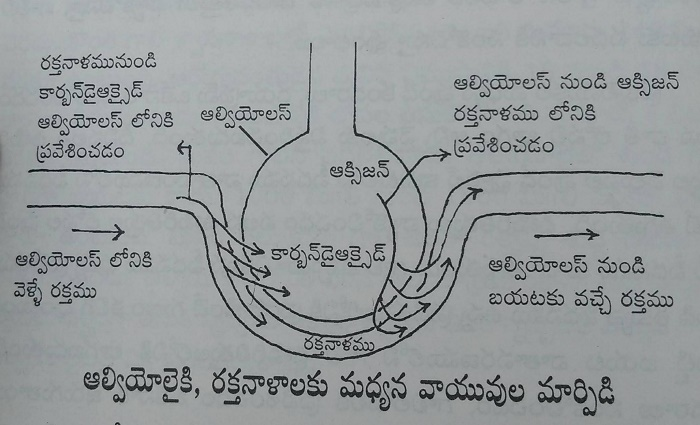
The air we inhale contains 21 percent oxygen, 0.04 percent carbon dioxide, 79 percent nitrogen, and a small amount of water vapor. Each of these gases exerts a certain pressure on the walls of the alveoli. The pressure exerted by each individual gas, according to its proportion, is called partial pressure.
The partial pressure of oxygen present in the alveoli is higher than the partial pressure of oxygen in impure blood. Therefore, oxygen from the alveoli enters the blood vessels. In contrast, the partial pressure of carbon dioxide in impure blood is higher than the partial pressure of carbon dioxide in the alveoli. Hence, carbon dioxide from the blood enters the alveoli.
Nitrogen does not participate in gas exchange with any other gas. Therefore, its quantity remains the same both in the blood and in the air present in the lungs. Since blood flows very slowly through these fine blood vessels, sufficient time is available for gas exchange to occur and for oxygen to bind with the red blood cells.
In this manner, blood is purified by releasing carbon dioxide and absorbing oxygen. This purified blood is then carried from the lungs to the left side of the heart through the blood vessels that transport oxygen-rich blood. From the heart, blood is supplied to all parts of the body, thereby reaching the cells.
Respiration at the Cellular Level
So far, we have understood how blood absorbs oxygen. Now, let us examine how oxygen reaches the cells from the blood, and how carbon dioxide is released from the cells.
Oxygen that enters the blood combines with hemoglobin in the red blood cells and reaches the cells in the form of oxyhemoglobin. The blood vessels that supply blood to the cells are extremely fine and have very thin walls. Gas exchange occurs between the blood vessels and the fluid surrounding the cells.
Since the concentration of oxygen in the blood is higher than the concentration of oxygen in the cells, oxygen moves from the blood, through the surrounding fluid, into the cells. Similarly, since the concentration of carbon dioxide in the cells is higher than that in the blood, carbon dioxide moves from the cells, through the surrounding fluid, into the blood.
The carbon dioxide that enters the blood is then carried back to the lungs and expelled outside. In this way, through the process of respiration, the body continuously supplies oxygen to the cells and removes the carbon dioxide released by them.
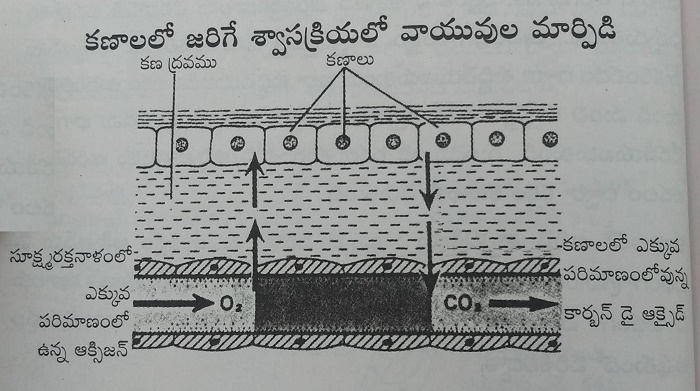
People who do not even think about whether they are drinking enough water that is within their control, or whether they are taking the food their body needs — which is also within their control — never even imagine asking whether they are inhaling deeply the air that is not within their control.
Many people do not truly understand what long breathing is, or why it is beneficial. Let us therefore understand the difference between ordinary breathing and long breathing, and reflect on the benefits we gain by practicing long breathing.
Ordinary Breathing: Ordinary breathing is the breathing that all of us normally do every day. Let us understand what happens in this process. On average, we take 18 or more breaths per minute. Under normal conditions, we inhale about 300 to 400 milliliters of air with each breath. However, our lungs are actually designed to inhale 500 to 600 milliliters of air with each breath.
When we inhale only 300 to 400 milliliters of air per breath, this limited amount of air does not reach the deepest parts of the lungs. As a result, only the upper portion of the lungs — the chest region — gets filled. When such shallow breathing occurs, the air rises only up to the chest area and lifts it upward.
If, while inhaling, a person’s chest rises and falls noticeably, it indicates that the person is not inhaling air fully into the lungs. The air they inhale does not reach the lower portions of the lungs. Therefore, whether inhaling or exhaling, such a person does not experience movement in the lower abdominal region, which corresponds to the lower part of the lungs.
When breathing occurs with movement only in the chest region and without movement in the abdominal region, it can be described as ordinary breathing or normal shallow breathing. In people who practice ordinary breathing, the number of breaths per minute is high, and the chest movements during inhalation and exhalation are clearly visible.
According to this view, people who follow ordinary breathing tend to have a lifespan limited to about 60 to 80 years, with lower energy levels and greater fatigue.
Long Breathing: When the number of breaths per minute is less than 15, long breathing is said to occur. Such people are able to inhale 500 to 600 milliliters of air with each breath even under normal conditions. In other words, they inhale fully the amount of air that the lungs are naturally designed to take in with each breath.
When 500 to 600 milliliters of air is inhaled, the air pressure is higher, and therefore the inhaled air slowly reaches the deepest parts of the lungs. As a result, the lower portions of the lungs are filled. The clear sign that the air has reached the lowest parts of the lungs is this — the abdominal region rises during inhalation and falls again during exhalation.
Anyone who experiences movement in the abdominal region while inhaling or exhaling is practicing long breathing. A baby who drinks milk naturally breathes in this manner. In people who show movement in the abdominal region, there is no noticeable movement in the chest while inhaling air.
For those who practice long breathing, the number of breaths per minute is usually between 10 and 15. Because of this, the time taken for each breath is longer. As a result, a larger quantity of air is inhaled slowly over a longer duration. When air is inhaled in this slow and deep manner, it does not remain trapped in the chest (the upper part of the lungs). Instead, it reaches the deepest parts of the lungs every time.
Because of this, in people who practice long breathing, air does not accumulate in the chest, and the chest does not move up and down during breathing. This alone is proper breathing.
When such long breathing becomes natural within us, the processes of inhaling and exhaling become so slow that they are beyond conscious awareness. The movement of air is not felt at all. Breathing then becomes an involuntary life process that happens effortlessly, without our awareness.
When long breathing becomes established in us, lifespan can extend to 100 to 200 years. An inexhaustible source of energy remains hidden within. Even after working for 20 hours a day, fatigue and exhaustion do not arise.
At this point, another doubt arises. Those who practice long breathing take 10 to 15 breaths per minute, while those who practice ordinary breathing take 20 to 25 breaths per minute. So even if more air enters the body with fewer breaths, or less air enters with more breaths, isn’t it the same? Since the important thing is to send air into the body, it may appear that both methods deliver the same amount of air. Some may feel, “What difference does it make how we breathe? The body will take in as much air as it needs.” To many people, on hearing this doubt, it may seem that there is no real difference between the two.
Let us understand whether there is a difference, and if so, what that difference is.
Every breath we inhale travels through the air passages of the lungs and reaches the alveoli — the tiny air sacs that purify the blood present in the lungs. The vital air that reaches these alveoli purifies the blood. Most of the alveoli are located in the deepest parts of the lungs. If the air we inhale remains only in the air passages, it is of no use.
When we feel hungry, what benefit is there if food remains somewhere outside? It becomes useful only when it reaches the stomach. In the same way, what matters is not how much air remains in the air passages, but how much air reaches the place where blood is purified. Air that remains in the air passages is useless.
From every breath we inhale, a certain portion of air always remains in the air passages. This happens every time. Consider a water tank built on the roof, with pipes carrying water downward. For water to reach the ground level, the pipes must first be filled. No matter how much water we draw from below, some water always remains inside the pipes.
Similarly, in our air passages, there is always a fixed amount of air that remains — about 140 milliliters. From every breath we take, after subtracting this 140 milliliters, only the remaining air reaches the place where blood purification occurs.
Now let us understand how much difference there is in the quantity of air that reaches the blood-purifying area between those who practice ordinary breathing and those who practice long breathing.
For Those Who Practice Ordinary Breathing:
If a person takes 20 breaths per minute and inhales 300 milliliters of air with each breath, the total amount of air that enters the lungs in one minute is 6,000 milliliters, that is, 6 liters of air.
Out of this, 140 milliliters of air remains useless in the air passages. This 140 milliliters must be subtracted from each breath.
So, 300 − 140 = 160 milliliters of air per breath reaches the alveoli, where blood purification takes place.
If we calculate for 20 breaths per minute:
20 × 160 = 3,200 milliliters of air per minute is actually used for blood purification.
That is, 3 liters and 200 milliliters of air (a little over 3 liters).
For Those Who Practice Long Breathing:
If a person takes 10 breaths per minute and inhales 600 milliliters of air with each breath, the total amount of air that enters the lungs in one minute is also 6,000 milliliters, that is, 6 liters of air.
From the 600 milliliters inhaled in each breath, after subtracting the 140 milliliters that remains useless in the air passages:
600 − 140 = 460 milliliters of air per breath reaches the alveoli for blood purification.
If we calculate for 10 breaths per minute:
10 × 460 = 4,600 milliliters, that is, 4 liters and 600 milliliters of air per minute is used for blood purification.
Both those who practice ordinary breathing and those who practice long breathing inhale the same total amount of air per minute into the lungs — 6 liters, just as one might assume. But when it comes to the amount of air that actually reaches the place where blood is purified, there is a large difference.
That difference is 1,400 milliliters — nearly 1½ liters of air per minute. This means that 84 liters of additional air per hour reaches the blood for purification in those who practice long breathing, compared to those who practice ordinary breathing.
Over a period of 24 hours, this amounts to an extra 2,016 liters of air used for blood purification by long-breath practitioners compared to ordinary breathers.
You may feel like saying, “Oh! That is a huge difference!”
A person who sits quietly the whole day without doing any physical work and without feeling fatigue inhales, at the rate of 6 liters per minute, a total of 8,640 liters of air through both lungs in one day. If a person performs physical labor, he can inhale even more air.
Whether one practices ordinary breathing or long breathing, the total amount of air entering the lungs in a day remains the same — 8,640 liters. Out of this, the amount of air that is actually useful for blood purification in ordinary breathers is 4,608 liters per day. In contrast, for those who practice long breathing, the amount of air useful for blood purification is 6,624 liters per day.
Thus, the difference in the utilization of vital air within the body between ordinary breathers and long-breath practitioners is 2,016 liters per day. This entire explanation is to clarify the difference mentioned earlier.
All of us inhale air simply to breathe, but not all the air we inhale is useful for purifying the blood. Only those who practice long breathing gain greater benefit from the air they inhale.
Inhaling 6 liters of air per minute is essential for all our bodies. Since the body needs this much air, it ensures that at least this quantity is inhaled every minute. Depending on lung movement, some people inhale this air in 10 breaths, others in 20 breaths, and some even in 25 breaths per minute.
How many times a person breathes depends on physical activity, food habits, thought patterns, and overall health. The utilization of vital air depends on the number of breaths taken. Likewise, energy, lifespan, thoughts, and health — all depend on breathing.
In short, the entire functioning of the body depends mainly on vital air. To ensure that this precious life force is received abundantly, long breathing is the solution.
Everyone who practices ordinary breathing feels, “We are doing fine anyway.” This is similar to a person who eats only pickle rice or gruel — he also eats and goes about his daily life. In the same way, those who consume proper, nutritious, and natural food remain healthy in every way and also go about their lives.
Now think about the difference between the health of the body of the former and that of the latter. What exists within us is all that we know, and therefore it appears great to us. In the same way, the kind of changes that occur within us when we practice long breathing are beyond the imagination of ordinary people. Many simply brush these ideas aside, saying, “Why do we need all this?” without thinking deeply about what is truly essential for us.
Every day, we are depriving our body of nearly 2,000 liters of vital air. Just imagine how much greater we could all become if we inhaled that much additional life energy. Deficiency of vital air is troubling us greatly, both physically and mentally. The complete and simple solution to all this is long breathing.
In earlier days — and even today — many people spend the entire day living only on rice, gruel, and buttermilk. They survive on such food, even though it does not provide all the nutrients required by the body. Yet, after eating such food, they work for nearly 15 hours a day, sweating profusely, without fatigue, exhaustion, or weakness. They appear extremely energetic.
On the other hand, we eat fruits, vegetables, pulses, juices, thick milk, curd, and many other foods. We eat more frequently than they do. Yet, after working hard for just five or six hours, we experience tiredness, dizziness, trembling, leg pain, and similar problems. This has become the condition of most people today. To overcome this fatigue, we feel the need to take rest.
When we reflect on why there is such a big difference in energy between them and us, one primary reason clearly stands out. They work in clean, fresh air. Their arms and body move freely during work. Because of this, the lungs expand well and fill with more air. When the body is physically active, long breathing happens naturally.
For example, while drawing water, pulling grass, digging, washing clothes on stones, pounding grains, cutting firewood, carrying loads, and similar tasks, air fills the lungs completely. With fewer breaths, more air enters the body. People engaged in such work inhale around 10 to 15 liters of air per minute. Each minute, 8 to 10 liters of air reaches the place where blood is purified.
When such a large amount of vital air reaches the cells, nearly 70 percent of their energy comes from this vital air alone. Because of this, even if food and water are not fully adequate, they remain active and energetic. In this way, throughout the day, they effortlessly supply thousands of liters of vital air to the entire body. For such people, it can be said that food and water contribute only about 30 percent to their energy.
If today we are unable to compete, even in our youth, with the work done by our parents and grandparents, the main reason for this condition is breathing. In those who worked like this, the lungs became accustomed to filling completely with air and to taking in more air with fewer breaths. Even when they are not working, long breathing continues naturally within them.
Even if they stop working for a few months or even for years, this pattern of long breathing continues for a long time. Only when physical work is avoided for many years do long breaths gradually disappear and ordinary breathing returns.
If we look at present times, we see that there is mostly mental labor, but hardly any physical labor. The arms do not move, there is no sweating. Almost everything gets done with the fingers. Just pressing switches with the fingers completes tasks within minutes. From the moment we wake up until we go to sleep, the only physical effort for many people is a one-hour morning walk. Even that feels like very hard work to people these days.
We live within four walls and mostly breathe air that has already been exhaled by others. Those who work with the mind throughout the day experience mental fatigue, which leads to anger, tension, depression, irritability, and along with these, various addictions and artificial foods become part of life.
In such a lifestyle, the lungs do not even cooperate properly to inhale 6 liters of vital air per minute. As a result, breathing becomes shallow, with 20–25 breaths per minute. This is the condition of more than 90 percent of people today. With such rapid breathing, very little vital air actually enters the body.
Because of this, deficiency of vital air develops. The cells do not receive sufficient life energy, and various kinds of damage begin to occur in all areas and in all organs of the body. If even the smallest task causes great fatigue, the main reason is severe deficiency of life energy.
Everyone knows that no matter how much food or how many medicines are taken to increase strength, there is little benefit. In fact, in today’s world, for employees, business people, and those who do not engage in physical labor, most health problems are primarily caused by deficiency of vital air.
In earlier times, scholars, learned people, kings, and others who did not engage in physical labor would practice asanas and pranayama to compensate for the lack of bodily work. Among ordinary people, pranayama naturally became part of certain daily activities.
For example, when a firewood stove went out, it would not ignite unless one blew air into it by taking deep breaths. If one blew into the stove ten or twenty times a day in this manner, there was no need to practice long pranayama separately. Sometimes, when the stove did not ignite properly, the entire kitchen would fill with smoke. When that smoke spread into the room, people would instinctively hold their breath for ten or twenty seconds without inhaling. That itself became Kumbhaka Pranayama (breath retention).
Pranayama was also incorporated into Sandhyavandanam (a traditional daily ritual). Likewise, the chanting of Om was included. The long breaths that arise naturally in complete long-breath pranayama also occur when the syllable “Om” is pronounced fully and slowly. In the same way, when the Gayatri Mahamantra is recited completely without breaking the breath, long breathing takes place. The same transformation in breathing that occurs through pranayama also happens through such mantra recitation.
Even without heavy physical labor, people were able to attain great health and strength through these practices. Those who performed less physical work lived for shorter periods. Those who worked harder lived longer than them. Those who practiced pranayama and asanas lived even longer than both groups.
When we reflect on the reason for this, it becomes clear — people who worked less absorbed less vital air; those who worked more absorbed more vital air; and those who practiced pranayama absorbed even greater amounts of vital air and therefore lived long, energetic lives.
When the circulation of vital air within the body increases significantly, a person prospers in every way. The fact that sages, ascetics, and yogis lived for 200 years indicates that they understood how to absorb life energy through pranayama. By mastering control of the mind, they also learned to control vital energy.
That they were able to live without deficiencies even at such advanced ages shows that they learned to absorb life itself through pranayama. Because of this, they were able to live for days, months, and even years without food. In other words, by richly filling themselves with vital air, they strengthened and refined their bodies.
Those who lived for 200 to 300 years had only four or five breaths per minute. With such a low number of breaths, they remained immersed in a state of joy throughout the twenty-four hours of the day.
Even if we do not desire such great powers, such a long lifespan, or such supreme bliss, should we not at least live the years we do have with health, happiness, and strength? What are we doing to live such a life? We do not perform physical labor, we do not practice asanas, there is no pranayama, there are no dietary disciplines, and there are no wholesome thoughts. When so many good habits are absent, how can health come to us? Why should spirituality arise? Why should the number of breaths reduce? Think about it — the answer lies within us.
Everything we are doing today is becoming the cause of our own difficulties. Therefore, from now on, let us begin by making small changes in our habits and changing our way of thinking. Let us first make an effort to reduce our breathing. From today itself, let us begin the practice of long breathing.
When breathing changes, the mind changes.
When the mind changes, thoughts change.
When thoughts change, actions change.
When actions change, health changes.
When health changes, happiness arises.
Human birth itself is meant for happiness. We must claim that happiness as our own. To do that, let us now understand what we need to do first.
Having avoided physical labor for so long, it is not possible to suddenly begin intense work now. To compensate for the loss caused by the absence of physical labor, long-breath pranayama exists. Even if we do not move our arms and engage in physical work, through long-breath pranayama we can still bring the number of breaths down to 10–15 per minute.
By learning such pranayama methods and practicing them daily, we can completely overcome the loss that has accumulated so far and make an effort to supply our body with the 2,016 liters of vital air that we lose every day. For long breaths to develop quickly through long-breath pranayama, proper dietary discipline must also be followed along with pranayama.
Why do breaths reduce through long-breath pranayama?
What causes breaths to increase?
What kind of food should be eaten?
How should pranayama be practiced?
How many types are there?
We shall try to understand all these aspects in detail in the coming chapters. If we first understand these subjects clearly and then practice them with sincerity, it will not take much time for positive changes to appear within us.
Let us move forward without delay, without doubt, and with a positive and receptive mind.
The lifespan of every living being depends upon its breathing. A being that takes fewer breaths lives longer, while a being that takes more breaths lives for a shorter period. Our elders say that for every living being, the total number of breaths it will take in its lifetime is decided in advance by the Creator. If we use up this allotted number of breaths (like a quota or ration) quickly, we depart from life sooner. If, on the other hand, we conserve our breaths by taking fewer and longer breaths each day, we can live for a longer time.
Modern medical science states that a human being takes 16 to 18 breaths per minute. Let us consider what kind of lifespan results if a person takes 18 breaths per minute. At this rate, one takes 1,080 breaths per hour. This comes to 25,920 breaths per day. It is said that if a person takes this many breaths daily, the average lifespan is about 80 years.
As we all know, the complete human lifespan is considered to be 100 years. If we wish to live for that long, and if we are able to reduce our breathing to 15 breaths per minute, the total number of breaths taken per day would be 21,600.
Science says that if a human being breathes 15 times per minute, he can live a full 100 years. At present, the average lifespan of an Indian has been fixed at around 55 to 60 years. This clearly indicates that today our breathing rate is about 21 to 22 breaths per minute.
At a rate of 21 breaths per minute, a person takes 30,240 breaths per day. That means an extra 8,640 breaths per day compared to the ideal count. Because of taking these excess breaths every day, the human lifespan has reduced from 100 years to 55–60 years.
There are also some people who take 25 to 28 breaths per minute. Such people pass away even earlier.
The following table shows how the lifespan of living beings varies according to the number of breaths taken per minute:
| Living Being | Breaths per Minute | Lifespan |
|---|---|---|
| Dog | 28-30 | 14 years |
| Horse | 20-22 | 40 years |
| Human | 15-16 | 100 years |
| Snake | 7-8 | 150 years |
| Tortoise | 4-5 | 200 years |
Our sages learned to cultivate long breathing through pranayama and thereby mastered the art of living for a long time. They were able to live easily for 200 to 300 years. Many ancient texts mention that they used to take only five to six breaths per minute. Some are even said to have lived with just four breaths per minute.
Breathing and the heart have an inseparable relationship. For every single breath, the heart beats four times. That means the ratio between breathing and heartbeat is 1:4. When breathing reduces, the heart rate also reduces. According to this calculation, if a person takes 22 breaths per minute, the heart beats 88 times per minute. When the heart beats more frequently, lifespan becomes shorter.
Since our lifespan depends on breathing, it is beneficial to reduce the number of breaths. If we can inhale more air with fewer breaths, not only does lifespan increase, but health, happiness, and inner purity also increase. Life then becomes truly joyful.
For such a happy and long life, long-breath pranayama can be of great help. In the Kalajnana of Brahmamgaru (traditional prophetic writings), it is stated that the full lifespan of humans will gradually decline, and from the present 55 years, it may reduce even to 16 years. To prevent such a situation, by adopting long-breath pranayama along with proper dietary discipline, a person can live beyond 100 years in good health even under present environmental conditions.
Let us make an effort to adopt such a beautiful and healthy way of life.
The number of breaths we take — whether more or fewer — is determined by the food we eat. Food plays the most important role in influencing breathing. Without practicing any pranayama at all, proper food alone can naturally bring breathing down to 8–10 long breaths per minute. Such food is uncooked, natural food.
If we consume the food that nature has prepared for human beings without spoiling it, we can all easily live for 150 to 200 years. In reality, instead of eating such food, human beings cook it, drain it, grind it, fry it, and add many artificial flavors. Because of this, the number of breaths has increased greatly.
The influence of food itself is the main cause of the unnatural breathing pattern seen in us today. Because of this kind of food, instead of the natural 15–16 breaths per minute, our breathing has increased to 20–25 breaths per minute. Let us now examine the relationship between food and breathing.
Natural Food:
Let us understand what happens when we eat natural foods such as fruits, green leafy vegetables, nuts, coconut, sprouted grains, tubers, and similar items. These foods contain abundant vitamins, minerals, and enzymes, and they are already in a form that is easy to digest. If the stomach and intestines digest even 50 percent of this food, it is sufficient.
The enzymes present in these foods greatly assist in quick digestion. These food items contain a high amount of life energy (prana). They also contain a good amount of oxygen, and therefore they take very little time to get digested in the stomach and intestines. Since life energy is present in these foods, the body does not have to struggle to digest them.
One special quality of this food is this — before eating, there is no deficiency, and after eating, there is no major change in the number of breaths. The reason why natural food does not cause drowsiness, weakness, sleepiness, or laziness after eating is that the proportion of vital air reaching the brain does not reduce even after meals. The brain continues to receive sufficient prana and remains active even after eating. Because of this, one can remain energetic throughout the day.
When this kind of food is taken, the number of breaths naturally comes down to less than 10 per minute for everyone. I myself have remained entirely on this natural food for four to five months on several occasions. During those periods, after practicing pranayama, my breathing rate remained at six breaths per minute for many hours. During the remaining time, it stayed around eight breaths per minute. Likewise, when about 70 percent raw food is consumed regularly, the breathing rate remains at 10–12 breaths per minute throughout the day.
If we truly want to reduce the number of breaths significantly, we must обязательно eat at least 50–60 percent natural food every day. Since this is beneficial for breathing, immunity, and complete health, let us begin this effort first.
Every morning, instead of coffee or tea, drink a large glass of vegetable juice mixed with honey. This may include vegetables such as carrot, tomato, cucumber, beetroot, bottle gourd, ridge gourd, and similar vegetables. This alone accounts for 10 percent raw food.
For breakfast, completely avoid items such as upma, idli, dosa, and similar cooked foods. Instead, eat a sufficient quantity of sprouted grains (green gram, black gram, ragi, chickpeas, wheat, and similar grains), along with raw coconut, dates, soaked peanuts, and similar items. This completes 25 percent nectar-like food.
Seasonal fruits should be consumed according to the season, amounting to 15–20 percent of the daily intake, preferably between 4:00 and 4:30 in the evening.
If, in this manner, 50–60 percent of the daily diet consists of natural food, you will be able to observe changes in your breathing from the very next day. If you observe daily, you will immediately notice how breathing functions differently with raw food and how it behaves with cooked food.
Cooked Food:
Human beings have become accustomed to eating only cooked food at all meals of the day. Because of this habit, an increase in breathing rate and a reduction in lifespan are commonly seen. When a person feels hungry, the breathing rate is usually around 13–14 breaths per minute. If, to satisfy this hunger, one eats cooked food until the stomach is completely full, the breathing rate rises to around 25–30 breaths per minute and continues at that level.
Let us understand why this happens.
When food is cooked, the life energy (prana) present in it is destroyed. After that, the nutrients, vitamins, and enzymes in the food are greatly reduced. Since this food loses its natural quality, the stomach and intestines are forced to work very hard and digest it one hundred percent. To digest such food, the body demands more vital air. To meet this demand, the lungs begin working harder from the moment food is eaten.
If the food contains oil, protein-rich items, and fatty substances, digestion becomes even more difficult, and we experience greater strain while eating. As long as the food remains in the stomach and intestines — for several hours — breathing remains shallow and rapid. From the time food is eaten, we are compelled to breathe more forcefully. For several hours (approximately three to six hours), we become consciously aware of our breathing. When breathing becomes something we can feel and notice, it indicates unnatural breathing.
Eating cooked food causes another problem related to breathing. We usually eat this food until the stomach is completely full. It takes about two to four hours for the stomach to empty. To improve taste, we add salt, oil, ghee, and sweeteners to food. These require water for digestion. As a result, we feel intense thirst during and after meals. Depending on the space available in the stomach, we keep filling it with water.
With food on one side and water on the other, the stomach becomes heavy and overfilled. This weight prevents the diaphragm — which lies above the stomach — from moving downward properly. As a result, the contraction and relaxation of the diaphragm reduce. When the diaphragm moves freely, the lungs can fill completely with air and release air fully. But when the stomach is under pressure due to food and water, the movement of the diaphragm reduces by about 30–40 percent.
Because of this reduction in diaphragm movement, the breathing rate increases by 30–40 percent. Along with food, any water consumed within two hours after eating further adds to this problem and increases the difficulty.
After eating, what we usually experience is not comfort, but strain. That is why it is called bhuktāyāsam — fatigue after eating. This increase in breathing and the feeling of heaviness generally lasts for three to four hours, provided we do not eat anything else during that time.
Once the cooked food present in the stomach and intestines is fully digested and enters the bloodstream, the cells absorb it from the blood and convert it into energy. That energy is what continuously sustains us. Food is converted into energy only in the presence of vital air. To convert carbohydrates into energy, the cells require relatively less vital air. But to convert fats and proteins, the cells require much more vital air. To meet this increased demand, the lungs work harder and supply more vital air to the cells. As a result, the number of breaths increases.
Every day, we use a lot of oil, ghee, eggs, meat, sweets, and similar items in our cooking. These are the very reasons why our breathing rate keeps increasing.
Everyone cooks food with adequate salt and oil and prepares many varieties of tasty dishes. While eating, as long as the food is in the mouth, people feel that it tastes wonderful. But after finishing the meal and washing their hands, does anyone truly say, “I feel light, comfortable, and peaceful inside”? Does anyone genuinely feel that way?
Instead, people feel heaviness in the stomach, burning sensations, dullness, sleepiness, laziness, fatigue, restlessness, and confusion. Rarely does anyone feel true comfort. Most of the vital air we inhale is diverted toward digestion in the stomach, leaving less for the cells and the brain. When the cells and brain do not receive sufficient vital air, feelings such as dullness, irritability, weakness, and laziness appear immediately.
Cooked food and heavily flavored food affect breathing instantly and disturb our sense of comfort. On the other hand, when we eat natural food, such as fruits, we feel how tasty they are while eating them. More importantly, even after eating, we feel light, comfortable, and pleasant in the stomach. The main reason for feeling one way in the first case and another way in the second is the change in breathing.
If we eat breakfast at 8 a.m., the breathing rate remains high until about 10 or 11 a.m. If, from that time onward, we do not eat anything and keep the stomach empty until the 1 p.m. lunch time, the breathing gradually returns to its natural state. During this period, we feel alert, active, and energetic, without dullness or heaviness. Once we eat again, this comfort disappears for four to five hours, and it returns only after the stomach becomes empty again.
Thus, if the stomach remains empty at least at intervals during the day, breathing becomes deeper and longer, and the person experiences moments of comfort and mental calmness. In today’s world, from the moment a person wakes up until going to sleep at night, irritability, anger, tiredness, mental restlessness, tension, dullness, and laziness seem to persist continuously. The reason for this is that people keep putting something or the other into the stomach all the time, carefully ensuring that it never remains empty.
Because of this, breathing remains rapid throughout the day. When breathing stays elevated all day long, mental balance gets disturbed. From there, the mind loses its stability.
When cooked food is eaten, it drains the stored energy within us and consumes the vital air we inhale. That is why it is commonly known that on days or occasions when one wants to remain mentally and physically sharp, people avoid eating until the task is completed and eat only afterward. Meditation is always practiced on an empty stomach. Worship and vows are performed without putting food into the stomach. During sports competitions, people go without eating. When delivering an important lecture, speakers prefer to do so with an empty stomach.
Similarly, school children remain alert during one or two periods before the lunch bell because there is no food in the stomach. But during the period after lunch, more than 50 percent of children tend to doze off at some point. Some others may keep their eyes open, but if you observe them closely, their minds are wandering elsewhere.
The reason for all this lies in the changes in breathing caused by food.
So far, we have understood how food influences breathing and increases the number of breaths. We have also seen how much harm is caused by this increased breathing. Therefore, if we wish to spend all 24 hours of the day calmly, energetically, and cheerfully, it is best to ensure that our breathing does not rise beyond 15 breaths per minute. If the breathing rate becomes even lower, every task we perform feels as though it is being done in a meditative state.
In such a condition, you can carry out your work with complete satisfaction, without allowing any defects or disturbances to arise. To reduce our breathing in this way, we must, every day, give priority to 50 percent natural food, as explained earlier, and cook only the remaining 50 percent of our food. In this cooked portion, it is highly beneficial to completely avoid harmful taste enhancers such as salt, oil, and ghee. By avoiding them, diseases remain at a distance, and breathing naturally reduces.
Avoid completely heavy fat-rich foods such as meat and eggs. If possible, it is even better to eat cooked food only once a day, preferably at lunchtime. During the remaining time, consuming uncooked food brings greater benefit.
Likewise, drinking water along with meals or within two hours after eating causes difficulty in breathing. If this habit can be completely given up, it is very beneficial. By following proper dietary discipline and reducing breathing to 10–12 breaths per minute, the entire day can be spent happily, peacefully, energetically, and actively.
Therefore, from now on, let us all adopt long-breath pranayama along with proper dietary discipline and live a wholesome and fulfilling life.
Breathing and the mind have a very close relationship. Their connection is like the relationship between air and fire. When air increases, fire grows stronger. In the same way, when breathing increases, the mind becomes restless. When air is steady, fire remains steady. Likewise, when breathing is stable, the mind becomes stable.
When one is able to breathe less than 15 breaths per minute, the mind remains calm and pure. When the breathing rate rises to 18 or more breaths per minute, restlessness appears, thoughts multiply, and peace diminishes. When breathing reduces, the mind becomes calm. When the mind is calm, breathing reduces further. In the same way, when breathing increases, the mind loses balance, and when the mind loses balance, breathing increases again.
Thus, the relationship between the mind and breathing is inseparable and mutually reinforcing.
Understanding this truth, our yogis taught that if we want to restrain the mind, it is enough to restrain the breath. Gautama Buddha also realized this principle and discovered a method of meditation based on awareness of breathing, through which the mind and thoughts can be brought under control.
When we are aware of inhalation and exhalation, it indicates that the mind is not yet fully steady. When inhalation and exhalation become so slow, long, and subtle that we are no longer aware of them, the mind turns inward. In that state, the mind obeys whatever direction we give it.
For the mind to reach such a state, a change must occur in the pattern of breathing. Within five to ten minutes of beginning meditation, some people naturally withdraw from the external world. In that state, their breathing becomes slow and imperceptible. At that time, the number of breaths also becomes very low.
Those who meditate while strictly following dietary discipline — especially consuming more raw food — experience only 8 to 10 breaths during meditation. When breathing slows to such a low rate, one does not feel like rising from meditation.
To prevent a cow from running in all directions, a strong rope alone is sufficient. In the same way, to restrain our monkey-like, restless mind, it is enough to use fewer breaths as the rope. At any moment when your breathing is naturally very slow, your mind remains stable without your conscious effort. When breathing increases, dullness, fatigue, and lethargy quietly enter without us even realizing it.
From the moment we wake up in the morning until we eat breakfast, almost everyone feels calm and comfortable, with no mental disturbance, anxiety, or restlessness. During this time, quarrels, fights, and verbal arguments are either very rare or completely absent.
Even if a small disagreement arises between two people in the morning, they usually make an effort not to escalate it. They tend to withdraw, thinking, “Why argue so early in the morning?” No one likes to spoil their mind at the start of the day. As much as possible, people try not to lose that early-morning peace.
Do you know the reason behind all these changes that occur in us in the morning? Have you ever wondered why even those who normally respond four times more aggressively do not behave that way in the morning? The real reason is that breathing naturally slows down.
From the time the stomach becomes empty — after the previous night’s meal is fully digested by around 2 or 3 a.m. — until breakfast is eaten in the morning, the stomach remains empty. During this period, the lungs expand freely, and the diaphragm moves smoothly up and down, allowing more air to be inhaled in fewer breaths.
At this time, most people breathe only 7–8 to 12–13 times per minute. During the entire 24-hour day, breathing rarely becomes this slow at any other time. The reason the mind experiences good thoughts, peace, and happiness in the morning is the change that has occurred in breathing.
From the moment breakfast is eaten until the stomach becomes empty again around 2 or 3 a.m., breathing remains at 18 or more breaths per minute. During this period, the mind does not remain obedient or still — it keeps running restlessly in all directions.
Having understood this secret, our ancestors deliberately practiced fasting—completely abstaining from food—in order to keep the mind under control and to attain mental and physical well-being. On festival days, on Ekadashi days, during weddings, auspicious ceremonies, and even during inauspicious occasions, they observed fasts. By doing so, they conserved their breathing throughout the day and kept the mind disciplined. This enabled them to experience greater joy appropriate to those occasions.
When we reflect on the hidden science behind fasting, we find that breathing naturally remains calm and peaceful for nearly 24 hours without our conscious awareness. Until now, we have understood how the mind becomes subdued when breathing slows down. Now let us see how breathing goes out of control when the mind loses control.
When the mind is calm, breathing also proceeds gently and slowly. The moment disturbances arise in the mind, breathing immediately begins to increase. When anger arises, when we argue, or when fear strikes, breathing changes instantly and becomes rapid and shallow. The chest and heart move sharply upward and downward with each inhalation. At such times, breathing rises to about 25–30 breaths per minute.
Whenever we observe someone’s chest heaving in this manner, it is clear that their mind is in turmoil. As soon as such mental agitation arises, a hormone called adrenaline is released into the bloodstream. Under the influence of this hormone, the heart muscles contract strongly, and the heart begins to pound rapidly. As the heart rate increases, breathing also increases proportionately.
If the heart beats 100 times per minute, breathing rises to about 25 breaths per minute. If fear or conflict intensifies further, the heart may beat 150 to 200 times per minute, and breathing becomes extremely shallow and rapid—40 to 50 breaths per minute, with the lungs pounding violently.
When breathing becomes this shallow, sufficient oxygen does not reach the blood. That is why, during anger, irritation, or agitation, we unknowingly become exhausted and weak. If such anger, fear, or conflict occurs even once in a day, the hormonal effect remains in the bloodstream for several hours, completely altering breathing patterns and heart function.
This is why our elders said, “One’s own anger is one’s enemy.” Anger causes severe harm to breathing. When breathing slows down, anger naturally subsides. A person in anger often says, “When I get angry, I am no longer myself. I don’t know what I might do.” It can clearly be said that anger turns a human being into a beast—it makes us lose awareness of who we are.
Irritation and tension in the mind greatly increase breathing. If we mind our own work without reacting to what others say, we are the ones who benefit in every way. If we react, we are the ones who suffer the loss.
“But how can we ignore it when someone says something about us?” we ask. “How dare they say such a thing to someone like me!”—this thought immediately provokes anger. In this regard, the answer given by Gautama Buddha on one occasion is profoundly insightful.
Some believers would come and harshly criticize the Buddha, accusing him of turning everyone into renunciates and atheists. No matter how long they scolded him, he would listen silently without responding. Finally, when their mouths grew tired, they would shout angrily,
“Hey! We have been abusing you for so long—does none of it affect you? Are you not even human?”
Then Buddha would calmly reply:
“When a guest comes to our house, if we invite them, they enter; if we do not invite them, they turn back and go away, isn’t it? In the same way, if I accept your words, they will enter me and cause me pain or increase anger within me. But I am not accepting your words. So just like an uninvited guest who turns back, your words return to you and affect you—not me. They have nothing to do with me.”
Hearing this answer from Buddha, they were left helpless and turned back.
If we do not take to heart whatever words others say, we benefit. Those who speak such words are the ones who suffer mentally. But if we accept those words, then along with the speaker, we too get harmed.
Because there is a very close relationship between the influence of thoughts and our breathing, I would like to place before you a simple and effective understanding:
What we eat with our mouth belongs only to the one who eats — it does not belong to anyone else.
What we hear with our ears belongs only to the listener — it does not belong to anyone else.
What we see with our eyes belongs only to the one who sees — it does not belong to anyone else.
In the same way, when these three belong only to the individual, the words spoken also belong only to the speaker. No matter how many words someone throws at us, none of them truly belong to us—they return to the speaker and ultimately harm them alone.
Therefore, if we can protect ourselves from anger, agitation, and mental disturbances, our breathing gets conserved.
Even when the mind is disturbed, breathing changes. Likewise, when breathing is disturbed, the mind also changes. Only when both the body and the mind are balanced can we truly be well—only then are we healthy.
When the flame is reduced, milk that is boiling over calms down on its own. In the same way, if we control our breathing rate with the help of long pranayama, the mind — like boiling milk — automatically comes under control.
Just as it is extremely difficult to stop milk from boiling without reducing the flame, it is equally difficult to control the mind without reducing the number of breaths.
Sprinkling water on boiling milk only works temporarily. Likewise, forcefully pulling back a restless mind also brings only temporary relief. The mind cannot be mastered this way.
If you truly wish to gain mastery over the mind, first gain mastery over the breath. This is the easiest path, the most effective path, and the correct path—never forget this.
Everyone says that a person should have body weight appropriate to their height and age. When the body weight is within this natural limit, breathing remains normal. But when weight increases unnaturally, breathing also becomes unnatural and excessive. Once breathing begins to increase, deficiencies start appearing throughout the body.
That is why overweight people are unable to do any task energetically. They get tired quickly and experience breathlessness more often. Their lifespan also becomes shorter. The primary reasons for all these changes are an increase in the number of breaths and a deficiency of vital energy within the body.
Let us now understand how breathing changes in people who gain excess weight.
Suppose a person gains 10 kilograms more than their ideal body weight. In those additional 10 kilograms of flesh, hundreds of millions of new cells are formed. To supply blood circulation to this increased tissue, new blood vessels are required. For every one kilogram of additional flesh, approximately 3,000 kilometers of blood vessels are created.
This means that when a person gains 10 kilograms of extra weight, around 30,000 kilometers of additional blood vessels are formed inside the body.
All the cells present in this extra tissue must be nourished continuously. And the very first thing these cells need is vital life energy (oxygen).
However, when the body gains weight, the lungs do not grow along with it. The lungs remain the same size as they were when the person had normal weight. If lung capacity were to increase even by 10% along with a 10-kilogram weight gain, the damage would not be so severe—but this does not happen. The lungs remain unchanged.
Similarly, the amount of blood in the body does not increase significantly with weight gain. The five liters of blood that existed when the person was lean do not suddenly become six liters just because body weight increased. Blood volume remains almost the same.
The oxygen we inhale is carried to the body’s cells by red blood cells. These red blood cells also do not increase proportionally just because body weight increases.
So while nothing increases—lungs, blood volume, or red blood cells—the body’s demands increase significantly.
Now the body must somehow meet these increased demands. It is like a situation where expenses have increased but income has remained the same.
When a dog gives birth to one or two puppies, the mother’s milk is sufficient for those two puppies. Both puppies grow strong and healthy. This situation is similar to when a person maintains their ideal body weight.
But suppose the dog gives birth to half a dozen puppies the next time. Now the same milk has to be shared among all six puppies. In this case, just like those puppies, our body cells have increased in number. Since there is not enough milk for all the puppies, they all become weak. Three or four puppies may even die, and the remaining ones become thin and dried out.
In the same way, within our body, the same life energy is distributed in small amounts among all the cells. Because the number of cells has increased, the lungs are forced to work more frequently to supply more life energy. When the lungs work more frequently, breathing increases.
If 16 breaths per minute is normal, then due to an increase of 10 kilograms in body weight, breathing increases to 23 or 24 breaths per minute. From the moment breathing increases, lifespan begins to decrease. That is why people who are very overweight tend to die earlier.
It is very difficult for heavily overweight people to live 100 or 110 years. On the other hand, extremely thin and frail elderly people often live much longer. When people see such very thin old individuals, they sometimes think, “Why hasn’t this skinny skeleton died yet?” But because they are so thin, life energy reaches them in greater proportion, and therefore their lifespan becomes longer.
For overweight people, due to insufficient life energy, lifespan gets exhausted quickly.
Because the cells of overweight individuals do not receive sufficient oxygen, energy production is low. That is why they get tired quickly no matter what work they do. Even climbing a small height or carrying a load becomes difficult for them.
Climbing steps or carrying weight requires even more oxygen. Since overweight individuals already do not receive enough life energy during normal conditions, when they attempt such activities, the shortage becomes severe and they struggle greatly.
In contrast, when a person is lean, life energy is supplied adequately, and that is why fatigue does not occur quickly.
For people who have gained excess weight, snoring during sleep also occurs due to a shortage of life energy (oxygen). The life energy inhaled through both nostrils is not sufficient for them, so they begin to breathe through the mouth as well, which results in snoring.
Along with increased body weight, if dietary habits are poor, if sweets are consumed in excess, or if cigarettes are smoked frequently, the number of breaths per minute increases even more.
In people who are significantly overweight, changes such as excessive lethargy, excessive sleep, irritability, and lack of mental peace occur mainly because the body does not receive sufficient life energy.
Our elders did not say, “Debt is not wealth, and swelling is not strength,” without reason. There is deep meaning behind this saying. When weight increases, breathing increases. When breathing increases, lifespan decreases. Therefore, it is best to maintain the lowest healthy body weight possible.
To reduce weight and to inhale life energy fully, long-breath pranayama is extremely helpful. With the support of this pranayama, overweight individuals can practice it twice daily and prevent life-energy deficiency in the body.
For overweight individuals, no other form of exercise supplies life energy as effectively as this method. Long-breath pranayama alone is the solution. By understanding this secret, one can prevent this deficiency and protect their health.
Nowadays, people feel that in order to look attractive, one should have at least a small potbelly. They consider a flat or tucked-in abdomen to be a sign of poor health. As times have changed, our thinking has also changed in this direction.
Before marriage, it was very rare for people to develop a belly. From the moment marriage takes place, however, many people begin to develop a protruding abdomen. Newly married couples, caught up in new affection, lovingly serve each other food, talk at length, and tend to eat more than necessary. As a result, a small potbelly slowly begins to form.
When people around them say, “You look healthier after marriage,” they feel pleased and continue the same eating habits. No one gives it a second thought until that belly starts interfering with daily activities.
For a healthy person, the chest should be broad, while the waist and abdomen should be narrow. The waist measurement should be 8 to 10 inches less than the chest measurement. When the body has this kind of structure, breathing functions properly.
Unfortunately, in today’s times, many people have an abdomen that is 8 to 10 inches larger than the chest. This is the minimum difference we are seeing. In some people, the chest becomes narrow like a frog’s, while the abdomen becomes round and bulging all around.
Our elders used to say something meaningful: If a straight scale is placed touching the chest and drawn downward toward the navel, it should not touch the belly at the navel level — the belly should remain inside that line. A flat, tucked-in abdomen is a sign of complete health.
Earlier, it was understood that the chest should be wide and the abdomen balanced. Today, we have completely reversed this truth — instead of widening our chests, we are widening our abdomens. There is a very close relationship between a large abdomen and breathing. As the belly gradually increases, the number of breaths per minute also increases. Let us now examine the relationship between the abdomen and breathing.
If we are able to inhale air fully into both lungs, all the way to their lower ends, each time we breathe, that is called proper breathing. When breathing occurs in this way, the number of breaths remains low. If this does not happen, the number of breaths increases.
Whether proper breathing is happening or not can be observed externally. If we are inhaling air fully, the abdomen moves up and down with every breath. This abdominal movement while breathing indicates proper breathing. When a baby drinks milk, its abdomen moves noticeably with each breath. We can also observe a dog’s abdomen rising and falling clearly while it breathes.
This abdominal movement is a sign that the lungs are filling fully with air. If, while inhaling, the abdomen does not move and only the chest rises and falls, it means that only two portions of the lungs are being filled, and the lower portion (abdominal region) is not receiving air at all. People who breathe this way tend to have more breaths per minute.
There are two main reasons why the abdomen does not move during inhalation: An enlarged belly and Food present in the stomach
Enlarged Belly:
Above the abdomen lies a muscle called the diaphragm, which continuously moves up and down to help both lungs inhale and exhale air. When the diaphragm moves downward, we inhale; when it moves upward, we exhale. The diaphragm is extremely important for the breathing process.
If the diaphragm’s contraction and relaxation work properly, we are able to inhale air fully into the lungs, all the way down to the abdominal region. When fat does not accumulate in the abdomen, these diaphragm movements remain smooth and effective.
However, once the abdomen begins to enlarge or excess fat accumulates and the body becomes bulky, changes start occurring in the way we breathe. Normally, if we pinch the abdominal fat with two fingers and the thickness is about half an inch to one inch, it is considered healthy. But today, for many people, even one hand is not enough, and the belly can be grasped only with both hands. In some people, no matter how much they try, they cannot even get a proper hold — such is the thickness.
This happens because the fat we consume accumulates and builds up in the abdomen. Once the abdomen becomes thick and protrudes forward, it begins to press against the diaphragm, preventing it from contracting downward properly. The weight of the abdomen constantly pushes upward on the diaphragm.
As a result, the diaphragm’s downward movement is reduced, meaning the lungs are unable to expand fully. Less air enters the lungs, and air fills only the upper two portions. From that point onward, the abdomen no longer moves during breathing, and instead the chest begins to rise and fall. Consequently, the number of breaths per minute increases significantly.
The thicker the abdomen and the more it protrudes forward, the more the lungs become restricted, reducing their capacity to function fully.
Presence of Food in the Stomach:
The lower ends of the lungs are located on either side of the abdomen. When the stomach is empty, the diaphragm’s contraction and relaxation function very well. In that condition, air is able to reach right up to the lowest parts of the lungs.
Whenever we are very hungry, or when we observe the abdomen in the morning, we can clearly see it moving up and down with each breath. But observe the body immediately after a meal—the abdomen stops moving and instead the chest begins to rise and fall.
The reason is simple: we eat until the stomach is full. A stomach filled with food prevents the diaphragm from moving downward properly. As a result, we are able to inhale less air. As long as food remains in the stomach, the diaphragm performs only 60–70% of its normal contraction and relaxation. Consequently, we are able to inhale only 60–70% of the required air.
That is why, due to insufficient pranic energy, we feel heaviness, drowsiness, and lethargy as long as the stomach feels heavy. In addition, the weight of food in the stomach presses against the lower portions of the lungs located on the sides, further preventing full inhalation.
In this way, many of us keep our stomachs constantly full throughout the day. We do not tolerate even a slight emptiness. When a car runs low on fuel, we fill the tank completely and then drive until it empties again—we do not keep topping it up every hour. Similarly, we should not eat again until the “tank” of food in our body is properly emptied.
If a car uses five liters of fuel today, we do not refill those five liters immediately just because they were consumed—we wait until the next proper time. Likewise, if we allow the stomach to empty gradually and avoid refilling it repeatedly every hour, it is beneficial for breathing.
As the stomach empties, more air is able to enter the lungs. If we keep filling the stomach continuously with something or the other, we end up inhaling only 60–70% of air for nearly 20 hours a day. But if we eat only three times a day—morning, afternoon, and evening—then for about 10 hours breathing remains restricted, while during the remaining 14 hours, the lungs get the opportunity to inhale air fully.
That is why elders say, “Those who eat less live longer.” Those who eat less receive more air, while those who eat more receive less air. Our lifespan depends on the amount of air that enters the body. If one desires to live longer, one only needs to make the effort to fill the lungs with more air.
If throughout life we are able to breathe in such a way that the abdomen moves freely, we can live physically and mentally happy lives. More pranic air brings more energy. Therefore, we must remove the obstacles that prevent adequate intake of pranic air.
If the abdomen begins to protrude even slightly beyond the chest, one must start working to reduce it immediately. If the abdominal fat cannot be held properly even with two fingers, it is a warning sign that illness is approaching. Never forget: an enlarged abdomen and overeating shorten lifespan.
Abstaining from all kinds of food and allowing the stomach and intestines to rest completely is called fasting. Our elders understood the secrets hidden in fasting and made it an integral part of their lives. Through fasting, they used it as a means to attain physical purification and mental tranquility.
They realized that if people were told simply that fasting brings physical cleanliness and mental peace, many would neglect it out of laziness. Therefore, they proclaimed that fasting brings spiritual merit (punya). People tend to value religious merit more than health, so fasting was associated with God. Their idea was that even if fasting was observed for religious reasons, it would still benefit the body in two ways.
That is why fasting was practiced on Saturdays, Ekadashi days, during festivals, rituals and abhishekams, and during the months of Kartika and Dhanurmasa. Today, however, we have distanced ourselves from these practices.
By giving up fasting, modern humans are harming themselves in two ways. It is therefore very necessary that we understand the benefits of fasting and make an effort to practice it again.
We eat some kind of food three or four times every day. In order to digest the food we eat, the stomach and intestines need not only digestive juices, but also three more essentials. These are oxygen (pranic air), blood, and energy. As long as food remains in the intestines, all three are required for digestion.
That is why, after eating, we begin to breathe more heavily. It is also why we feel more tired and sluggish after meals than before. Since a greater share of our required energy and pranic air is diverted toward the stomach, these changes occur. The normal amount of air we inhale is not sufficient, so the number of breaths gradually increases.
Then, to convert this food into energy, the cells require even more pranic force. When we fast—without eating any food—the air that would otherwise be sent to the intestines and cells for digestion is saved. This conservation of pranic air itself is what fasting truly means. Likewise, fasting also helps conserve the body’s energy.
On a fasting day, when the stomach remains completely empty, it does not press against the diaphragm. As a result, the lungs are able to fill fully with air. When the lungs fill completely, the number of breaths automatically decreases. Thus, fasting means that for 24 hours the breathing rate remains very low.
Since no food is eaten, the pranic air that would have been spent on digestion is also conserved, further reducing the number of breaths. It is because such profound changes occur in the breathing process that the saying arose:
“There is no austerity greater than the vow of fasting.”
Fasting is as powerful as deep penance (tapasya). Just as penance brings discipline and mental peace, the same qualities can also be attained through fasting.
On a fasting day, breathing becomes longer and deeper than on any other day. On no other day can we observe such a low number of breaths. The fewer the breaths, the more peaceful and joyful the mind becomes. Since the mind should be happy and cheerful on auspicious days, our elders made it a habit to observe fasting whenever an important or sacred day arrived.
If we wish to truly experience mental happiness and inner peace on any given day, fasting on that day will fulfill that desire. If, instead, we eat heavily on such a day, the comfort and joy we seek will move farther away from us. From now on, let us try observing at least one fasting day per week to significantly reduce our breathing rate.
We have received this human birth to experience limitless happiness. The food we consume every day is preventing us from attaining that joy. At the very least, let us ensure that once a week, food does not harm us or disturb our peace. Since we have been eating continuously from the day we were born, let us experience how pleasant it feels to give the stomach a rest.
Many people fear fasting because they think that working without eating will cause weakness. Even if we consume fruit juices or fruits, digestion must still function, so that cannot be considered true fasting. If there is something that can provide energy without activating digestion, we can consume it and still observe a fast.
For this very purpose, we are blessed with honey, the nectar of immortality. With the help of honey, fasting can be practiced in a way that provides energy, suppresses hunger, and helps reduce the breathing rate. Let us now understand how to observe a once-a-week fast using honey.
Only after observing such fasting two or three times will the body and mind begin to adjust to it. From then on, it feels very pleasant. On the very day of fasting, one clearly realizes how much the food we eat every day obstructs our breathing and our happiness.
Just as we go to the office or business for six days and take a holiday on one day, in the same way let us eat for six days and give the stomach rest for one day. Any day is suitable for this. On the day of fasting, it is best to spend more time in meditation, or read good spiritual books, or simply keep the mind calm and free from unnecessary thoughts.
By doing so, we can gain mental health through fasting, and physical health through giving rest to the stomach, both in a single day. Let us now make a sincere effort to understand the hidden wisdom behind fasting.
Just as time and place are important for doing any good work, they are equally important for practicing pranayama. If pranayama is practiced at random times or in inappropriate places, not only will there be no benefit, but it may even lead to difficulties. Therefore, in order to gain maximum benefit from pranayama, let us first understand when and where it should be practiced.
When Should Pranayama Be Practiced?
During the entire day, the time when the atmosphere is cleanest and least polluted is the early morning hours before sunrise. This is also the time when the mind is most peaceful in a 24-hour cycle. Hence, the most suitable time for pranayama is between 4:00 a.m. and 6:00 a.m.
At this time, the air contains a greater amount of vital energy (prana). In addition, the environment carries positive vibrations. Once people begin to wake up, their thoughts and activities start affecting the atmosphere, gradually disturbing these vibrations.
The scriptures especially recommend practicing pranayama during the Brahma Muhurta. During this time, both nostrils inhale air together and exhale together. At other times of the day, this does not happen in the same way. Usually, one nostril inhales while the other exhales. This pattern continues for a few hours, after which the roles reverse — the inhaling nostril begins to exhale, and the exhaling nostril begins to inhale. In this way, the two nostrils alternate their functions throughout the day.
To observe this alternation, one can place the fingers about one inch below the nose and gently exhale; it becomes clear that air flows mainly through one nostril at a time.
However, during the Brahma Muhurta, both nostrils inhale and exhale together, making pranayama much easier and more effective at that time.
Similarly, during the evening twilight period, approximately between 4:30 p.m. and 5:30 p.m., both nostrils again function together. Therefore, pranayama is also recommended in the evening at this time. If possible, practicing in the evening is beneficial as well.
Since the advent of television, going to bed late has become a common habit, and consequently people are waking up late. Because of this, the Brahma Muhurta often passes by. Even if it does, it is still better to practice pranayama at a later time rather than not practicing at all. One may practice anytime before 7 or 8 a.m.
However, if pranayama is started late in the morning, there tend to be many disturbances — phone calls, visitors, or other interruptions. As much as possible, pranayama should be practiced without mental tension or hurry. One must consciously set aside a quiet, undisturbed time and practice with calmness.
Pranayama should always be done before consuming any food. Even beverages like bed coffee or tea are not suitable before pranayama. Practicing pranayama in the evening is also beneficial. Most importantly, the stomach and intestines must be empty. The stomach should feel light and hungry. If possible, one may practice between 4:30 p.m. and 5:30 p.m., or any time before 7 p.m.
It is even better if, during the 20 to 30 minutes of pranayama practice, one does not speak to anyone at all. This brings deep peace to the mind. If one keeps talking in between, that sense of comfort and joy will not arise. Whenever possible, practice twice a day; when that is not feasible, at least continue the morning practice regularly.
Where Should Pranayama Be Practiced?
If possible, pranayama should be practiced outdoors, in an open environment. Even during winter, it can be done outside, because pranayama generates internal heat, and cold will not be felt.
In crowded residential areas, it is best to go up to the terrace and practice there. If that is not possible, one may practice in the veranda. If even that is unavailable, it can be done in the bedroom, provided the doors and windows are kept fully open. Fans should not be used. Kitchens and storage rooms are not suitable places for pranayama.
What is important is that the air we exhale should be able to flow out freely, and fresh, clean air rich in vital energy should flow in from outside while we sit and practice.
Practicing pranayama every morning in a peaceful environment, with a calm mind, free from disturbances, and with proper airflow, makes the entire day auspicious and beneficial. Allocating some time for pranayama in the evening as well is even more advantageous.
Immediately after waking up in the early morning, one must first attend to the natural bodily functions. Effort should be made to have a smooth bowel movement. If this does not happen, the stomach feels heavy and it becomes difficult to inhale fully. Therefore, upon waking up, without starting any other activity, one should first ensure bowel cleansing. Only after that should pranayama be practiced.
First Step: Drinking Water:
Immediately after waking up, if there is an urge to urinate, one should first relieve it. Some people experience bowel movement along with urination immediately after waking up—if that happens, it is very good. Otherwise, one should go to urinate, return, rinse the mouth well, and then attempt to drink water.
Those who suffer from belching, cough, breathlessness, phlegm, acidity, and similar issues should drink lukewarm water. Others may drink normal-temperature water. Refrigerated water should not be consumed.
It is best to drink 1 to 1.5 liters of water in one or two rounds within 5 to 6 minutes. The more water one can comfortably drink at once, the better. Drinking a larger quantity of water at one time creates pressure in the stomach, and if that pressure is sufficient, it helps the bowels move smoothly and quickly.
If water is consumed only in small sips, adequate pressure is not created in the stomach, and bowel movement does not occur properly.
First Bowel Movement:
When water is consumed as described above, the pressure created in the stomach stimulates the nerves there. Immediately, due to the gastro-colic reflex, movements begin in the intestines.
The pressure of the water in the stomach is transmitted to the lower colon, causing the stool in the intestines to start moving forward.
After drinking the water, do not engage in any other activity. Keep your mind focused on the intestines and walk slowly back and forth inside the house for 5 to 10 minutes, observing the internal movements. By consciously directing attention in this way, the nerves holding the stool relax naturally, allowing most of the intestinal contents to move forward and get ready for elimination.
One should not go to the toilet immediately. Go only when intestinal movements increase strongly and there is a clear, urgent sensation that the stool must be passed. Until then, remain outside, stay mindful, and wait.
When you go at that moment, the entire bowel movement passes comfortably in one go, often taking less than half a minute. Only after completing this smooth bowel movement should any other work be started. This practice should be made a regular part of daily routine.
After that, brush the teeth. Wear clothing suitable for pranayama and other physical activity—loose around the waist and comfortable. Any physical activity may be started 20 to 25 minutes after drinking water.
Physical Practice (Body Conditioning):
Many people who do little physical labor wake up in the morning and perform various kinds of physical practices. For those who follow different routines, let us understand when pranayama should be done.
1. Those who practice asanas (yogic postures):
It is better to do pranayama first and then practice asanas. Doing long, deep pranayama beforehand benefits the asanas greatly. Pranayama increases the stored vital energy (prana) in the body, reduces the number of breaths, and brings mental calmness.
When the body is prepared through pranayama and then asanas are practiced, there is no fatigue due to lack of prana during the postures. One can hold each asana for a longer time instead of releasing it quickly. As a result, the benefits of the asanas increase.
When the mind is free from thoughts while performing asanas, the body gains greater energy from them. For these reasons, it is best to do long-breath pranayama first and then practice asanas.
2. Those who habitually go for a morning walk:
It is better to complete the walk first and then do pranayama. Walking generates a mild warmth in the body, which helps keep the breathing passages relaxed and open. The slight moisture or mucus present in the nose evaporates during walking, so that the nostrils are clear when pranayama is done.
3. Those who do light exercises, aerobics, or jogging (non-exhausting running):
Such practitioners should also complete these activities first and then practice pranayama. As mentioned above, these exercises help make the respiratory passages freer and more open.
4. Those who regularly perform Surya Namaskars (sun salutations):
Doing them first helps the body and lungs become fully relaxed and open. After that, pranayama becomes easier and more effective. There will be no obstructions in the nostrils.
5. Those who do none of the above practices:
They may begin directly with pranayama.
Things Required:
1. Cloth for the nose:
While doing pranayama, mucus or sticky secretions inside the nostrils often loosen and come out. Without getting up in between, one should keep a handkerchief or small cloth nearby to wipe the nose while remaining seated.
2. For phlegm in the throat or lungs:
Some people have phlegm in the throat or lungs. During pranayama, such phlegm may loosen and come out, even if it does not appear at other times. When this happens, without disturbing the posture (without breaking Vajrasana), one may slightly turn aside and spit nearby.
This may happen five or six times for some people. Therefore, it is good to keep a spittoon or folded newspaper nearby for this purpose.
3. Proper seating (Vajrasana):
Pranayama should ideally be done while sitting in Vajrasana. To sit for a long time without leg pain and without moving, the surface beneath should be slightly soft.
Sponges should not be used, as they make the posture unstable. Instead, one should use a blanket or a yoga/asana mat on the floor. Along with this, keep a thin blanket.
Fold this blanket neatly and place it near the ankles (behind the heels while sitting in Vajrasana—this becomes clear when seen in a picture). This helps prevent pain and allows one to sit comfortably for a longer duration.
After waking up, one should first complete the morning eliminations, then generate a little warmth in the body, make all the necessary seating arrangements, and only then sit for pranayama.
If one prepares in this manner, pranayama becomes very effective and smooth.
Among the nine precious gems, the diamond holds the highest value. In the same way, among all yogic postures, Vajrasana is as valuable as a diamond. That is why this posture is called Vajrasana.
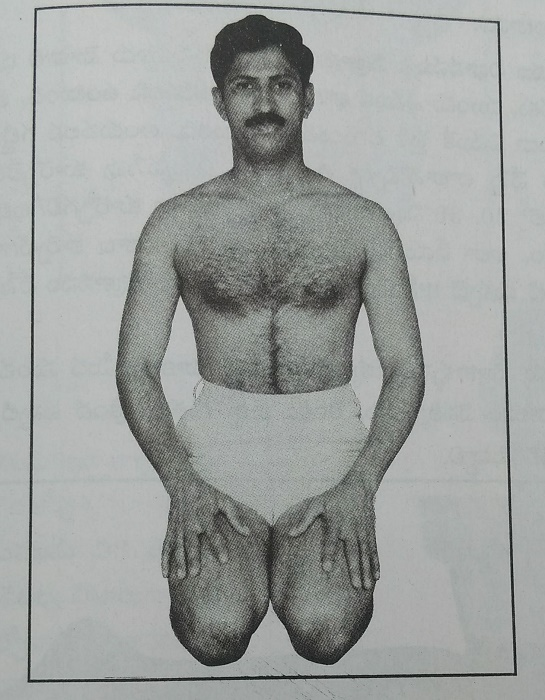
When we practise pranayama, we must sit with the spine perfectly upright. No matter how else one sits, there is usually some forward bending at the waist. Even a slight forward bend causes partial compression of the lungs. As a result, air cannot enter the lungs fully.
For the lungs to remain open and expansive, the spine must be held erect, without even the slightest forward bend. Even when sitting in Padmasana or Sukhasana, the waist may unknowingly bend forward after some time. This leads to the same difficulty.
To avoid such problems, there is one posture that is easy to assume, stable, and ideally suited for pranayama—that posture is Vajrasana.
Let us now understand how to practise Vajrasana properly.
Method of Practice (Vajrasana):
When sitting in Vajrasana, the front bony portion of the leg — from the knee down to the foot — must rest on the ground. This area has very little muscle; it is mainly bone that comes in contact with the floor. Because of this, practising Vajrasana directly on a hard surface becomes quite painful, making it difficult to sit for long.
Therefore, it is important to prepare a comfortable base so that one can sit in Vajrasana steadily and comfortably for 20 to 30 minutes without movement. A soft yoga mat, blanket, carpet, or folded quilt should be spread on the floor, and Vajrasana should be practised on it.
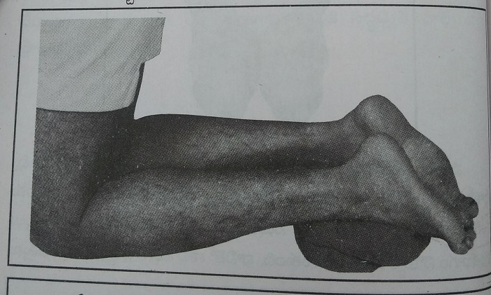
1. Place both knees close together and kneel on the floor. Stretch both feet backward. Fold a thin blanket and place it under the ankles (near the heel area) for support.
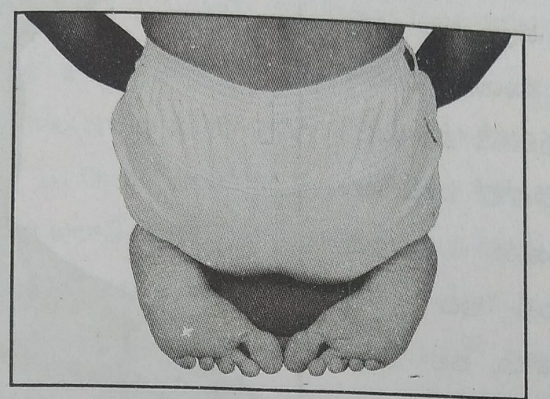
2. Keep the big toes of both feet touching each other. Maintain a gap of about one hand-span between the two heels. Now gently lower yourself and sit on the legs so that both buttocks rest on the heels.
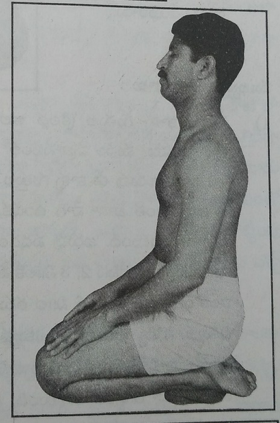
3. Place the hands naturally on the thighs. Sit with the waist and spine perfectly upright, forming a 90-degree vertical posture. While sitting in Vajrasana, the body must remain straight like a pillar, without bending.
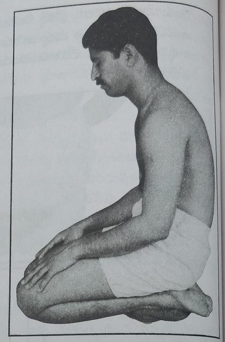
4. If one sits by bending the waist forward, it is not considered Vajrasana. Bending forward completely negates the benefits of the posture. Sitting with a bent waist—as shown incorrectly in some examples—is not the right method and should not be practised.
Important Points:
1. Why place a folded blanket under the ankles?
When we sit in Vajrasana, about 60–70% of the body’s weight rests on the ankle–heel area. Until now, this part of the leg has never been stretched or loaded in this manner. Because it is suddenly stretched and made to bear weight, pain is felt.
Since this area is not accustomed to such pressure or stretching, within 2–3 minutes of sitting in Vajrasana, many people feel like they cannot continue and want to stop. For some, this feeling comes after 5–6 minutes.
By folding a thin blanket and placing it under the ankles, the pressure is reduced to some extent. This helps minimize pain and discomfort, allowing one to sit longer and without movement in Vajrasana.
2. For those new to Vajrasana
People who are not used to Vajrasana cannot sit in it for long durations initially. Within 5–10 minutes, pain and numbness begin to appear, prompting them to come out of the posture.
In such cases, it is best to gradually increase the sitting time, little by little each day, until the body adapts.
3. Numbness in the legs during Vajrasana
When sitting in Vajrasana with the legs folded backward, blood circulation from the knees down to the feet is temporarily reduced. Because of this, numbness in the feet may begin within 5–10 minutes.
If one remains in the posture despite the numbness, after some time the pain sensation disappears, and even touch may not be felt clearly due to numbness.
During Vajrasana, most of the blood flow is directed above the knees, while the supply to the feet is reduced.
One may continue Vajrasana until pranayama is completed, even if mild numbness is present. However, if the numbness becomes too uncomfortable, the posture may be released in between.
4. What to do after coming out of Vajrasana
When it becomes difficult to remain in Vajrasana, one should release the posture and sit with the legs stretched forward, as shown in the reference image.
The blood that was previously restricted around the knee area now rushes rapidly toward the feet. Within 2–3 minutes, both feet turn reddish.
Compared to the reduced circulation during Vajrasana, the feet now receive almost double the blood supply. This enhanced circulation is one of the major benefits of Vajrasana for the feet.
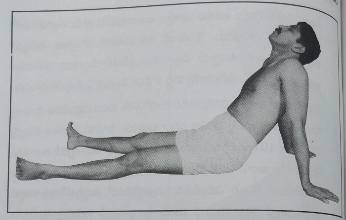
5. Benefits of Vajrasana for the legs
Practicing Vajrasana improves blood circulation to the legs and helps prevent numbness, cramps, and pain in the feet and ankles.
6. After releasing Vajrasana
When you come out of Vajrasana and stretch your legs forward, you must remain seated in that stretched position until the numbness completely subsides and normal blood circulation returns to both feet.
Only by stretching the legs in this way does the full benefit of Vajrasana reach the legs.
7. Effect on the spine and mind
In Vajrasana, the waist and spine remain perfectly upright. Because of this, the nerve flow around the spinal column becomes active, and blood circulation also improves significantly.
From the moment one sits in Vajrasana, the mind becomes calm, and unnecessary thoughts naturally reduce.
8. Vajrasana after meals
Generally, it is advised not to practice any asana after eating. Vajrasana is the only exception, and it is specifically recommended after meals.
When practiced immediately after eating, it helps digest food faster. Keeping the spine upright and the legs folded allows greater blood flow to the abdominal organs, making digestion more efficient.
Because the spine remains straight, the weight of the stomach does not press on the diaphragm, so breathing is not disturbed.
Practicing Vajrasana after meals prevents post-meal heaviness and discomfort. Sitting upright is the key reason for this benefit.
While sitting in Vajrasana, intestinal and stomach gases are easily released, preventing bloating and heaviness.
9. When Vajrasana can be practiced
Vajrasana may be practiced during prayers, meditation, or whenever one wants to sit comfortably while empty (on an empty stomach).
10. Precautions and extended benefits
People with severe knee pain should not practice Vajrasana.
With proper practice and habituation, one can sit motionless in Vajrasana for one to one-and-a-half hours.
When the mind is disturbed, simply sitting in Vajrasana, closing the eyes, and focusing on the breath can immediately calm the mind and reduce thoughts.
Vajrasana can be practiced at any time of the day. Sitting in Vajrasana while reading good books or spiritual texts is also beneficial.
If one becomes comfortable sitting in Vajrasana for long periods, the entire pranayama practice can be completed in Vajrasana itself.
Let us cultivate the habit of sitting comfortably and effortlessly in Vajrasana.
There are five types of long pranayama that we need to practice. They are:
All these five types of pranayama should be practiced every day in the morning.
Let us now understand in detail how to perform each type, the rules that must be followed, and the benefits obtained by practicing them.
I. Abdominal Bhastrika:
The word “Bhastrika” refers to the bellows used by a blacksmith, which forcefully blow air to intensify the fire. In the same way, since air is inhaled and exhaled with controlled pressure, this practice is called Bhastrika.
Because this pranayama is performed with the help of the abdominal muscles, it is specifically called Abdominal Bhastrika.
Preliminary Instructions to Be Followed
1. Sitting Posture
Sit in Vajrasana with the spine kept perfectly upright.
Those who are unable to sit in Vajrasana or on the floor should sit on a chair or stool, keeping the spine straight, without leaning against anything.
If Vajrasana is difficult, one may sit in Sukhasana, but must ensure that the waist and spine remain completely erect.
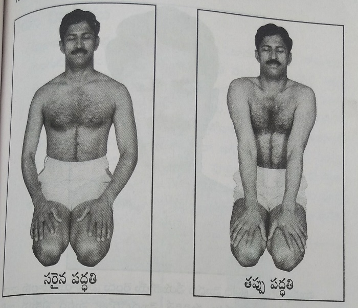
2. Position of the Hands
Those sitting in Vajrasana should keep their hands placed openly and relaxed, as shown in the photograph, without pressing them against the chest.
Sitting in this manner allows proper expansion and contraction of the lungs.
Many people unknowingly press their hands tightly against the chest while sitting. This restricts the abdominal muscles and lung muscles, preventing them from expanding fully.
Placing the hands incorrectly, as shown in the wrong posture photograph, is not the correct method.
3. Mouth Position During Pranayama
While practicing pranayama, neither the inhaled nor the exhaled air should pass through the mouth.
To ensure this:
This positioning ensures that all breathing occurs only through the nose.
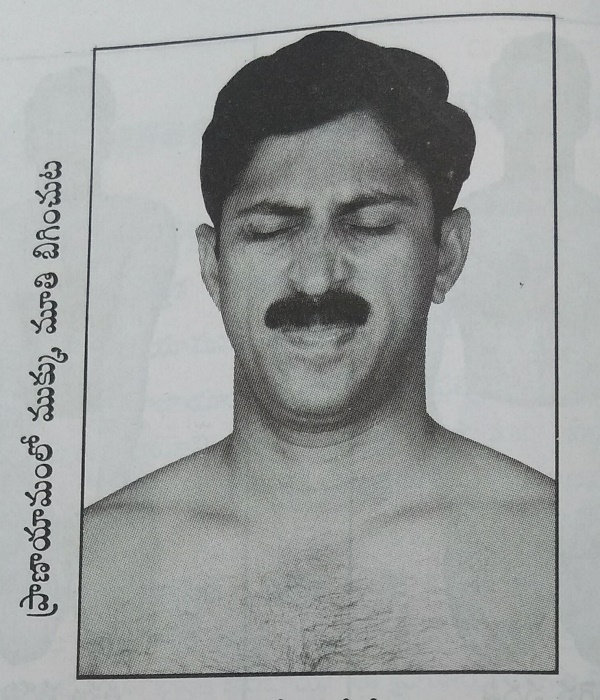
4. Creating Pressure for Deep Breathing
The air we inhale must reach the very bottom of the lungs, and from there it must be fully expelled outward. This is possible only when air is inhaled with sufficient pressure.
To inhale air with pressure, it is necessary to firmly tighten the lips and nostrils. Just as we instinctively tighten the lips and nose while forcefully blowing out mucus, the same tightening must be done here.
When the lips and nostrils are tightened as shown in the photograph:
This lip-and-nose tightening technique is extremely important for the first two pranayamas.
If this grip is mastered:
Some people feel shy about tightening their facial muscles in this way, but shyness has no place here.
Many people feel:
“No one has ever told us to tighten the lips and nose like this during pranayama. Is this correct?”
When the lips and nose are kept relaxed, only about half the air can be inhaled. When they are tightened as instructed, a much larger volume of air enters with pressure.
In long pranayama, drawing air deeply into the final sections of the lungs is of utmost importance. For that purpose, there is absolutely nothing wrong in tightening the lips and nostrils.
5. Eyes Position
While practicing pranayama, the eyes must remain closed.
Method of Practice
1. Sit in Vajrasana, fully prepared. Keep the head upright, place the tongue against the palate, close the mouth, firmly tighten the lips and nostrils, and close the eyes.
Then, draw the abdomen inward (as shown in the illustration) and inhale continuously and forcefully through both nostrils until the lungs are completely filled with air.
After completing the inhalation, hold the breath in the same position for 2–3 seconds.
Then, exhale forcefully through both nostrils, continuing until the lungs are completely emptied and fully contracted.
Once exhalation is complete, relax the lips and nostrils. This completes one full cycle of inhalation and exhalation.
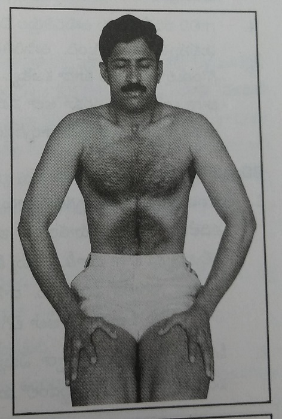
2. After resting for 2–3 seconds, again tighten the lips and nostrils, draw the abdomen inward, and inhale forcefully, followed by forceful exhalation.
This procedure must be followed every time in the same manner.
Explanation
1. Once the lips and nostrils are tightened, they must not be relaxed until the entire inhalation and exhalation cycle is completed.
2. While inhaling, the focus must be on pulling the abdomen inward. Once inhalation is complete, there is no need to maintain attention on the abdomen. During exhalation, the abdomen will naturally move outward on its own.
3. If inhalation is started immediately after exhalation, the abdomen cannot be drawn inward properly.
Therefore, after completing exhalation, if you rest for 2–3 seconds, the abdomen can once again be drawn inward effectively during the next inhalation.
When the abdomen is pulled inward properly each time, the diaphragm muscle receives significant benefit.
4. During exhalation, if attention is paid, one can feel the final portions of the lungs fully contracting.
When all the air inside the lungs is completely expelled, even the air remaining in the throat exits through the nostrils.
Exhalation should be continued until this complete emptying occurs. Only then are maximum benefits achieved, as carbon dioxide is thoroughly expelled from the body.
Common Mistakes Made Unknowingly
1. Some people are able to inhale strongly, and a loud sound is produced while inhaling. However, no sound is heard during exhalation.
The reason for this is that they tighten the lips and nostrils firmly while inhaling, but release that grip after inhalation is complete. As a result, the air does not exit properly.
Just as the lips and nostrils are tightened while inhaling, they must be tightened in the same way while exhaling.
2. Some people can inhale a large amount of air through the nostrils, but while exhaling, the mouth grip loosens, causing the air to enter the mouth.
When air passes through the mouth, the sound changes, and if this happens repeatedly, it can cause throat discomfort.
As explained earlier, the mouth must remain firmly closed throughout the entire first type of pranayama, without any change.
3. Even after such detailed explanation, some people inhale and exhale rapidly, repeatedly and continuously.
However, Abdominal Bhastrika must not be performed in a hurried manner.
If done quickly:
As stated earlier, it is best to pause for 3–4 seconds each time.
4. Some people move the head upward or downward while practicing this pranayama. During this pranayama, the head must be kept upright and completely still.
How Many Times Should It Be Done
One complete cycle consists of inhaling, exhaling, and then taking rest — that counts as one round.
When learning this practice initially, for the first 5–6 days, one should perform only 5–6 rounds and then stop.
If someone performs 15–20 rounds on the very first day, it can cause severe body soreness, stiffness in the neck, and difficulty in movement.
Until the body becomes accustomed, it is best to do fewer rounds and stop.
After about one week of practice, you may gradually increase the number of rounds to as many as you are comfortably able to do — approximately 30 to 40 rounds.
Once you begin to feel fatigue in the chest, lungs, or nostrils, that is the time to stop.
Benefits
1. By repeatedly drawing the abdomen inward and releasing it, good blood circulation is stimulated in the abdomen and intestines. It works like a massage for these organs.
2. The digestive process improves significantly.
3. The abdominal muscles that support breathing become stronger and more efficient.
4. The muscle called the diaphragm, which moves the lungs, descends deeply when the abdomen is pulled inward and rises fully when the abdomen is released.
Under normal conditions, this muscle does not undergo such strong contraction and expansion.
As a result:
This is the most important benefit of Abdominal Bhastrika.
If the abdomen is not drawn inward properly, this benefit is greatly reduced.
5. Mucus, sticky waste matter, phlegm, and other impurities tend to accumulate mostly in the lowest (bottom) parts of the lungs. When we pull the abdomen inward, the lower portions of the lungs are firmly compressed, which pushes the accumulated mucus, thick secretions, and phlegm upward. When we then exhale, these loosened impurities move along with the outgoing air and are expelled. By practicing this pranayama, the impurities that have settled at the base of the lungs on that day are mobilized and cleared out on the same day.
6. The alveoli — tiny, grape-like air sacs responsible for purifying the blood — are found mostly in the terminal (deepest) regions of the lungs. Through Abdominal Bhastrika, air reaches the alveoli fully and forcefully, and the stale air present there is expelled efficiently. This improves blood circulation to the alveoli, enabling them to purify the blood more powerfully and effectively. As a result, the lower regions of the lungs are actively used, whereas in people who do not practice deep pranayama, this area remains largely underutilized.
7. No matter how long this pranayama is practiced, it does not cause fatigue. The heart rate does not increase. After performing just ten rounds of inhalation and exhalation, the entire body becomes warm.
8. In this pranayama, the lungs undergo 100% expansion and 100% contraction. Such complete stretching and complete emptying of the lungs does not occur in any other pranayama.
9. After performing this pranayama ten times, mucus and phlegm present in the lungs and sinus regions begin to loosen and move outward. Immediately after completing the practice, these impurities are expelled through the throat and nose.
10. While performing Abdominal Bhastrika, no other thoughts enter the mind, nor do unrelated matters arise. Once the practice is completed and stopped, the mind feels as though it has withdrawn completely from the external world and entered a new inner realm.
Note
1. While performing pranayama, if phlegm, mucus, or nasal discharge comes out through the nose in between, do not stop the pranayama to clean it. Complete the pranayama first, and without opening your eyes, wipe the nose using a handkerchief.
2. After completing Abdominal Bhastrika, sit in the same posture with eyes closed for 2–3 minutes and take complete rest.
3. During this rest period, place your attention on the area just below the nose, above the upper lip, and observe the natural flow of your breath.
II. Kapalabhati:
Kapalabhati is the practice that completely cleanses the impurities present in the skull and the forehead region. There are certain differences between the method used for Abdominal Bhastrika and the method used for Kapalabhati. Let us first understand those differences.
Important Changes to Note
1. In Abdominal Bhastrika, we inhaled air while pulling the abdomen inward. In Kapalabhati, the abdomen has no role at all. You must completely let go of any focus on the abdomen.
2. In the first pranayama, we kept the head upright and motionless. But in Kapalabhati, the head moves up and down. Usually, no one mentions head movement during pranayama, so some people may feel this is incorrect. However, when the head is lifted upward, the chest closes firmly.
This brings into action:
If Kapalabhati is done with the head held straight and unmoving, these beneficial effects do not occur fully, and air does not travel as deeply. That is why this change is necessary.
You may wonder whether moving the head during Abdominal Bhastrika would also increase its benefits. But when the head is lifted, the abdomen moves forward instead of inward, making it impossible to pull the abdomen in properly. Without pulling the abdomen inward, Abdominal Bhastrika loses its effect. That is why the head must remain upright in that practice.
3. In Abdominal Bhastrika, we pause for 2–3 seconds after inhalation and again for 2–3 seconds after exhalation. In Kapalabhati, there are no pauses at all.
4. In Kapalabhati, fatigue appears after some time.
5. In the first pranayama, we relaxed the lips and nose after every cycle. In Kapalabhati, once the lips and nostrils are tightened, that grip must be maintained continuously until the practice is fully completed.
Method of Practice (Kapalabhati)
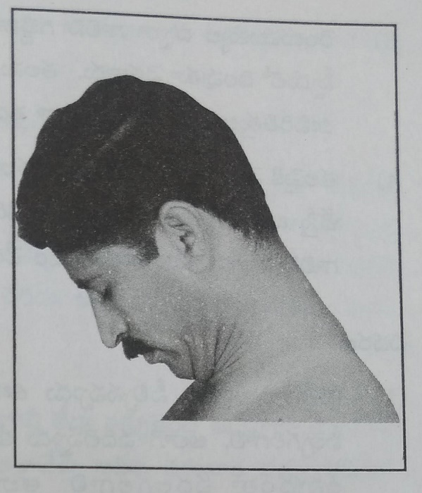
1. Sit upright in Vajrasana, keep the tongue pressed against the palate, close the mouth, tighten the lips and nostrils, close the eyes, and forcefully expel the air from both nostrils while lowering the head downward. Bend the head forward so that the chin touches the chest. Bending as shown in the picture is sufficient.
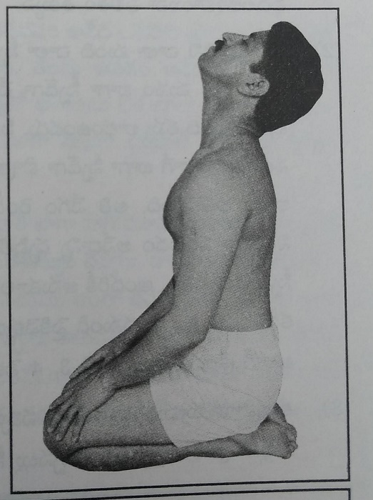
2. Inhale forcefully through both nostrils while lifting the head upward and slightly backward. By the time the head has moved fully upward, the lungs should be completely filled with air. Lifting the head to the level shown in the picture is enough. When the head reaches the upward position, inhalation should be complete.
3. Exhale forcefully through both nostrils while lowering the head downward at the same speed. By the time the head has fully bent downward, the lungs should be completely emptied of air.
4. Inhaling while lifting the head upward and exhaling while lowering the head downward together constitute one round. Immediately after completing the exhalation, begin the next inhalation and exhalation in the same manner, without pause.
Explanation
1. Every time you inhale, you should be able to fill the lungs completely, and every time you exhale, you should be able to expel all the air from the lungs completely. If you are unable to inhale fully or exhale fully, the benefits will be reduced.
2. Many people perform Kapalabhati at very high speed. Doing so may impress onlookers into thinking that one is practicing vigorously, but it gives no real benefit. Grinding grain very slowly on a stone does not crush it, and spinning the stone extremely fast also does not crush it. Similarly, both excessive slowness and excessive speed are ineffective here. The focus should be on full inhalation and full exhalation, and the speed should be such that it does not interfere with this.
A speed suitable for everyone is as follows:
The head movement from down to up should take about 3–4 seconds.
The movement from up to down should also take about 3–4 seconds.
3. When beginning this pranayama, start slowly, like a train that gradually begins to move. Then, increase the speed moderately as described above. When fatigue begins, slow down gradually, performing 3–4 slow rounds, and then stop—just like a train slowing down before coming to a halt.
4. If you suddenly increase the speed and suddenly stop, dizziness may occur.
5. Many people perform Kapalabhati by rapidly inhaling and exhaling through both nostrils. When done this way, the air reaches only the upper part of the lungs and exits immediately. The lower two sections of the lungs do not receive sufficient air. Such practice is not deep pranayama.
Common Mistakes Done Unknowingly
1. Do not open your eyes intermittently, and do not perform this pranayama with your eyes open. If you do so, dizziness may occur after stopping.
2. Inhalation and the upward movement of the head must begin at the same time. Likewise, completion of inhalation and stopping the head movement must also occur simultaneously. Beginners often make mistakes in coordinating this. If mistakes continue, the practice should be done more slowly, and the previously mentioned speed should not be attempted at all until coordination improves.
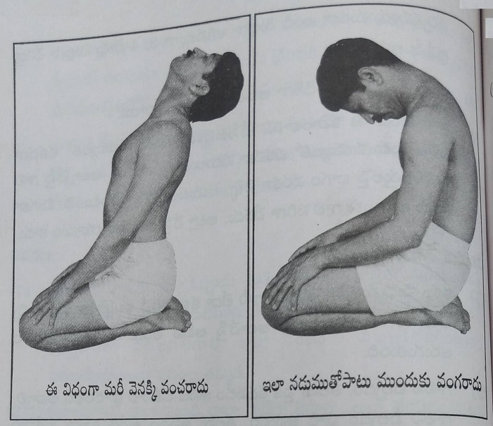
3. Since it is said that moving the head up and down expands and contracts the chest effectively, some people exaggerate these movements excessively. This provides no benefit. Some bend the entire torso backward, arching the waist and stretching the neck excessively, as shown in the photo. This leads only to pain, not benefit. Others bend the waist forward along with the head while lowering the head. The waist must not be bent. Bending the waist as shown in the photo is incorrect practice.
Benefits
Note
1. When learning Kapalabhati for the first time, practice it only 7–8 times and then stop. Do this for the first 5–6 days. If there is no pain or discomfort, then from that point onward you may continue until mild fatigue is felt, moving the head up and down while inhaling and exhaling. In this way, about 40–50 repetitions can be done.
2. Those who practice for a longer duration should gradually reduce the speed before stopping, slowing down for several rounds and then stopping gently with the eyes closed. The eyes should not be opened immediately. Open them only after one full minute has passed.
3. If mucus or nasal discharge comes out of the nose during practice, do not stop the pranayama. Continue the practice and clean the nose only after completing Kapalabhati.
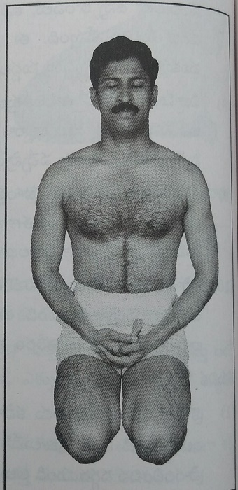
4. After completing Kapalabhati, sit calmly with eyes closed until all fatigue subsides. Keep the hands positioned as shown in the illustration and focus the mind on the breath. By the end of the second pranayama, the number of breaths per minute becomes very low, and the mind becomes deeply calm. No thoughts arise. You experience a state free from thoughts—this comes naturally through experience.
Between one pranayama and the next, sit with eyes closed for 4–5 minutes in relaxation, as shown in the illustration. This itself is meditation.
III. Surya–Chandra Nadi Bhedhi:
Surya Nadi refers to the right nostril, and Chandra Nadi refers to the left nostril. This Surya–Chandra Nadi Bhedhi is practiced by alternately performing pranayama through one nostril at a time — first through the Surya Nadi, then through the Chandra Nadi.
Important Points to Note
1. In the first two pranayamas, we inhaled air through both nostrils and exhaled through both nostrils. In this pranayama, however, air must be inhaled through only one nostril and exhaled through the same nostril. After completing it on one side, the same process is repeated through the other nostril.
2. In the first two pranayamas, if one does not properly learn to tighten the lips and nostrils, it becomes difficult to inhale and exhale fully. It may take 5–6 days to learn how to breathe deeply and completely in those practices. In this pranayama, however, there is no need to tighten the lips or nostrils, because the nostril is closed using the fingers. Therefore, everyone can perform this pranayama effectively from the very first day.
3. There is very little chance of making mistakes in this pranayama. Air does not enter the mouth in this practice. Since closing the nostril with the fingers is easy for everyone, the airflow moves smoothly and correctly.
4. If you turn on a water tap and partially block it with your fingers, the water shoots out with greater force and travels farther. In the same way, when air that would normally pass through two nostrils is forced through a single nostril, it travels with greater pressure, reaches the deepest parts of the lungs, and provides greater benefit to the respiratory system.
5. Just as we moved the head up and down while inhaling and exhaling during Kapalabhati, in this pranayama also the head naturally moves slightly while inhaling and exhaling. Let us first learn to practice it through one nostril.
i. Surya Nadi Pranayama: Inhaling air through the right nostril and exhaling air again through the right nostril is called Surya Nadi Pranayama.
Method of Practice
1. Place the ring finger of the right hand on the left nostril and press it firmly to completely close the left nasal passage. Place the index finger and the adjacent middle finger gently on the center of the forehead (between the eyebrows) as shown in the picture. Do not place any finger on the right nostril.
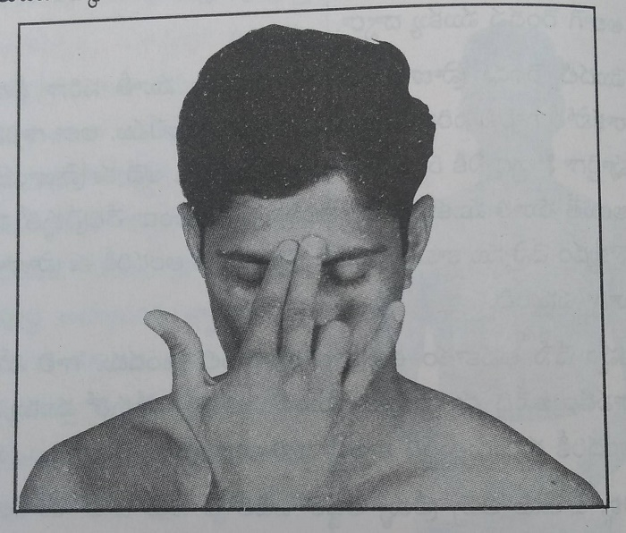
2. Sit upright in Vajrasana, keep the spine straight, place the tongue against the palate, close the mouth properly, and gently close the eyes.
3. Begin the pranayama by exhaling air through the right nostril while lowering the head. Then, inhale forcefully through the right nostril while lifting the head upward. Immediately after that, exhale forcefully again through the right nostril while lowering the head.
వివరణ
1. Fully inhaling the air and then completely exhaling it is extremely important. When driving a car on the road, reaching the destination safely is more important than speed. Speed is adjusted only with safety in mind. In the same way, here too, speed should be adjusted with the focus on the air — not on haste, but on fullness and completeness.
2. Each time you inhale, as the head moves upward from the lowered position, about one and a half liters of air can be drawn in. To inhale this much air, keeping the mouth firmly closed is very important. When this amount of air is drawn in, it is a clear sign that the lungs are completely filled. Then, while lowering the head, the same one and a half liters of air must be fully expelled. When exhalation is complete, you will clearly feel the lungs becoming fully empty, compressed, and contracted. Every time, exhalation should be done until this complete emptiness is achieved. Immediately after that, inhalation should begin again.
3. Taking 4–5 seconds to lift the head from bottom to top, and another 4–5 seconds to bring the head back down, is an ideal speed. At this pace, both inhalation and exhalation are completed fully and properly.
4. While performing this pranayama, the sound produced is quite loud, similar to the hissing sound of a snake. Because one nostril is closed and the other is pressed with the finger, air can be inhaled and exhaled forcefully. In the first two pranayama techniques, some people are unable to achieve proper mouth and nose tightening, so the sound may be softer. But in this practice, the sound is naturally stronger.
Points to Remember
1. Beginners should practice only 7–8 rounds of inhalation and exhalation and stop there for the first 5–6 days. During this period, the neck muscles, nerves, and nostrils gradually adapt to the practice.
2. Once the body gets accustomed, practice as many rounds as possible until mild fatigue is felt. Most people can comfortably perform around 30–40 rounds, and those who can do more may continue further.
3. While beginning this pranayama, start slowly, like a train gradually picking up speed. Perform 4–5 rounds slowly, then increase to the recommended speed described earlier. When fatigue sets in, slow down again, performing 5–6 gentle rounds, gradually reducing the pressure of inhalation and exhalation, moving the head gently, and then stop.
4. Do not open the eyes in between while performing the pranayama. If needed, open the eyes only after 1–2 minutes of rest once the practice is completed.
5. On some days, air may flow very easily through the Surya Nadi, making inhalation and exhalation smooth, while on other days it may not feel the same. On one day, inhalation may produce more sound, and on another day, exhalation may be louder. Such day-to-day variations are normal and occur in some people. This happens because mucus inside the nasal passages shifts or creates temporary obstructions.
6. During this pranayama, mucus, sticky secretions, and phlegm tend to come out in larger quantities. The impurities loosened by the first two pranayamas often get expelled during this practice. In some people, air may flow freely in the first two pranayamas, but during this one, the nostrils may feel blocked. One should simply continue as much as possible. If the blockage becomes too severe or uncomfortable, the practice may be stopped.
Note: After completing Surya Nadi Pranayama, rest with the eyes closed for about 2–4 minutes, until fatigue subsides and the body returns to a normal state. Only after this rest should Chandra Nadi Pranayama be started.
ii. Chandra Nadi Pranayama: Inhaling air through the left nostril and exhaling again through the left nostril is called Chandra Nadi Pranayama.
Method of Practice
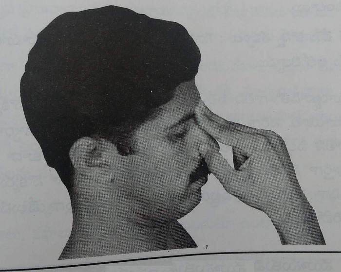
1. Place the thumb of the right hand on the right nostril and press it firmly to completely close the right nasal passage. Place the index finger and middle finger (the finger next to it) at the center of the eyebrows (between the eyebrows), as shown in the picture. Do not place the ring finger on the left nostril.
2. Sit upright in Vajrasana, keep the tongue touching the upper palate, close the mouth properly, and close the eyes.
3. First, exhale the air from the left nostril while lowering the head, and begin the pranayama from this position. Then, inhale forcefully through the left nostril while lifting the head upward. Immediately after that, exhale forcefully again through the left nostril while lowering the head.
Explanation: This pranayama is performed exactly in the same manner as Surya Nadi Pranayama, following all the same steps and principles described earlier.
Points to Remember
1. When performing Surya Nadi Pranayama, the amount of air intake or the sound produced in that nostril may sometimes not occur in the same way during Chandra Nadi. Likewise, on some days Chandra Nadi Pranayama may feel easy, while Surya Nadi may not work as smoothly.
2. On one day, the Chandra Nadi may feel blocked, and on another day the Surya Nadi may feel blocked, or sometimes both may feel open and free. Do not worry or confuse yourself wondering why this happens. These are natural internal changes that vary from day to day.
Common Mistakes Made Unknowingly: Let us look at the mistakes commonly made while practicing Surya Nadi and Chandra Nadi Pranayama.
1. While inhaling through the Surya Nadi (right nostril), the Chandra Nadi (left nostril) must be completely closed with the finger. If the nostril is not closed properly, air cannot be inhaled with sufficient pressure through the Surya Nadi. Similarly, when practicing on the other side, the nostril must be fully pressed and sealed. Many people do not press the nostril properly or place the finger incorrectly. Pressing the nostril exactly as shown in the picture is sufficient.
2. In this pranayama, since air movement produces a loud sound and the practice feels easy, some people become over-enthusiastic and forget the core principle, performing it too fast. This should be avoided.
3. During this pranayama, mucus and phlegm may start coming out. Some people stop the practice midway and wipe their nose repeatedly. By stopping repeatedly, the loosened mucus gets stuck again instead of coming out fully. Therefore, complete the pranayama first, and wipe the nose only after finishing.
Benefits
1. By completely closing one nostril with the finger and inhaling air through the other nostril alone, the air is drawn in with greater pressure, allowing it to reach the deepest, lowermost parts of the lungs.
2. In this pranayama, the lungs fill completely—much more fully than in the previous pranayama practices.
3. Since more prana (oxygen) can be inhaled through this pranayama, a larger amount of carbon dioxide present in the body is effectively expelled.
4. According to yogic philosophy, breathing is governed by two types of energies: positive energy and negative energy.
When air is inhaled and exhaled through the Surya Nadi (right nostril), positive energy is strongly generated within the body.
When practiced through the Chandra Nadi (left nostril), negative energy is strengthened and the breathing system becomes balanced and harmonized.
5. Because air is inhaled with greater pressure, impurities and phlegm present in the respiratory passages are loosened and expelled completely.
6. Mucus present in the nasal passages and sinus cavities is effectively dislodged and expelled during this pranayama, due to the pressure created by closing one nostril and forcefully breathing through the other. These two pranayama types are especially effective for clearing mucus.
Note
1. After completing Chandra Nadi Pranayama, keep the eyes closed and take rest for 2–3 minutes. Only after this rest should the next pranayama be started.
2. Beginners should practice only the first three pranayamas until they become well-accustomed to them, which usually takes 10–15 days. They should not attempt the fourth and fifth pranayamas during this period. After about 15 days, they may begin learning the next pranayamas.
IV. Bhastrika Pranayama: This is also known as Alternate Pranayama
Important points to note
1. Unlike the first three pranayamas, in this practice air is inhaled through one nostril and exhaled through the other nostril.
2. As in the previous pranayamas, the head is raised while inhaling and lowered while exhaling in this practice as well.
3. Until one becomes accustomed to this pranayama (for a few days), there is a greater chance of making mistakes. If it is practiced slowly, carefully, and with awareness, errors can be avoided.
4. This pranayama must be performed by alternating the fingers placed on the right and left nostrils.
5. If the fingers placed on the nostrils slip downward from their correct position, the nostrils may become completely blocked and air will not flow properly. Therefore, the fingers must be placed very carefully. In the photo below, the fingers are shown slipping downward—this should be avoided.
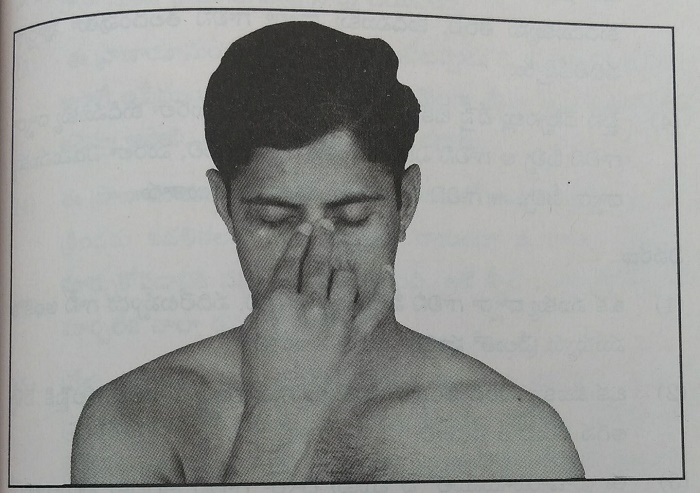
Method of Practice
1. Sit upright in Vajrasana, place the tongue against the palate, keep the mouth properly closed, and close the eyes.
2. Place the ring finger of the right hand on the left nostril and press it to completely close the left nasal passage.
Place the index and middle fingers on the space between the eyebrows.
Keep the thumb raised in the air, about one inch away from the right nostril, without touching it.
3. Inhale through the right nostril, raising the head upward, and fill the lungs completely with air.
After reaching the upward position and pausing briefly:
After exhalation is complete:
4. Performing the above sequence once constitutes one complete round. Then repeat the cycle:
Explanation
1. While inhaling or exhaling through one nostril, the other nostril must be completely closed with the finger.
2. The switch from one nostril to the other should be done only after the head reaches the top and pauses briefly.
3. In this pranayama, the same nostril through which air is exhaled must be used for the next inhalation.
4. Air must be inhaled fully, filling the lungs completely, just as in the third pranayama. Similarly, exhalation must be done until the lungs are completely emptied. In the third pranayama, air was inhaled and exhaled through the same nostril. In this practice, however, the difference is: Inhale through one nostril and exhale through the other. Then inhale through that nostril and exhale through the first.
Points to Remember
1. Do not practice this pranayama until you become comfortable with deep inhalation and complete exhalation in the first three pranayamas.
2. During the first 5–6 days, there is no need to restrict yourself to only 7–8 rounds. Since the body is already accustomed to pranayama, you may perform as many rounds as you are able to from the very first day.
3. As with the previous pranayamas:
4. During the first week of learning, move the head slowly up and down. This allows sufficient time to change the fingers correctly and helps avoid mistakes. If done too fast, finger switching becomes difficult and errors are more likely.
5. Once finger coordination and air exchange are well mastered, you may practice this pranayama at the same speed used in the third pranayama. It is even better to keep the speed slightly slower than that.
6. On days when time is limited, this pranayama may be skipped. Practicing the first three pranayamas alone is sufficient.
7. In this pranayama as well, a loud sound is produced during both inhalation and exhalation.
Common Mistakes Made Unknowingly
1. In this pranayama, many people make mistakes while switching the fingers. They change the fingers while lowering the head. It must be remembered that finger switching should be done only when the head reaches the upward position.
2. Some people keep repeating the same pattern continuously — inhaling through the right nostril, exhaling through the left nostril, and again inhaling through the right and exhaling through the left, without alternating properly.
3. Some practitioners are unable to switch the fingers correctly at higher speeds, resulting in improper inhalation and exhalation.
4. Until proper coordination develops, performing the practice slowly allows for full and correct inhalation and exhalation.
Benefits
1. Proper coordination is established between the nervous system and breathing, resulting in a calm and peaceful mind.
2. When air is inhaled through one nostril and exhaled through the other, mucus, phlegm, and nasal blockages are loosened and expelled easily.
3. The air passages and mucous linings inside the nose are thoroughly cleansed.
4. Alternating the airflow in this manner supplies a greater proportion of oxygen to the frontal part of the brain, making those brain cells more energetic and active.
5. This pranayama also provides all the benefits of the previous three pranayamas — improvements in lung function, blood purification, reduced breathing rate, increased oxygen content in the blood, and deep breathing that helps expel impurities from the bloodstream.
Notes
1. If severe pain develops in the legs while sitting in Vajrasana, stop the Vajrasana at that point. Stretch the legs forward, place the hands behind you on the floor, lean the neck slightly backward, and sit in that position. Remain relaxed like this until all numbness in the legs completely subsides.
2. After completing the 4th pranayama, take complete rest for 3–4 minutes, and only then proceed to the 5th pranayama.
3. If you decide to stop after completing only the first four pranayamas, either remain in Vajrasana or come out of it, close your eyes for 5–10 minutes, keep your mind focused on the breath, and experience the calmness and bliss that arises.
V. Rechaka–Puraka Pranayama: This may also be called Sukha Pranayama. Rechaka means exhalation, and Puraka means inhalation. In this pranayama, breathing happens slowly and gently.
Important Points to Note
1. In the first four pranayamas, air is inhaled and exhaled forcefully and in large quantity. In contrast, here only a small amount of air is inhaled and exhaled very slowly.
2. In the earlier pranayamas, loud sounds were produced during inhalation and exhalation. In this pranayama, breathing must be done silently, without producing any sound at all.
3. It is best to learn this pranayama only after practicing the first four pranayamas well for 20–30 days, once the breathing rate has significantly reduced.
4. Those whose morning breathing rate is 10–12 breaths per minute or less can practice this easily. If the breathing rate is higher than this, it may feel somewhat difficult initially.
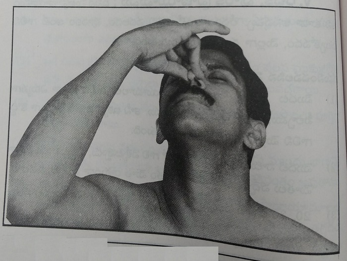
5. The path of airflow in this pranayama is the same as in the 4th pranayama. However, since only a small quantity of air is inhaled, the nostril through which air passes should be closed three-fourths, leaving one-fourth open for breathing. As shown in the photo, One nostril is completely closed, and the other nostril is three-fourths closed and one-fourth open. Closing the front portion of the nostril while leaving the rear portion slightly open is sufficient.
6. If Vajrasana was released after completing the 4th pranayama, this pranayama can be done while sitting in Sukhasana, keeping the spine straight. If one can remain in Vajrasana comfortably, it is even better to continue in Vajrasana until the 5th pranayama is completed.
Method of Practice
1. Sit comfortably in the posture of your choice, keeping the spine straight. Keep the mouth gently closed (there is no need to press it tightly, and no need to place the tongue against the palate). Close the eyes and sit calmly.
2. Completely close the left nostril using the ring finger. Place the next two fingers on the center of the eyebrows (between the brows). With the thumb, close the right nostril three-fourths, and prepare to begin.
3. Through the one-fourth open portion of the right nostril, slowly inhale while gently lifting the head upward. After the head reaches the top and pauses, completely close the right nostril, then open the left nostril one-fourth (keeping it three-fourths closed) and slowly exhale while lowering the head.
After the exhalation is complete, slowly inhale again through the one-fourth open left nostril, lifting the head upward. After pausing at the top, completely close the left nostril, open the right nostril one-fourth, and slowly exhale while lowering the head.
4. This completes one round (one cycle). Continue by inhaling through the right nostril and exhaling through the left, then inhaling through the left and exhaling through the right, in the same manner.
Explanation
1. In this 5th pranayama, one nostril remains fully closed, while the other is three-fourths closed at all times.
2. Air must pass only through the one-fourth open portion of the active nostril. Since only a small quantity of air should be inhaled slowly, the nostril is partially closed. If the nostril is left fully open, too much air will enter, which is undesirable.
3. Taking 8 to 10 seconds to inhale while lifting the head, and the same amount of time to exhale while lowering the head, is perfectly fine. As practice deepens, taking 15 seconds to inhale and 15 seconds to exhale brings even greater mental calmness, as the breathing rate becomes very low.
4. There should be no sound during either inhalation or exhalation.
5. If some people feel discomfort, slightly increasing the speed of head movement and inhaling a little more air can help relieve that discomfort.
Points to Remember
1. This pranayama can be practiced daily for 4–5 rounds, or even more if desired.
2. Once you become accustomed to it, you may gradually try to inhale and exhale even more slowly.
3. Those who have sufficient time may practice this pranayama for 10–15 minutes, which is very beneficial.
4. Those who are very short on time may skip this pranayama altogether. This practice cannot be done hurriedly. Pranayama must be practiced calmly, in a relaxed state, when one has adequate time.
Common Mistakes Made Unknowingly
1. While exhaling, one may feel that the breath is running out and experience discomfort, creating an urge to open the mouth. Some people are unable to resist this and immediately open the mouth to inhale. If such discomfort arises, slightly increase the speed of breathing and head movement, and complete the pranayama without opening the mouth.
2. Some people move the head at one speed during inhalation and at a different speed during exhalation. The head movement speed should be the same while inhaling and exhaling.
3. Some inhale in a way that produces loud sound, drawing in too much air. Those who feel they cannot practice this pranayama unless they inhale large quantities of air may discontinue this pranayama. There is no harm in skipping it.
Benefits
1. In this pranayama, we control the breath and inhale slowly, exhaling slowly. This practice cannot be done unless the mind is focused on the breath. As a result, no other thoughts enter the mind during the time this pranayama is practiced. While practicing it, the mind feels deeply calm and peaceful.
2. In the previous pranayamas, we inhaled and exhaled large volumes of air, fully expanding the lungs. The lungs become well exercised and somewhat fatigued. This pranayama provides complete rest and relaxation to the lungs.
3. Just as Śavāsana is to asanas, and sleep is to physical fatigue, Sukha Pranayama is to the breathing system after practicing prolonged pranayamas.
4. In this pranayama, the number of breaths reduces significantly. Only 2 to 5 breaths per minute are taken. This is why the mind becomes clear, pure, and tranquil.
5. This pranayama can be practiced at any time when the stomach is slightly empty. When the mind is disturbed, thoughts are excessive, or irritability is present, practicing this pranayama brings immediate relief and visible results.
6. Practicing this pranayama is essentially a form of meditation. Those who have free time may practice it for 15–30 minutes. In traditional meditation, many people struggle with wandering thoughts, but this pranayama does not cause such difficulty. The mind naturally stays anchored to the breath, without drifting elsewhere, for the entire duration of practice.
7. This pranayama gives even greater benefits when practiced after the first four long pranayamas. At that stage, the body and every cell are fully saturated with prana, and even very slow breathing during this pranayama causes no discomfort.
8. It is highly effective in improving concentration and memory power.
9. If sleep does not come easily, practicing this pranayama just before bedtime leads to quick, effortless sleep without intrusive thoughts.
Note
1. Those who are unable to reduce their breathing, whose breath rate remains high, or who feel uncomfortable while attempting this practice, may completely avoid this pranayama without any harm.
Those who wish to meditate should begin meditation at this point.
How to Practice from Tomorrow Onwards
1. First, read this chapter carefully four or five times, repeatedly and attentively, so that you clearly understand and internalize the method.
2. While practicing these long pranayamas, even if you do not perform them exactly as described and make a few minor mistakes, no harmful effects will occur. At most, the full benefit may not be obtained, but there will be no negative consequences.
3. Practicing pranayama takes about 25 to 30 minutes. During this time, do not talk, do not look at others, and do not observe external objects or scenes. Throughout the day we are constantly engaged in activities; at least during this short time, allow the mind to become calm and inward-focused, and fully experience that joy.
4. From the moment the first pranayama is completed, a sense of deep calm arises in the mind. Thoughts completely stop. A thought-free state is something we usually cannot achieve at any time of the day, no matter how hard we try. Therefore, if such a pure and tranquil state exists in the mind even for half an hour a day, the entire day can be lived with energy, happiness, and enthusiasm.
5. The period between one pranayama and the next is filled with intense peace and joy. Do not lose this state by opening the eyes unnecessarily.
6. During the entire 30 minutes of pranayama, it is best to keep the eyes closed as much as possible.
7. There are many types of pranayama, and many people are already accustomed to other methods. Practicing these pranayamas does not mean you must abandon the others. After completing these practices, you may continue with any pranayamas you prefer. Every method has some benefit, and you may enjoy those benefits as well.
8. For achieving complete physical health and mental peace, these five types of pranayama are sufficient. Through them, one can obtain full and complete benefit. Beginners do not need to explore other pranayamas.
9. Do not dismiss this practice lightly, thinking, “It is just inhaling and exhaling air.” Practice it and understand through direct experience. Observe whether your breath count is reducing or not. Through sincere practice and personal experience, discover how profound the physical and mental changes truly are.
10. The greater amount of prana (vital oxygen) that we inhale enters the bloodstream. Even if we do not perform any physical exercise, this prana is slowly distributed from the blood to meet all the body’s needs.
Just as ploughed land absorbs water easily while unploughed land does not, in people who do not exercise, blood circulation to all organs and cells is slow, like water reaching unploughed soil. Along with that, pranic energy is also supplied slowly, and impure air is expelled slowly.
On the other hand, if asanas are practiced daily, just as ploughed land quickly absorbs water, every organ and every cell of the body rapidly draws in blood, fully absorbs oxygen, and efficiently releases carbon dioxide.
For the extra prana we inhale to benefit the entire body completely, it is very beneficial to practice asanas along with pranayama. When these two are practiced together, no other physical exertion is necessary in life.
Asanas and pranayama are inseparably connected, like the relationship between husband and wife. If all health-conscious people practice both every morning without fail for one to one and a half hours, the mind and body will function together harmoniously, just like a married couple living in unity.
Only when such harmony exists within the body can we truly fulfill the purpose of this human birth and fully utilize this body as a vehicle. If you wish to learn about these extremely valuable asanas in detail, you may read the book on asanas written by me.
Just as we instinctively know to eat food when hungry and drink water when thirsty, we must also clearly understand how to inhale adequate prana for the body. Since we cannot perform vigorous physical activity every day, pranayama becomes a refuge for such people. Even those who already do heavy physical work will gain greater benefits by practicing pranayama.
Just as we brush our teeth and bathe daily at a fixed time because they are important, we should also fix a specific time in the early morning and make pranayama a compulsory daily habit. Those who are on a spiritual path, who practice meditation, and who have the opportunity will benefit greatly by doing pranayama in the evening as well.
In densely populated areas, houses are built very close to one another. If we wake up early and practice pranayama on the terrace making loud breathing sounds, neighbors may get disturbed. For some who are asleep, these sounds may act like a wake-up call similar to a rooster’s crow. Do not reduce the intensity of pranayama out of fear of making noise or disturbing others. Do not stop doing a good practice for such reasons.
From now on, do not neglect this invaluable pranayama. Practice it every single day, fill your body with pranic energy, enhance the life force within you, and live with complete and perfect health.
Elders say that when the seed syllables (Bija Aksharalu) present in mantras are pronounced, many changes take place in all the energy channels (Nadis) within our body. Scriptures explain that certain seed syllables work very powerfully in awakening the six chakras (Shad Chakralu) that exist within us.
Here, let us mainly think about the mantras that we already know, which have a direct effect on our breathing process. The most well-known among them is the sacred sound Om (Omkara). Another is the Gayatri Mahamantra. It is said that if these two are chanted daily with discipline, they bring great strength and spiritual merit (punyam).
Our ancestors understood the secrets hidden in these mantras. That is why they firmly insisted that every person, in every household, should chant them every day. They repeatedly reminded and encouraged people to do so. But in today’s times, there is hardly anyone who advises this, or anyone who follows it. Many people now say, “What do we get by chanting these?” and dismiss them as a waste of time.
If these two mantras are chanted in a proper method, long breaths naturally take place within that process. While chanting them, all the stale air stored in the lungs gets completely used up. In the same way, by the time the chanting is completed, all the carbon dioxide present inside is fully expelled out.
Immediately after the chanting is finished, a deep inhalation naturally enters the body. Let us now understand how these changes occur while chanting Om and while reciting the Gayatri Mantra.
1. Om:
Let us examine the benefit that comes to the life-breath process (Prana Kriya) when we pronounce Om.
We begin chanting “Om” by opening the mouth and starting the sound, and then continue the Omkara in one steady stretch, holding and releasing the air for as long as we are able. When the air in the lungs is used up, we gently bring the lips together and continue the “Ma” sound. At that stage, the sound slowly becomes softer, and we can notice that the farthest inner portions of the lungs begin to close inward.
If we continue releasing the “Ma” sound for as long as we still have the capacity, the remaining air in the throat also gets exhausted, and finally the sound stops on its own. At the moment it stops, we can observe a natural inward pull starting from the navel area. This entire sequence is the process that takes place during a single chanting of Om.
While chanting Om, all the air present in the lungs is completely used. During the entire duration of the Omkara, we do not inhale air at all. As Om is being chanted, all the carbon dioxide that has been standing inside the lungs and waiting to be expelled is fully pushed out of the lungs.
By the time the chanting of Om is completed, both lungs release all the air within them and close completely, from top to bottom, one hundred percent. This complete closing greatly helps the lungs to inhale a much larger quantity of air afterward.
When we chant Om, this full and complete closing of the lungs does not usually happen again in any other normal situation. In long pranayama (Deergha Pranayama), such complete closing does occur at certain stages, but only if it is practiced very well. Even then, fully closing the lungs in this manner is possible only for a few people during pranayama.
But in the chanting of Om, when it is done slowly and for a long duration, this state is naturally achieved by everyone, without making any special effort.
As soon as the air is completely exhausted in this way, we naturally inhale a much larger amount of air. There is no need to make any effort to inhale more air — the lungs themselves are able to draw in air fully and deeply.
After completing one Omkara, the air that we immediately inhale is usually more than one liter. If we consciously try to inhale a little more, it can range from about 1200 to 1500 milliliters.
This larger volume of air that we inhale is used by the lungs, throughout the duration of the Om chanting, to purify the blood. During this process, the impure air that enters inside slowly gets expelled along with the air that we release.
When Om is chanted and then allowed to stop naturally, the lungs go through a complete expansion and a complete contraction. When this happens repeatedly, the diaphragm, the muscles between the ribs (intercostal muscles), the nervous system, and all the other parts that assist breathing begin to move together in a smooth and coordinated manner. Because of this, these parts gradually gain strength.
By chanting Om, the lungs become accustomed to long breathing at that time, and later they are able to inhale air in the same deep manner even during other activities. Omkara lays the foundation for long breathing throughout the entire day. All the benefits that the lungs receive from practicing long pranayama (Deergha Pranayama) can also be obtained simply by chanting Om.
That is why our elders used to say that chanting Om brings strength and energy. Because we do not fully understand it, and because the secret behind it is not known to us, some people today dismiss it as mere superstition or unnecessary ritual.
During the long breathing that happens while chanting Om, a greater amount of life energy (Prana Vayu) enters the body. That is why, when Om is chanted ten times, an unusual sense of calmness and strength arises within us — the increased circulation of prana is the reason for this experience.
If Om is chanted 20 or 30 times in one sitting, twice a day, when the stomach is empty, it gives us great strength, improved capacity, and mental peace. Even at other times — when we are free, when the mind does not feel good, when thoughts are racing, when we are tense, when we feel dull or weak, or when we need extra energy — at such moments, wherever you may be, if you chant Om 10 or 20 times and are able to release the breath fully, you will immediately receive increased life energy and experience some relief from those problems.
If we make Omkara a companion in our life and continue chanting it regularly, we can free ourselves from many difficulties.
2. Gayatri Mahamantra
“Om bhūr bhuvaḥ svaḥ
tat savitur vareṇyaṁ
bhargo devasya dhīmahi
dhiyo yo naḥ pracodayāt”
Our scriptures say that if we are able to chant this great mantra every day, we can attain extraordinary strength and spiritual growth. Elders say that when the seed syllables (Bija Aksharalu) contained in this mantra are pronounced, the changes that take place within us are truly profound.
Before beginning the chanting of this mantra, it is good to first fill the lungs completely with air. Then, without breaking the chant in between, the mantra should be recited until the air inside is fully released. The chanting should be done in such a way that the time taken to recite the mantra and the time taken for the breath to completely empty are the same.
It should not be chanted too slowly, and not too fast either. When chanted at the right pace, the breath lasts for the same duration as it does while chanting Om. If this mantra is chanted 20 or 30 times per sitting, twice a day, many positive changes begin to appear within us.
Here too, just like in Omkara, long breaths naturally occur, allowing a greater amount of life energy (Prana Vayu) to enter the body. Through the Gayatri Mantra, we can increase the stored reserves of life energy within the body. By practicing the Gayatri Mahamantra, we can shape ourselves into highly powerful and capable individuals.
The life energy that we inhale through this mantra chanting is sufficient to purify the blood and to fully energize the cells, without any deficiency. If we chant this mantra in the morning and in the evening, whenever required, the stored life energy within the body increases, allowing us to live life with continuous and unfailing strength.
Let us fully understand the health, spiritual joy, and strength that come from chanting the two mantras explained above every day. Let us also use them as effective methods for long breathing, reduce the number of breaths we take, and increase our inner capacities. Let us follow the path shown by our elders, and live as an example for future generations.
Concentrating the mind and keeping attention fixed on a single subject is called meditation (Dhyana). For example, when one places the mind solely on God and remains absorbed in that alone, without any other intentions or thoughts, that state is called divine meditation (Bhagavad Dhyana).
When someone appears absent-minded, people often ask, “What kind of distraction is this?” When the mind does not stay on the subject it is supposed to focus on, and thoughts wander elsewhere, that state is called distraction (Paradhyanam).
Meditation is called meditation in English as well. In today’s world, there are many different methods of meditation. No matter which method is followed, the goal remains the same. That goal is to keep the mind still and, with that still mind, experience peace and inner sweetness. From that state, one then moves deeper and deeper, increasing inner vision (Antar Drishti).
As this inner vision grows, the expansion of the heart (Hridaya Vaishalyam) also increases. Learning good qualities from another person may be difficult, but when inner vision increases, the impulse to do good is born naturally within oneself. The transformation of one’s inner tendencies (samskaras) begins to happen effortlessly.
The outward way of looking at oneself and at the world gradually disappears. At that stage, one begins to understand that the underlying essence present everywhere is the same. When we practice keeping the mind in this calm and peaceful state for at least one hour every day, then during the rest of the day as well, we are able to keep the mind under our control.
When we eat breakfast in the morning, it helps prevent tiredness for a few hours. This is because food gives energy to the body. In the same way, when we meditate for one hour immediately after waking up, the mental energy we gain from it protects our mind from becoming weak throughout the day. The energy that comes from the food we eat in the morning gets exhausted, so we eat again in the afternoon and in the evening. In the same manner, if we want to keep the mind strong, the more hours we are able to meditate, the better it is. But if we want to practice meditation and gain such great benefits, the body must cooperate. The body and the mind have an inseparable relationship. Every action we do with the body has an effect on the mind. It is often said that the mind is like a monkey. A monkey keeps jumping from one branch to another and never sits quietly in one place. The mind is exactly like that. Just as the tongue knows different tastes, the mind also knows the taste of different kinds of thoughts very well. Once it becomes attached to a particular taste, it keeps moving in that direction. Some people are very fond of movie-related topics. They keep thinking about those things again and again. That means their mind finds that taste enjoyable. Some people enjoy hearing about fights, arguments, or disputes. Their mind finds pleasure in that kind of taste. Based on such tastes, the mind keeps striving to experience what it likes. From the moment we wake up until we fall asleep, is it possible for anyone to live without thoughts at all? We cannot completely stop thoughts from arising, but we can control them. The thoughts that come to us every day can be broadly classified into four types.
If we are able to eliminate the first two types among these four kinds of thoughts, only necessary thoughts and good thoughts will remain with us. This is similar to choosing nourishing and energy-giving food instead of eating random junk throughout the day. Achieving this becomes possible through meditation.
Many people have the desire to meditate, but they give up after trying, because they are unable to control their thoughts even for ten minutes. For such people, let us now understand how well pranayama helps in practicing meditation.
We practice pranayama while sitting in Vajrasana. Here, it is important to speak about the significance of Vajrasana as well. When we sit in Vajrasana, the spine remains upright. Through this posture, the signals that travel from the mind to the reproductive organs are also regulated. The mind becomes focused.
In Muslim traditions, it is well known that prayers are performed while sitting in Vajrasana. Throughout the time we practice pranayama, the mind remains fully engaged with the breath alone. Are we inhaling deeply? Are we exhaling completely? Other than this awareness, there is no second thought.
When the mind is held steadily on a single subject in this way, it gradually learns discipline. It no longer runs in different directions. In other words, we are binding the mind with the breath. That is why, if we observe carefully, the mind remains calm throughout the practice of pranayama.
There is another reason as well. Through pranayama, every cell in the body receives abundant life energy (Prana Vayu, oxygen). In the same way, the cells of the brain also receive prana in large quantities. When more prana reaches the brain, the mind naturally enters a peaceful state.
Normally, every function of the body is directed by the brain through its commands. Whether the heart needs to work more, the lungs need to function, the digestive system needs to operate, or any other organ has to perform its task, the brain continuously sends the required signals.
But while pranayama is being practiced, the entire body remains in a relaxed state, absorbing prana and gathering energy. Because of this, the brain does not need to actively command the body. As a result, the nerves within the brain also remain relaxed.
Along with the brain, the organs that regulate the functioning of our body are the endocrine glands (Vināḷa Granthulu). For these glands to function properly as well, correct blood circulation and adequate life energy (Prana Vayu, oxygen) are required. Through pranayama, these glands also receive strength and nourishment.
In this way, pranayama not only keeps the entire body completely relaxed, but by placing our attention on the breath, it also stabilizes the mind. After practicing pranayama for about 20 minutes to half an hour and then stopping, if we observe ourselves, a doubt may arise — are we even breathing, or not? The breaths become extremely slow and very long. The number of breaths reduces significantly.
When the number of breaths reduces, it means that there is plenty of oxygen present in the body. When the oxygen level in the body decreases, signals automatically go to the heart, causing it to work harder. When the heart works harder, the breathing rate increases. This happens because only when breathing increases does sufficient oxygen again reach the different parts of the body. If the breathing speed increases, it means the body is not receiving enough oxygen.
Now, because the number of breaths has reduced greatly, a peaceful state is created in the mind. We have already discussed the relationship between the mind and the breath. The calm state achieved through pranayama is very similar to the calm state experienced during meditation.
If we sit for meditation after practicing pranayama in this way, we would have already reached the state that normally comes only after about half an hour of meditation. In other words, through pranayama, we reach that state in advance. Let us now observe what kind of difficulties arise when we meditate in the usual way, without practicing pranayama.
Let us imagine that we wake up before sunrise, wash our face, hands, and feet, or take a bath, then sit in Sukhasana with our eyes closed and begin meditation. As soon as we sit, the mind starts showing its influence. Some people begin recalling everything that happened the previous day. Some start thinking about their children. Others remember their financial problems. Some others suddenly recall matters that they had forgotten long ago.
This happens because throughout the day we live in constant activity and hurry, without sitting quietly. Now, when we deliberately sit down calmly, thoughts rush in as if saying, “Now let us show you our strength.” After sitting in meditation for a short while, the mind feels completely disturbed.
The very purpose of sitting for meditation is to control the mind. Seeing this opposite result, some people become disappointed in the very beginning and give up the practice altogether.
Some people get so deeply absorbed in their thoughts that they are not even aware that they have drifted into them. As mentioned earlier about tastes, a thought that feels pleasant arises, and the mind starts following it. Only when a leg becomes numb, or when a light doze causes the body to move, do they return to external awareness. Until then, they keep enjoying their thoughts. When they come back to awareness, they suddenly realize, “Oh no! What a mistake. I kept thinking about something else. Today, meditation did not happen,” and feel disappointed.
Some others are what we may call “carefree kings.” They sincerely wish to meditate well, experience something special, and reach a higher state. But once they sit for meditation, they slip comfortably into sleep. After sleeping for half an hour, they feel that they were very peaceful in meditation. In reality, except for drowsiness, they gain nothing else.
Poor souls — some people who are going through intense suffering, worry, or emotional pain — try meditation because they are told that it will help. At that time, an overwhelming number of thoughts and memories seem to surface all at once. Frightened by this, they practice for a few days and then give up. The reason for all this lies in the nature of the mind itself. Just by closing the eyes and sitting down, the mind cannot be controlled.
Many methods are explained in different meditation systems to control the mind, but putting them into practice is not easy for everyone. I can firmly say that the only method that brings both the mind and the body into a calm and steady state at the same time is pranayama.
If one practices pranayama sincerely for a few days and then begins meditation, it becomes possible to meditate comfortably without facing the various difficulties mentioned above. Only those who have practiced it can truly understand its special nature and greatness.
Although many people practice pranayama mainly for health reasons, they often say that their mind has become calmer than before, that good thoughts are arising, and that their qualities are changing for the better compared to the past. From this, we can understand how useful pranayama is for both the body and the mind.
Through pranayama, just as a radio receives waves present in the air, the body fills itself with the life energy present in nature.
The frequent occurrence of snoring (Rompa) and phlegm (Kapha) causes difficulty in the breathing process. Since these problems are common and occur in almost everyone, they have come to be treated as ordinary matters. When snoring or phlegm appears, people usually take medicines for temporary relief, but hardly anyone takes precautions to prevent them from occurring in the first place.
When snoring and phlegm arise, the visible discomfort appears to be limited to things like blowing the nose or spitting out phlegm. But not everyone understands how much trouble these conditions actually cause to the lungs, or how much damage they do to the body as a whole.
Let us now understand what causes snoring and phlegm, and what kind of harm they cause to the lungs when they occur.
Snoring / Cold:
We often see the problem of rompa (common cold) more frequently in children. Parents usually take their children to doctors when they notice symptoms such as repeated colds, sneezing, runny nose, and fever. When a child catches a cold, the child becomes dull and weak. If colds keep occurring repeatedly, the child’s condition gradually worsens.
Generally, people say that a cold occurs due to exposure to cold air, drinking very cold water, or inhaling dust. The air that we breathe contains various bacteria, viruses, and even chemical substances. The mucus lining inside the nose acts as a protective layer, preventing these from entering the body. When very cold air enters the nose, this mucus lining stops functioning properly. As a result, bacteria are able to enter inside.
If the body’s immunity (Roga Nirodhaka Shakti) is strong, even when bacteria enter, the body fights them and protects us. But when immunity is weak, bacteria and fungi enter the nose and begin to settle there. To push them out, the body has to put in extra effort. Because of this process, the nasal mucus lining becomes inflamed, and the mucus glands start producing excess mucus.
Due to the chemicals present in this thin mucus, symptoms such as burning sensation in the nose, itching, and sneezing occur. When the inner walls of the nose become swollen, the air passages inside the nose become narrow. Because of this, sufficient air does not reach the lungs. When proper breathing is not possible, people try to inhale air through the mouth.
If immunity is good, such colds usually subside gradually within three or four days. But in people with low immunity, the cold may not reduce even after three to four weeks. When a cold persists, it may spread up to the throat, causing symptoms such as throat pain and ear pain.
When a cold does not subside for a long time, one side of the nose may get blocked, making breathing difficult. Whichever side a person lies on while sleeping, that side of the nose tends to get blocked. Thick mucus begins to form inside the nose. As the mucus layers become thick and swollen, polyps (mukkulo kāyalu, nasal growths) may develop inside the nose. These create even more obstruction to breathing.
In such cases, even if the mucus does not flow out, it remains trapped inside. Due to damage to the nerves responsible for smell, the person may lose the ability to sense the smell and taste of food.
If all these problems were limited only to the nose, it would still be manageable. But they obstruct the breathing process and create difficulties for the lungs. Because air cannot be inhaled properly, the lungs do not get fully filled with air. As a result, the required amount of oxygen (Prana Vayu) does not enter the blood. When oxygen supply is insufficient, many changes begin to occur in the body.
This is why, when children frequently suffer from colds and phlegm, they become weak and tired. If colds occur every one or two months, the lungs gradually become weak, and problems such as cough and breathlessness may also develop.
To prevent colds from occurring, or to reduce them once they occur, the first thing we must ensure is that our immunity remains strong. The precautions we need to take include ensuring good air circulation and sunlight in the house. We should avoid sitting indoors with doors tightly closed for long periods.
We should avoid drinking excessive water, especially cold water and soft drinks, and change our dietary habits. We should make it a habit to eat more natural fruits, green vegetables, and grains. We should avoid sugar-based sweets, meat, and oily foods. Adequate physical activity is essential. Those who do not do physical work should at least walk outdoors for half an hour every day.
If all these precautions are followed carefully, colds and coughs will stay away. Nowadays, the moment a cold appears, people immediately take medicines to stop the nasal discharge. For small children, nasal drops are often used. Using nasal drops damages the mucus lining and reduces immunity, increasing the chance of more severe problems in the future.
Suppressing colds with medicines may cause them to later emerge as lung-related diseases. Therefore, instead of panicking when a cold occurs, if we take a few simple precautions, it will not become a major problem.
How to manage colds and phlegm is explained in detail in the chapter titled “What to Do When You Have Cold and Phlegm” in this book. By following those guidelines, relief can be obtained.
For the most essential life energy — Prana Vayu (oxygen) — to reach the lungs, all air passages must remain open without any obstruction. Therefore, make an effort to recover from colds as quickly as possible.
Phlegm:
Frequent coughing, the formation of phlegm, and difficulty in breathing are common experiences for many people. In small children especially, when phlegm increases, a rattling or wheezing sound can be heard in the chest. The same reasons that cause colds also lead to cough and phlegm.
The air we inhale contains various chemical substances, bacteria, and viruses, which enter the lungs. When our immunity is low, all these create different kinds of difficulties for the lungs. Because of their effect, the mucus lining in the air passages of the lungs becomes inflamed and starts producing excess mucus.
When too much mucus is secreted, the air passages begin to get blocked. Due to swelling of the mucus lining, the air pathway also becomes narrow. Because of this, the lungs lose their ability to inhale large amounts of air. The mucus produced inside the lungs is pushed out in the form of phlegm. The effort to expel this phlegm causes the discomfort we experience as coughing.
One of the main reasons for damage to these mucus linings is smoking. In people who smoke, the air passages get damaged very quickly. Those who work in certain industries or in mines are exposed to various gases and chemical substances, so they have a higher chance of developing lung-related problems.
When excess mucus is produced in the lungs, the small tubes that carry air to the deepest parts of the lungs become blocked, causing significant damage to the lungs. Not only does fresh air fail to enter properly from outside, but the air already inside also cannot escape. As a result, the air sacs (alveoli) remain filled with trapped air.
Gradually, due to the pressure of this trapped air, the walls of the air sacs rupture, causing more air to remain stuck inside the lungs. When such a condition develops, even though a person may be able to inhale some air, exhaling becomes very difficult. Great effort is required to breathe out.
Because the trapped air contains a higher percentage of carbon dioxide, the lungs desperately seek more oxygen. As a result, breathing becomes rapid. But even though the breathing rate increases, since air cannot properly enter the lungs, the breathing remains shallow.
Among lung-related diseases that cause obstruction in the air passages, bronchitis, asthma, and bronchiolitis are especially important. These disease names are familiar to all of us. When such conditions are present, the body does not receive sufficient oxygen. As a result, people become easily tired, experience breathlessness, and feel weak.
To protect the lungs and prevent such problems, we must make efforts to strengthen our immunity, as explained earlier. By practicing pranayama, not only do the lungs function more powerfully, but the immunity of the air passages also increases. Harmful microorganisms do not get the opportunity to enter and settle inside.
Those who suffer from the diseases mentioned above have the opportunity to improve their health by practicing pranayama daily, increasing the amount of air that reaches the lungs.
Cold and phlegm occur frequently in almost everyone. Some people, unable to bear the discomfort, immediately use powerful medicines. Others continue to suffer silently without taking any action. When we use medicines only for temporary relief, they damage the immune strength of the lungs.
If we want to prevent such harm to the body, the only proper way is to completely expel the cold and phlegm that have formed inside. Let us understand and practice the methods that help us get relief from these problems.
Cold
Phlegm
Keeping the above tips in mind, assess your condition and follow whichever advice helps you get relief the fastest. The quicker colds and phlegm reduce, the better it is for breathing and for the lungs. Through these natural methods, impurities inside the body are expelled quickly, and the immunity of the lungs increases. This also helps the body prepare antibodies so that these problems do not recur easily.
Building a healthy body without depending on medicines — this is what true healing means.
If we want to achieve a good result, there is always the effort of many days behind it. Things that give great results in a short time without much effort are very rare. Long pranayama (Deergha Pranayama) belongs to that rare category.
If this pranayama is practiced every morning for about 25–30 minutes, and if possible again in the evening for 20–25 minutes, the results are truly remarkable. If even this small amount of time cannot be set aside in a day, it becomes difficult to live life comfortably and happily.
You may have practiced many different types of pranayama until now. You may also have gained considerable experience. Even so, I request you to practice this particular form of pranayama and observe, through your own experience, what kind of changes take place in your body and mind.
Unless we understand both the good and the limitations of any practice, we cannot fully know what truly benefits us. I have examined other types of pranayama as well. When I observed the results of this pranayama, I realized that, compared to others, it gives greater benefits to everyone in a much shorter time.
The results that I have personally experienced, as well as the feedback shared by those whom I have taught and who practice it regularly, are truly surprising. Let us now understand the benefits that are experienced through this pranayama.
1. Profuse sweating occurs.
Normally, sweating begins only after we work hard for a long time. But within the first 5 to 10 minutes of starting this pranayama, the entire body becomes warm. From that point onward, sweating begins all over the body and flows freely. If the outside atmosphere is very cold, sweating may occur mainly around the neck and under the arms. Morning sweating helps in removing impurities from the skin. Here, without moving the body and while simply sitting and breathing, sweating is induced throughout the body.
2. Deep mental calmness is experienced.
After completing this pranayama, if we continue to sit quietly with our eyes closed, the mind becomes calmer than ever before. The mind is usually never without some thought or the other. Many people do not know what a thought-free state feels like. After practicing this pranayama, everyone experiences, for several minutes, a state in which no thoughts arise at all — the mind feels empty and still. This mental peace is experienced by everyone within the very first week of starting the practice.
3. The number of breaths reduces significantly.
If we count our breaths after completing pranayama, most people find that within the first week itself, the breathing rate reduces to about 8 to 10 breaths per minute. Some people experience even 5 to 6 breaths per minute. This reduction in breathing is a profound and joyful experience. When the number of breaths is low, the mind remains pure and clear. It feels as though we have let go of the external world.
4. The lungs are fully utilized and life span increases.
By practicing long pranayama twice a day, the lungs are used to their full capacity. We develop the habit of inhaling air completely and exhaling fully as well. When breathing becomes long and slow throughout the day, the cells in the body receive complete life energy (Prana Vayu) and live longer. As a result, a person’s lifespan increases significantly.
5. Carbon dioxide is effectively expelled.
The carbon dioxide produced in the body is expelled efficiently. When a large amount of oxygen is pushed inside under pressure, this pressure helps carbon dioxide come out of the blood quickly. Just as urine flows out only when there is sufficient water in the body, carbon dioxide moves out only when there is enough oxygen present. Through this pranayama, all these impurities are expelled effectively, and blood purification continues smoothly at all times.
6. A person gains much more energy.
Among all things, the most essential for the body is life energy (Prana Vayu, oxygen). When this reaches the cells properly, the energy that comes from it is very great. Through this pranayama, the lungs gradually become capable of supplying such life energy continuously and efficiently to the cells. As a result, a person can remain active and energetic throughout the day and can work much more than before.
A great yogi named Swami Rama wrote about long pranayama in his book Holistic Health. He explained that if long pranayama is practiced for just one minute, abundant energy is supplied to the body for the next 24 minutes. If the same long pranayama is practiced for 24 minutes, a person can obtain enough energy to last the entire day. Long pranayama fulfills the needs of our cells so effectively. That is why such a great increase in energy is experienced.
7. Breathing becomes naturally long and subtle.
By practicing this pranayama, long breathing becomes a habit. Whether the stomach is empty, whether uncooked food is eaten, or after completing pranayama, if we observe our breathing, it happens very slowly and so lightly that it is barely noticeable. When breathing becomes so slow and subtle that we are hardly aware of it, it means that all the cells in the body are fully filled with life energy.
Breathing then happens in such a natural way that we may even wonder whether we are breathing at all. This is a natural process. Such breathing indicates that the lungs are functioning fully and are being filled with air properly.
8. The lungs remain clean and free from impurities.
By practicing this long pranayama every day, the impurities that enter the lungs, as well as the phlegm and mucus produced inside, are loosened and expelled daily. As a result, the air passages and breathing chambers remain clean. No harmful matter gets a chance to remain inside.
If such impurities accumulate day after day, they eventually come out in the form of cough after some time. But through this pranayama, since the lungs are kept clean internally, we remain healthy without developing recurring coughs, wheezing sounds, or lung infections.
9. Frequent colds reduce significantly.
The habit of catching colds frequently decreases. Because we inhale and exhale air forcefully every day, the impurities and excess mucus accumulated in the nasal passages and sinus areas are expelled daily. As a result, harmful matter does not remain inside, and colds do not occur. Infections also stop occurring easily.
10. Memory power and concentration improve greatly.
There is a very positive change in memory and concentration. Brain cells require a large amount of life energy. Through long pranayama, sufficient life energy and oxygen are continuously supplied to the brain cells throughout the day. Because of this, these cells become strong and are able to function actively and efficiently.
11. This pranayama is a blessing for those who are overweight.
For people who are very overweight, the body requires almost double the amount of life energy (oxygen). Their two lungs are often unable to adequately meet the needs of the body and the cells. Because of this, they tend to feel breathless and tired most of the time. Even when they try to work actively, the movement of the chest increases in an effort to draw in more air. While working, they experience joint pains, and when sitting, they feel heaviness in the body — facing many such difficulties.
Without moving from one place, while sitting calmly, this long pranayama can supply proper life energy to the entire body. Many people experience leg numbness and burning sensations mainly because of a lack of sufficient prana. Through this pranayama, such problems completely disappear. Fatigue and breathlessness can also be removed. The drowsiness and excessive sleepiness commonly seen in overweight people gradually vanish with the practice of long-breath pranayama.
12. More life energy is supplied than during heavy physical labor.
During intense physical work, a large amount of life energy is consumed. When energy is released in the body during work, carbon dioxide is also produced in large quantities and released into the blood. To expel this carbon dioxide, the lungs need to inhale more oxygen.
But in long pranayama, even without producing excess carbon dioxide in the body, a large amount of life energy is supplied directly to everyone. This makes pranayama a very efficient way of energizing the body without exhausting it.
13. This pranayama greatly helps those who wish to meditate.
For the mind to become stable during meditation, it usually takes 20 to 30 minutes. After that, the mind remains in a thought-free state for only about 10 to 20 minutes. Then disturbances arise again. Many people say that, within one hour of sitting, the time during which they actually experience the desired meditative state is very short.
If this long pranayama is practiced for 20 to 30 minutes beforehand, the mind immediately reaches a thought-free state. Then, when one sits for meditation, the mind remains very steady for the entire hour.
When rice is added to water that is already boiling, it begins to cook immediately. In the same way, if meditation is done after practicing this pranayama, one enters meditation right away. Just as it takes a long time for water to boil and rice to start cooking, a lot of time is usually wasted before the mind becomes steady in meditation.
With the support of this pranayama, it can be firmly said that everyone can meditate for longer periods and experience much greater joy.
14. Asanas become easier and more effective after pranayama.
If we practice pranayama first and then perform asanas, we are able to hold the asanas for a much longer time. Because this pranayama increases the reserves of life energy (Prana Vayu) in the body and significantly reduces the number of breaths, the body enters a calm and balanced state. When asanas are practiced in this condition, we can stay in each posture for a longer duration without fatigue or discomfort. As a result, we gain greater benefits from the asanas. When asanas are practiced with the support of this pranayama, the results are truly remarkable.
15. Other pranayama techniques become easier.
If we first practice this long pranayama and greatly reduce the number of breaths, it becomes easy to perform the pranayama methods commonly practiced today, such as Sukha Pranayama, Rechaka Kumbhaka, Bahya Kumbhaka, and Antar Kumbhaka. When these are practiced after long pranayama, they can be done comfortably without any difficulty. By doing this pranayama first, any other type of pranayama can be practiced with ease.
16. The face becomes radiant and attractive.
In this pranayama, we strongly tighten the facial muscles and inhale and exhale forcefully. After completing pranayama, this facial tension is released. At that time, increased blood circulation and greater life energy reach the facial area. This brings a healthy glow to the face. The eyes appear brighter and more luminous. The face looks fresh and radiant at all times and becomes more attractive than before. For those who wish to have a beautiful and glowing face, this pranayama is very helpful.
17. Waste materials are burned and expelled efficiently.
For any impurity to be burned and eliminated, a sufficient amount of oxygen is required. When adequate Prana Vayu (oxygen) is present in the body, the waste materials stored inside are fully burned and expelled through the excretory organs. Through this long pranayama, the body’s elimination process becomes very active. It helps prevent waste materials from accumulating in the body.
18. Long-term lung diseases can be prevented.
By practicing this pranayama every day, we can protect ourselves from developing chronic lung-related diseases in the future.
19. Mental control and calmness increase.
As the number of breaths reduces, the mind begins to obey us more readily. We are able to come out of anger, irritation, and tension to a large extent. Mental peace remains throughout the day. The ability to listen patiently and calmly increases within us.
20. Deep and restful sleep comes easily.
Most importantly, sleep comes as soon as we lie down. Normally, many thoughts arise the moment we lie down, disturbing sleep. Because of this pranayama, deep and pleasant sleep is experienced. Due to long breathing, the body continues to receive sufficient life energy even during sleep. As a result, snoring reduces, and air flows freely without obstruction in the nose and throat.
With continued practice of pranayama over a long period, changes occur even in sleep patterns. The need for excessive sleep gradually reduces.
Many people have learned this long pranayama, practiced it for several months, and shared the results they obtained. Based on their experiences, the benefits described above have been presented here for you.
Even though life energy (Prana Vayu, oxygen) is freely available all around us, human beings are unable to breathe it properly and, because of that, suffer from many kinds of difficulties. Through this long pranayama, we learn the correct way to inhale air fully. Once we truly learn this method, all the benefits mentioned above begin to come naturally, without any effort or expectation.
Since this pranayama offers so many wonderful benefits, it is time for us to learn it seriously and make an effort to practice it in every household and by every individual. In today’s world, peace and patience are gradually disappearing from every home and from every person. When the number of breaths reduces, both peace and patience come easily.
Experience has shown that along with the physical benefits this pranayama provides, the mental transformation it brings is even greater. If we wish to attain mental completeness and balance, we must practice this long pranayama every single day without fail.
I sincerely hope that all of you will make use of this pranayama and gain these valuable benefits in your lives.
1. What should be done if, while forcefully inhaling and exhaling, traces of blood (small blood spots) appear from the nostrils?
Answer: In long-breath pranayama, where air is inhaled and exhaled forcefully, this issue may occur in one or two people out of a hundred, as you mentioned. While practicing pranayama — especially during forceful exhalation — small blood spots mixed with nasal discharge may be seen when wiping the nose with a cloth.
In some people, when air is inhaled forcefully, the delicate inner lining of the nose may get slightly irritated, or hardened mucus stuck inside the nose may get dislodged. In such cases, one or two drops of blood may come out from inside, either along with the air or mixed with the nasal discharge.
If this happens to anyone, there is no need to panic. Pranayama can be stopped for that session, and it may be resumed normally the next day. If the bleeding is slightly more, placing a cold, wet cloth on the nose for about 10 to 15 minutes is sufficient.
If the same sensation continues the next day as well, pranayama can be stopped for two or three days and then resumed afterward.
2. When the nose is blocked due to a cold, is it good to continue pranayama as usual, or is it better to stop it?
Answer: During the first one or two days after a cold begins, thick mucus often accumulates inside the nose, blocking the air passages and causing discomfort. When the blockage is severe like this, pranayama should not be practiced.
Sometimes, the nasal discharge remains watery and thin, and there is no difficulty in inhaling air. In such cases, only a few types of pranayama (two or three simple ones) may be practiced.
When a cold is present and we want to quickly expel the impurities stuck inside the nose, instead of pranayamas that involve forcefully inhaling and exhaling through the nose, it is better to inhale fully through the mouth and forcefully blow the air out through both nostrils. This helps the mucus inside come out quickly.
When a cold is present, we are unable to inhale air properly through the nose. And if we cannot inhale properly, we cannot exhale properly either. That is why the five types of pranayama we learned earlier cannot be practiced when there is a cold.
When a cold is present, while bathing twice a day, if we inhale air forcefully through the mouth and blow it out strongly through the nose 20 to 30 times, the cold gets expelled quickly and gives relief.
If the mucus inside the nose is very thick and does not move, inserting a finger into the nose and applying honey inside, and then after about 45 minutes blowing the nose forcefully as described above, will make the nostrils feel free.
3. When we practice the pranayama you describe, a loud sound is produced. This does not happen in other pranayamas. We have neither seen nor practiced, nor even heard of such a method anywhere. Is this method really scientific?
Answer: Many people have this doubt. Although everyone knows that long pranayama (Deergha Pranayama) is beneficial, only a few actually practice it. Even doctors trained in modern (English) medicine advise people to do deep breathing, saying that it is good for health.
Long pranayama has existed in yogic science from ancient times. However, when most people practice long pranayama, they do not press the mouth the way we do, nor do they tighten the nostrils as we do, nor do they purse the lips. Because of this, the sound produced is very little — which also means that less air is moving.
If less air passes through the lungs during long pranayama, what is the real benefit? The true meaning and benefit of this pranayama come only when a large amount of air moves in and out of the lungs. To inhale such a large volume of air, the changes in the use of the nose and mouth that I have explained are very helpful.
Here, because more air is passing in and out, a louder sound is produced. That is the only difference — nothing else. Just as the wind depends on the shape and size of a tree, here too the flow of air depends on how we practice.
Even if one doubts the loud sound, the benefit obtained is definitely greater. That which gives real benefit is the true science.
4. If bowel movement does not happen in the morning, can pranayama be practiced that day?
Answer: When bowel movement happens comfortably, the abdomen moves well inward and gases are fully released. Because of this, during pranayama, air can move freely and fully, and pranayama can be practiced for a longer duration.
On days when bowel movement does not occur, it becomes difficult to inhale air fully. Fatigue comes sooner, and the practice may feel slightly uncomfortable. Even if pranayama is done on such days, although the full benefit may not be obtained as on other days, more than half of the benefit is still achieved.
Practicing pranayama brings immediate calmness to the mind. With this calm mind, bowel movement often happens naturally after pranayama. Therefore, it is better to practice than to skip it.
However, if the abdomen is extremely bloated with gas and constipation causes severe discomfort, pranayama may be skipped for that day.
5. If it is not possible to practice pranayama during Brahma Muhurta, at what other time can it be done?
Answer: Sometimes, due to sleeping late at night or not getting proper sleep, one may not be able to wake up early in the morning, and the Brahma Muhurta may pass. We should not think, “That time is over, so let me skip pranayama for today.”
If pranayama is practiced during Brahma Muhurta, the special benefit that comes from the atmosphere at that time will be missed on the day it is not done. But the benefits that come from pranayama itself will still be obtained even if it is practiced at another time.
The only difference is that the nasal passages are usually more open during Brahma Muhurta than at other times of the day. Some people wake up only around 6 or 7 in the morning. As long as the stomach is empty, pranayama can be practiced at any time in the morning.
Similarly, in the evening, when the stomach is empty and hunger is felt strongly, pranayama can be practiced at any time. What is important here is that the stomach is empty — the exact time is not as important.
As far as possible, it is good to keep in mind the practice of pranayama twice a day.
6. While practicing this pranayama, it feels as though the ears are getting blocked, or as if too much air is entering the ears. Why does this happen?
Answer: Even for us to hear properly, a certain amount of air must pass through the ear passages. Mucus can also accumulate in the air passages that lead to the ears. When someone is newly learning pranayama and begins inhaling and exhaling air forcefully, this mucus gets disturbed and shifts. Because of this, for a second or two, it may feel as though the ears are blocked.
After a short while, this sensation settles down on its own. When we inhale a larger volume of air, it may also feel as though more air is moving through the breathing passages toward the ears.
The same mucus is also the reason why hearing feels dull when we have a nasal cold. Once pranayama becomes familiar after a week or ten days of practice, the two discomforts mentioned above usually do not occur. If a cold returns later, the sensation may again be felt from that day onward.
7. It is said that children who are congenitally deaf or mute do not develop speech because they are unable to blow air properly through the mouth. Does this long-breath pranayama provide any benefit to them?
Answer: If we fill a bottle halfway with water and blow into it, the water moves and bubbles form. But when children who are deaf or mute try to do the same, such movement does not occur — they are unable to blow properly.
Through this pranayama, the muscles and nerves inside the mouth receive good exercise. Also, proper hearing depends on proper airflow, and speech from the mouth is possible only when air flows correctly. Through this pranayama, blood circulation and life energy (Prana Shakti) reach these organs in the mouth effectively.
This practice also helps in gradually learning how to blow air slowly and properly. There are people who have tried this method and achieved improvement through consistent effort.
8. Does forcefully inhaling and exhaling air cause any damage to blood vessels or nerves inside the head?
Answer: Some people may feel this concern because of the sound produced while inhaling and exhaling forcefully, but there is actually no kind of harm inside the head. The pressure of the air we inhale and exhale does not reach or affect the nerves or blood vessels.
This air pressure acts only on the inner parts of the nose and on the air passages through which air flows, and nowhere else. The nasal and throat regions do not suffer any damage due to this air pressure. Moving the head slightly up or down also does not cause any problems.
9. After completing pranayama, sometimes it feels like the head is spinning, and at other times it feels as though the nerves in the head are moving. Why does this happen?
Answer: This happens to many people. It is not a fault of pranayama itself. These discomforts occur only because some of the rules explained for practicing pranayama are not followed properly.
While practicing the second, third, and fourth types of pranayama, the head is moved up and down. On average, the head moves up and down about 20 to 30 times per minute. People often continue pranayama until they feel tired, and when they can no longer continue, they suddenly stop the head movement.
Because of this sudden stopping of head movement, the above-mentioned discomforts occur. If we step down suddenly from a moving bus and stand still without moving forward, we may immediately lose balance and fall. Similarly, when a bus applies sudden brakes, the passengers inside experience a sudden jerk. In the same way, abruptly stopping the up-and-down movement of the head causes dizziness, and it may feel as though the nerves in the head are shaking.
When stopping pranayama, the air pressure and head movement should be gradually reduced over 5 to 10 breaths, just like a train slowing down before coming to a stop. If pranayama is stopped slowly in this manner, these problems will never occur.
Also, while moving the head, we advise practicing pranayama with the eyes completely closed. Some people find it difficult to keep their eyes closed for long and open them immediately after stopping the head movement. Opening the eyes suddenly after stopping the movement can also cause dizziness for a short time.
To avoid this problem, the eyes should be opened only one or two minutes after completing pranayama. If this is followed, the sensation of dizziness will not occur.
10. While practicing pranayama, phlegm starts moving up in the throat. Should one get up from Vajrasana in between to spit it out, or if it is uncomfortable, is it okay to swallow it?
Answer: We usually practice pranayama while sitting in Vajrasana. This requires sitting without movement for 15 to 20 minutes. After 5 to 10 minutes of sitting like this, the legs may begin to feel numb. While practicing pranayama, phlegm in the throat and mucus in the nose get loosened and start moving outward. Naturally, there is an urge to spit them out.
If one tries to get up, the legs may feel numb. The place where one is sitting may not be suitable for spitting. Seeing all this difficulty, one may feel like swallowing it instead.
Anyone who has colds or phlegm should keep an old newspaper, a spittoon, or a cloth nearby before starting pranayama. While practicing pranayama, some people may need to get up and spit out the phlegm five or six times.
Once seated in Vajrasana, remaining seated without movement for a longer time gives greater benefit. If one keeps getting up repeatedly to spit, the legs do not receive the benefits that Vajrasana is meant to provide.
Alternatively, pranayama may be practiced in an outdoor place or any location that is convenient for spitting. The phlegm or mucus should never be swallowed. It contains toxins and poisons. The impurities present inside the body must leave the body in that form and should not be taken back inside.
11. In the initial days of practicing pranayama, can people who already have headaches experience an increase in their pain?
Answer: Among people who suffer from headaches, some experience pain or worsening of pain when the head moves, vibrates, or when the neck is bent forward repeatedly during any activity. For such people, in this pranayama, tightening the facial muscles and the mouth area firmly can sometimes cause mild headache.
In some others, bending the head backward and forward increases movement in the neck region, which can also lead to headache. People who have neck pain may experience headaches if they forget or ignore the conditions explained for practicing this pranayama.
Some people, in the beginning itself, do not stop after practicing for a short time but instead practice for as long as experienced practitioners do. With an eagerness to get results immediately, they overdo the practice and bring pain upon themselves.
In the initial 5 to 6 days, if one practices each type of pranayama for only 7 or 8 breaths and then stops, the body, muscles, and nerves gradually get accustomed to these movements. If this gradual approach is kept in mind, headaches will not increase for anyone.
12. After starting this pranayama, is there a possibility of developing a cold in the initial days? Can fevers also occur?
Answer: In many people, colds do occur in the initial period. Those who already have mucus stored in the sinus areas and in the nasal and facial regions are more likely to experience a cold. Normally, such stored mucus increases gradually over many days and comes out only later as a cold.
Through long pranayama, by forcefully inhaling air, pressure is created, and this pressure causes the stored mucus to loosen and come out through the nostrils. There is no harm in this. No one should stop practicing pranayama thinking, “I never used to have a cold, and now I have caught one after starting this.”
A cold is a way for impurities to come out of the body. Through pranayama, these impurities are made to move and are expelled more quickly.
Similarly, in some people, fevers that were due to occur naturally may appear during the days when pranayama is started, and pranayama may be blamed for it. There is no direct connection between practicing pranayama and the occurrence of fever.
However, when more life energy (Prana Shakti) enters the body, waste materials and internal imbalances begin to move and try to exit the body. If this cleansing process becomes very active, a fever may occur in some people. But there is no basis to say that the fever is caused by pranayama itself.
13. We want to learn the pranayama you have explained and practice it every day. We have already been practicing other types of pranayama (the slow-breathing kinds) daily for many years. Can we continue those along with this pranayama? If so, which should be done first? Will there be any benefit in doing both?
Answer: Many people are already practicing different types of pranayama and doing daily sadhana. The most commonly known among them is Sukha Pranayama, which is practiced by slowly inhaling and exhaling air. Those who are accustomed to such pranayamas should not stop them. Each pranayama has its own benefits.
There is no harm in practicing two types of pranayama. In fact, there is benefit. It is better to first practice the long-breath pranayama — the one I have explained. By doing this, the air passages and lungs become thoroughly clean, expand due to warmth, and allow air to reach even the deepest parts of the lungs.
Because of long pranayama, life energy (Prana Shakti) flows more abundantly in the body and blood, and the reserves of life energy increase. When the body and the breathing process are improved in this way, practicing Sukha Pranayama or Kumbhaka Pranayama afterward becomes easier, and one can control the breath for a longer duration.
When the body’s reserves of life energy are low, it becomes difficult to practice slow-breath pranayamas properly. Fatigue comes quickly, and the practice feels uncomfortable.
Each person has their own belief and experience. Whatever brings genuine benefit is what is best for that person. There is no compulsion to follow only what I have explained. Continue whichever practice gives you comfort, mental peace, good health, and helps reduce the number of breaths.
Practice any pranayama you wish, but before doing them, try the long pranayama I have explained for some time. Observe the results. Then follow the path that feels best for you. That is the most appropriate and wise approach.
14. If this pranayama is not practiced correctly, can there be any harmful effects?
Answer: There is actually very little chance of making serious mistakes in this pranayama. This practice involves only inhaling air fully and exhaling it completely. There is no mantra, no tantra, and no confusion involved in it.
If someone is unable to practice this pranayama correctly, it simply means that they have not yet learned how to inhale air properly. When air is not inhaled properly, there is no harm caused. The only difference is that the person may not receive as much benefit as someone who is able to inhale air very fully — but there is no damage.
If this pranayama is not practiced well, the results may not be as strong as expected, but there will be no negative effects. On the other hand, if kumbhaka pranayamas or slow-breath pranayamas are not practiced correctly, they can cause harm. If someone forcefully holds the breath when the body does not have sufficient oxygen reserves, it can lead to a deficiency of life energy in the body and even in the brain.
Such practices give results only after proper experience is gained. In contrast, with this pranayama, even if one does not yet have much experience, some benefit is felt from the very first day. There is no harm involved in any way.
15. Can people who have heart disease or other chronic illnesses practice this long-breath pranayama? Will it cause any problems?
Answer: Doctors themselves say that after heart disease, practicing deep-breathing pranayama helps supply air properly to the heart. The heart and the lungs have a very close relationship. When long pranayama is practiced, life energy (Prana Shakti, oxygen) flows more abundantly in the blood and supplies the oxygen required for the heart’s needs.
When sufficient life energy reaches the heart and the heart muscles, heart pain does not occur. People with heart problems often experience excessive fatigue and breathlessness due to lack of air. When this pranayama is practiced, there is an immediate improvement in breathlessness and tiredness.
Some people fear that forcefully inhaling and exhaling air might cause the heart to stop. There is no such danger. The movements involved in forceful breathing do not cause any harm to the heart.
Similarly, people suffering from chronic diseases should also practice this pranayama. For every cell in the body to perform its functions efficiently, the first requirement is life energy. Even for cells to repair themselves and for the body to protect itself from diseases, life energy is essential.
Long pranayama is the practice that supplies such life energy abundantly to the body. This pranayama can be practiced by people who have any illness as well as by those who do not have any illness.
16. Does this pranayama provide any benefit to people who have thyroid-related problems?
Answer: The thyroid gland is located in the neck region. For it to function properly, it is not enough that iodine is supplied through food alone. If proper blood circulation does not reach the thyroid gland, the nutrients and iodine present in the blood also do not reach it adequately. This itself can cause problems in the functioning of the gland.
Pranayama is very helpful for people who have thyroid disorders and goiter (swelling in the front part of the throat). While practicing pranayama, there is good blood circulation to the neck and throat region. The thyroid gland in the throat and the muscles related to it move well upward and downward throughout the practice of pranayama. This generates warmth, and any swelling present in that area gradually begins to reduce.
Due to the changes that pranayama brings in thyroid function and blood circulation, in some people thyroid-related problems have reduced to the extent that medication is no longer required. Practicing pranayama is therefore very beneficial in this regard.
17. Can this pranayama help improve memory and concentration?
Answer: Among all the organs in the body, the brain requires the greatest amount of life energy (Prana Shakti). The alertness and efficiency of the brain also depend, to a large extent, on the availability of this life energy. When the food we eat contains abundant life energy, and when the reserves of life energy in our blood are high, the mind becomes more peaceful.
When such peace is present, whatever work we do can be done with better concentration. When this calmness settles in the mind, memory power also increases. When life energy is not supplied adequately, the first cells to be affected are the brain cells. On the other hand, when life energy is supplied well, the functioning of brain cells improves significantly.
Pranayama is extremely helpful in this regard. There is a noticeable and hard-to-express difference in mental state before and after practicing pranayama. This can be truly understood only through personal experience.
If students who are studying practice this pranayama regularly for 20–25 minutes twice a day without discontinuing it, the effect on their minds is very significant. Sluggishness and dullness in them can be reduced to a great extent through pranayama.
18. Can pregnant women practice this pranayama?
Answer: The child growing in the womb also depends on the mother’s breathing. This means that after pregnancy, the need for life energy (Prana Shakti) becomes greater than before. In recent times, from the moment pregnancy is confirmed, women are often advised to sit quietly without much movement and are discouraged from doing any work. As a result, there is very little physical movement. When the body does not move, breathing does not become deep, and the intake of air gradually reduces.
In earlier times, however, even after becoming pregnant, women continued to work and remain active until the day before delivery. Through that activity, the life energy required for the growth of the baby inside was naturally supplied, and they remained healthy.
For those who sit without movement, this deficiency of life energy — which would normally come through activity — can be compensated through this pranayama. If pregnant women practice this pranayama regularly, especially twice a day, the mind remains calm, the blood gets well purified, and sufficient life energy is continuously supplied for the growth and health of the baby.
For pregnant women of the present day, pranayama is extremely useful. As the months progress, the abdomen grows larger, and the weight puts pressure on the lower parts of the lungs, making it difficult for breath to go deep. Through this pranayama, the body is trained to allow the upper parts of the lungs to inhale air efficiently and in larger quantity.
Therefore, it is very beneficial for pregnant women to practice this pranayama regularly.
19. While walking or jogging slowly, how should breathing be done?
Answer: While walking or jogging slowly, it is best to avoid talking to others or thinking too much about people around you. Instead, keep the mind focused on your own body while moving.
During walking or slow jogging, air usually reaches only the upper two parts of the lungs. Any activity that allows air to reach the deepest parts of the lungs is beneficial. Even while walking or jogging, we can train ourselves to let air reach the lower parts of the lungs.
While walking, keep your attention focused on the tips of both nostrils and inhale slowly, deeply, and for a longer duration. When inhaled in this manner, the chest rises well. When both the chest and the abdomen rise properly, it indicates that the lungs have been filled fully with air.
When exhaling, if the air is released slowly and for a longer duration, carbon dioxide is effectively expelled from the deepest parts of the lungs. By practicing such long breaths, the breathing muscles, the intercostal muscles (muscles between the ribs), and the lungs themselves expand and contract properly. This increases the capacity of the lungs.
This means that in less time and with fewer breaths, a larger volume of air can be inhaled. To practice such long breathing while walking or jogging, it is important to keep the mind focused on the body. When long breathing is practiced in this way, the benefits are even greater.
20. Sinus and chronic cold problems do not reduce even after using many medicines. Can this pranayama help in such cases?
Answer: Medicines for colds usually give only temporary relief; they do not provide a complete cure. Through pranayama, about 50–60 percent of people get relief. For the remaining people, the problem does not fully subside unless dietary habits are also changed.
Those who suffer from chronic cold and sinus problems usually have continuous nasal discharge. For them, even breathing properly becomes difficult. When something is constantly flowing out from the nostrils, it is not possible to practice pranayama directly.
If the person is young, it is very beneficial to do jogging without getting exhausted, swinging the arms well, for about 20–30 minutes. This helps the mucus in the breathing passages to loosen and evaporate to some extent, making the nostrils feel free.
For older people, brisk walking with good arm movement for about 30 minutes works in the same way. This causes some of the mucus to loosen and clear, freeing the nasal passages. After this, practicing pranayama for about 20–25 minutes brings internal changes that help prevent the recurrence of colds.
For people with cold-related problems, pranayama may feel difficult during the first 10–15 days. But once the body gets used to it, clear improvement is seen. Along with this, following certain dietary rules is also advisable.
By doing so, one can live without depending on medicines and prevent these problems from returning.
21. Can pranayama be practiced during menstruation?
Answer: Pranayama mainly causes movement only in the abdomen and the upper parts of the body. During menstruation, the uterus is sensitive, and activities that put pressure on it should be avoided. Certain asanas place pressure on the uterus, which can cause pain and increase bleeding.
However, practicing any type of pranayama does not put pressure on the uterus. Therefore, all types of pranayama can be continued normally for 20–25 minutes even during menstruation.
During menstruation, it is advisable to completely avoid the first pranayama — Abdominal Breathing — and continue practicing the remaining three or four pranayamas.
22. Can adenoids and polyps (growths or swellings inside the nose) reduce without the need for surgery?
Answer: It cannot be said that adenoids and polyps will disappear for everyone through pranayama alone. However, practicing pranayama along with dietary discipline, drinking lukewarm water, and taking steam inhalation does provide benefit.
For those who have mild problems that have not yet become severe, applying honey inside the nose, waiting for about 5–10 minutes, and then practicing pranayama is helpful. It is also good to first do brisk walking or jogging without getting exhausted, swinging the arms well, and then practice pranayama.
By inhaling and exhaling air deeply in this way, the nasal passages become free, and the infection inside gradually begins to reduce. If improvement is still not seen, it is advisable to first follow dietary rules and then begin pranayama after about a month.
By combining proper diet and pranayama and practicing them together, in many cases surgery can be avoided altogether. If one tries this approach sincerely for 4–5 months and still does not see results, then other options may be considered.
23. Does lying down immediately after eating cause any changes in breathing?
Answer: When we lie down immediately after eating, the stomach becomes completely full, and its weight presses against the lower parts of the lungs and also against the diaphragm. A heavy, full stomach prevents the diaphragm from moving downward properly.
If the diaphragm muscle does not move down correctly, the lungs cannot open fully. Only when the diaphragm contracts and moves down completely can the lungs fill fully with air. When this does not happen, about 25–30 percent of the air intake is reduced.
This condition is what we commonly call bhuktāyāsa — breathlessness caused after eating. Breathlessness is directly related to the lungs and means that sufficient air is not reaching them. In this case, food itself becomes the reason for inadequate airflow.
If one lies down immediately after eating, the pressure on the diaphragm increases even more. However, if after eating one remains standing, walks a little, does some light activity, or sits upright, this discomfort is much less. When lying down, it becomes more pronounced.
That is why elders advise us not to lie down immediately after eating. If one stays active until the food is digested, the pressure of the stomach on the lungs is greatly reduced.
24. People of what age can practice this pranayama?
Answer: There is no age restriction for practicing this pranayama. Anyone can practice it — from a three-year-old child to an elderly person who is still alive and active.
One might wonder why children need this pranayama since they play a lot. However, no matter how much children play, air does not move through the lungs with this kind of pressure. Because of this, mucus and phlegm tend to form in the lungs, and children often get infections.
If children are taught this pranayama, frequent colds and coughs can be prevented. Practicing this pranayama also keeps the child’s mind very alert and improves learning ability. We have observed these changes in many children.
It is equally beneficial for elderly people to practice this pranayama. As age increases, they tend to reduce movement, and as a result, both physical activity and airflow decrease. When they practice this pranayama, air flows fully and easily without any difficulty.
This pranayama helps elderly people sleep well. Because they sit without much movement and eat food, phlegm increases and they often experience breathlessness. This problem is reduced through pranayama. Elderly people also tend to feel anxious, and this practice brings mental peace.
Therefore, regardless of age, this pranayama is suitable for everyone in the household.
25. How can the number of breaths be counted?
Answer: Each person can count their own breaths, or one person can count for another. A clock or watch with a seconds hand is needed. It is best to check the breath count in the morning when the stomach is empty, as this shows the body’s natural state. When there is food in the stomach, the breath count varies depending on the type of food eaten. If one wants to know how many breaths occur after eating, it can be checked then, but for general observation, morning time is best.
The person whose breaths are being counted should lie flat on the back, relaxed, with eyes closed. Another person should hold the clock and observe the chest moving up and down. One complete movement of the chest — up and down together — is counted as one breath (inhalation and exhalation).
The person lying down should not know exactly when the counting starts. After waiting quietly for two or three minutes, the person counting should start when the seconds hand reaches “12” and count how many breaths occur until the seconds hand again comes to “12”.
If the person lying down becomes aware that their breaths are being counted, they may consciously try to reduce their breathing by tightening or holding the breath, which gives an incorrect count. That is why counting should be done without their awareness.
If counting one’s own breaths, one can lie down in the same way, place a hand on the abdomen, watch the time from one side, and count the breaths calmly. One should not deliberately tighten the breath or forcefully reduce the number of breaths while counting.
The fewer the natural number of breaths, the better it is.
My name is Vishala. I am 33 years old. I practice pranayama every day. A few years ago, I tried doing pranayama after reading some books, but I did not see any noticeable results from it. Because of that, I would practice it for a few days and then stop again due to carelessness. This pattern continued for some time. After my marriage, I started practicing pranayama in the method explained by my husband, Dr. Sri Mantena Satyanarayana Raju.
There is a very strong connection between a person’s health and the amount of oxygen present in the air they breathe. The oxygen we inhale reaches every cell of the body through the blood. The waste gas released in the cells (carbon dioxide – CO₂) again reaches the lungs through the blood and is expelled from the body through exhalation. All chemical reactions that take place inside the cells occur only in the presence of oxygen. For all the organs of the body to function properly, blood rich in life air (Prana Vayu, oxygen) must be supplied continuously.
Just as nutritious food and sufficient water are essential for the health of the body, taking in adequate air properly is equally important. In this modern world, from the moment we wake up, we live in constant rush. Because of this, we even forget how to breathe properly. Most of the breaths we take are very shallow. When we do not inhale deeply, some parts of the lungs remain closed all the time. Life air reaches the blood only when air travels to the deepest parts of the lungs. Therefore, with our usual shallow breathing, the body does not receive sufficient oxygen.
Because of this lack of oxygen, many kinds of health problems arise. So what is the solution to this? The solution is to practice the long-breath pranayama taught by Dr. Mantena Satyanarayana Raju every day. After pranayama, to ensure that the oxygen-rich blood is properly distributed to all parts of the body, it is necessary to practice asanas.
Now I would like to place my experiences with long pranayama before you.
In this method, when I inhale, I can clearly feel the air reaching the very bottom of the lungs. In the same way, when I exhale, it feels as though the lungs contract completely and release all the air. Throughout the practice of pranayama, I experience a sense of awakening in every cell of my body. The mind remains calm and still.
Our ancestors discovered that there is a deep connection between the breath and the mind. That is why most yoga practices in our country are largely based on breath control. To elevate a person’s mental awareness and inner growth, it becomes essential to bring the breath under control.
According to the method taught by the doctor, pranayama should be practiced while sitting in Vajrasana. Simply sitting in Vajrasana and closing the eyes itself makes the mind calm and still. After practicing pranayama for about twenty minutes, it feels as though the connection between the body and the mind has loosened. There is not even an awareness that we have been sitting without movement for so long.
For the past ten years, I have been practicing meditation for one hour twice a day. During these years of meditation, I have experienced many inner realizations. I have experienced a transcendental joy that is not connected to the body. Normally, when meditating while sitting in Sukhasana, it sometimes takes time for the mind to become focused. Once the mind reaches a still state, it does not slip back, but in the initial stages, some disturbance would always arise, no matter how long I had been practicing.
However, when meditation is continued immediately after pranayama, the experience is truly wonderful. I understood through my own experience why Dr. Satyanarayana Raju would often tell patients, “Pranayama itself is yoga — you do not need to meditate separately; pranayama alone is enough.”
For those on a spiritual path, if meditation is to happen properly, practicing pranayama is absolutely essential. Only with a pure and calm mind can we establish a connection with the Divine. Through pranayama, both the body and the mind become vibrant and alive.
Within the very first month of starting pranayama, I experienced significant changes in myself. My body became more active and energetic. My appetite increased, I gained healthy weight, and there was a clear change in my facial appearance as well. Everyone who noticed these changes asked me what I had done, saying that I looked remarkably different.
I also understood that practicing asanas after pranayama is just as important as pranayama itself. Through asanas, not only physical changes but also mental changes take place.
Dr. Sri Mantena Satyanarayana Raju is practically demonstrating to everyone how scientifically true his experiences are. That he has written a separate book specifically on pranayama is truly a special and meaningful contribution. As he teaches, my sincere wish is that everyone understands the importance of pranayama, practices it properly, attains good health, and also achieves spiritual growth.
With respectful greetings to all.
Dr. Mantena Vishala
Hyderabad.
“Sharīram ādyam khalu dharma-sādhanam” — this ancient saying means that only when the body is healthy can we perform righteous actions (dharma). Therefore, protecting and maintaining good health is the duty of every human being. After beginning this pursuit of health, one of the most important steps that helps us move toward understanding the true purpose of life is pranayama.
In the Ashtanga Yoga path taught by Patanjali Maharshi, yama, niyama, and asanas are related to the body. Pranayama, pratyahara, and dharana are related to the mind. Dhyana (meditation) and samadhi are related to higher awareness and wisdom.
Dr. Mantena Satyanarayana Raju, who is continuously carrying forward the great mission of health preservation, truly deserves appreciation. He has already authored four volumes of Sukha Jeevana Sopanalu (Steps to a Happy Life), which serve as guides for healthy living. Now, along with a comprehensive book on pranayama, he is offering four more valuable works.
The practice of pranayama gives both physical health and mental stability. By practicing pranayama through various methods, the life energy (Prana Shakti) carried by the air we inhale reaches every atom of the body — which is made up of living cells — and the blood also becomes purified. Through pranayama practice, the number of breaths reduces, and along with better health, longevity also increases.
A restless mind cannot accomplish any task. The mind must come under our control — only then can we progress step by step toward true growth. But how can the mind be brought under control? Because the mind is extremely subtle, trying to grasp it directly is almost impossible. To bring the mind onto our path, force is not required — method (yukti) is required. That method is pranayama practice.
This truth was clearly explained by Bhagavan Sri Ramana Maharshi in his work Upadesa Saram, as follows.
Vāyu-rodhanāl līyate manaḥ |
Jāla-pakṣiva drodha-sādhanam ||”
Just as a bird caught in a net remains unable to move, in the same way, by restraining the breath (vāyu-rodhana — that is, through pranayama or mindful observation of inhalation and exhalation), the mind becomes bound and remains still. This too is a method of mental discipline and control. Here a question naturally arises: How does restraining the breath cause the mind to become still? In reality, prana (life-force/breath) and the mind share an inseparable relationship. That is why, through pranayama, the mind comes under control. This is exactly what Bhagavan Sri Ramana Maharshi taught in the following manner:
Citta-vāyavaś citta-kriyā-yutāḥ |
Śākhayoḥ dvayī śakti-mūlakam ||
The root energy has two branches (meaning it manifests in two forms). These are:
Mind (chitta) — associated with awareness and cognition
Prana (vāyu) — associated with action and movement
Prana (breath) moves continuously within the body, coming and going, and thus sustains the physical body. The mind (chitta), operating through the ten senses, engages in both external and internal activities — moving outward and inward through perceptions and thoughts.
Although the mind and prana appear to be separate, their source is one and the same. When the breathing process — which is directly observable in our experience — is brought into order and discipline, the mind, which is otherwise subtle and invisible, naturally abandons its restlessness and becomes steady.
When this happens, life itself turns into a garden of bliss.
May everyone learn this exalted practice of pranayama, practice it sincerely, attain supreme joy in life, and find true fulfillment.
Inspired by Mantena Satyanarayana Raju, we established the Prakruti Yoga Kendra and, for the past two years, have been providing opportunities to many sincere practitioners to follow the natural way of living. Dr. Raju’s pranayama method is simple, scientific, and perfectly aligned with the body’s natural needs. Having personally experienced complete and tangible results, we are now teaching this pranayama to many people through our yoga center.
Seeing the quick and positive results they are achieving fills us with great joy. Earlier, many people used to discontinue pranayama midway because results were not visible immediately. However, with the five types of pranayama taught by Dr. Raju, noticeable changes appear very quickly—within just a week. These include improvement in breathing, increased physical energy, balanced blood circulation, mental calmness, and effortless entry into a meditative state.
As a result, dedication and perseverance naturally increase in everyone, and no one feels the need to discontinue the practice midway. It is my sincere wish that all those who aspire to live in harmony with nature can safeguard their health by learning and practicing this pranayama.
Through the books and lectures of Dr. Mantena Satyanarayana Raju, countless health-conscious individuals are now able to lead happy and wholesome lives. To him, our heartfelt salutations.
May all people be happy.
Madireddy Nrusimha Reddy,
Prakruti Yoga Kendra, Hyderabad.
From today’s unnatural, anti-nature lifestyle, for a person to step into a natural, nature-friendly way of living that leads to complete health, to understand it, practice it, and truly master it so as to experience happiness and contentment—my experience tells me that integrating all the five natural principles at once is extremely difficult. These five principles are: the principle of water, the principle of food, the principle of exercise, the principle of rest, and the principle of elimination.
Does that mean human beings must remain forever separated from their natural state and from a lifestyle aligned with nature? No — absolutely not. Caught in corrupt, anti-natural habits, struggling helplessly, and becoming a contributor to an unhealthy society, I tell myself: for my health, for the health of my descendants, and for peace and happiness to flourish on this earth, I must change — and I will change. My entire family must change. Human beings must live freely as beings of nature.
That is why I am learning — through Mantena Satyanarayana Raju — what shortcomings exist in my lifestyle.
I have been familiar with yoga and pranayama for nearly two decades. However, it was only about six months ago, after listening to Dr. Raju’s “Yoga – Pranayama” class in my hometown Akiveedu, that I truly began to understand the scientific basis behind them.
For example, fat accumulates wherever there is a lack of movement in the body. The solution lies right there—movement must be introduced in that very place. Anyone who wishes to step into a nature-based lifestyle can immediately begin practicing exercise discipline and water discipline in a rational, scientific way. I believe that those who follow these two will certainly pass in the examination of natural living.
If one also follows food discipline, one may pass with a second class; if rest discipline is added as well, one may even achieve a first-class life. At present, I feel I am living just a pass-mark life, or at best a second-class life. Even this feels overwhelming — so naturally, I dream of a first-class life. If it comes true, I will be fortunate; if not, I have no regret. At least I have the confidence that I have passed in life.
One thing, however, is certain: those who engage in physical labor may be granted some leniency in food discipline. Their labor removes impurities from within the body and keeps it clean. Just as bathing cleans the outer body, physical work cleans the inside.
“If there is no physical labor, skip the meal” — if this were truly our way of life, then think of how excessively we eat today in the name of parties and feasts! When control of the tongue is lost, life itself falls out of rhythm. That is why, after attending parties, one naturally feels like fasting the next day.
Now let us come to the subject of pranayama and asanas. If pranayama can be called the oxygen-supplying unit of the body, then asanas may be called the oxygen-receiving unit. Perhaps this is why Dr. Raju always says, “First pranayama, then asanas.”
Pranayama is the process of using the lungs to their fullest capacity and drawing the vital life force from the atmosphere into the body. It ensures complete supply of prana (oxygen) and keeps the cellular environment clean and pure. Understanding how scientific this process is, I personally chose pranayama and yogasanas over other forms of exercise to follow the principle of physical discipline.
I strongly believe that when exercise is practiced collectively, together with others, it conveys a powerful message to society. Just as taking a dip in the Ganges even once in a lifetime is believed to wash away the sins of many births, in the same way, immersing oneself daily—at least for one hour—in pranayama and yogasanas is like cleansing oneself of the unnatural lifestyle followed that day.
Because of this conviction, our Patanjali Yoga Arogya Kendra in Akiveedu recently passed a resolution: Anyone who cannot practice physical discipline for at least one hour a day has no right to expect good health. In fact, such a person does not even understand what health truly means.
Finally, my personal experience: Four years ago, I learned and practiced pranayama, asanas, and SSY meditation. Due to unavoidable circumstances, I discontinued them. Today, after resuming pranayama and asanas in the method taught by Dr. Satyanarayana Raju, I find my mind naturally inclining toward meditation. A sense of inner balance is clearly evident.
“Cleanliness is next to Godliness” no longer feels like just a proverb — it feels like an undeniable truth. Among the five natural principles that Dr. Raju has reintroduced to society, pranayama within the principle of exercise is truly extraordinary. To say it lightly: every human being who knows how to breathe should practice it.
Dr. P. B. Pratap Kumar
Honorary President,
Patanjali Yoga Arogya Kendra,
Akiveedu.
The revered Mantena Satyanarayana Raju personally demonstrated and taught pranayama in a practical manner to everyone on Sunday, December 31, 2000. From that day onward, I have been practicing pranayama every single day.
Pranayama means deep inhalation and exhalation. It is the process by which life-giving oxygen enters the blood, carbon dioxide is expelled, and purification of the blood and cells takes place. When oxygen enters the bloodstream, it enables all organs of the body to function efficiently—especially the brain cells of the central nervous system, the spinal cord, and the heart muscles.
By practicing pranayama regularly, there has been a significant improvement in my blood circulation. My blood pressure reduced to 110/70, whereas earlier it used to be 130/90. As the brain receives abundant oxygen, mental purification occurs, and my deep-rooted impressions, latent tendencies, and unnecessary desires have gradually begun to diminish. A profound change has taken place in my mental disposition.
Listening daily to spiritual discourses broadcast on television and reading sacred literature during free time have now become natural habits for me. Above all, one major realization has emerged within me: the essence of all religions is one. All religions speak of God as an invisible divine power, and that divine power is subtly embedded in nature and creation. Observing nature carefully and unraveling its mysteries gives great enthusiasm, as it leads to a deeper understanding of the divine force that created the universe.
At times, it feels to me that prana itself—oxygen—is a form of divine energy. After all, when a human being dies, when life leaves the body, it departs in the form of breath. That which is invisible in creation often holds the greatest power. You cannot see air or oxygen, yet you are well aware of their strength. Just as invisible atoms and subatomic particles contain immense energy in an atomic bomb, human thoughts and emotions also carry tremendous power.
I firmly believe that such subtle and profound thoughts arise in me because of my daily practice of pranayama. I feel happy to share these delicate inner reflections that arise within me and flow from my mind. Many more such subtle insights continue to emerge.
Dr. Satyanarayana Raju strongly emphasizes that when our diet is aligned with the laws of nature, the mind naturally transforms—becoming more sattvic and inclined toward spiritual contemplation. I wholeheartedly believe that the natural diet I have followed for the past year, along with pranayama practiced as taught by the doctor, has brought about this beautiful transformation within me.
I express my heartfelt gratitude to Dr. Mantena Satyanarayana Raju, who has been the cause of this inner change in me.
D. Fakir Saheb,
H. No. 1-7-1, Kamalanagar,
ECIL X Roads, Hyderabad - 500 062.
Dear brothers of nature,
My name is Mallareddy Malikireddy. I am 43 years old. On 22-08-1999, my well-wisher and friend R. Bhujangaraju introduced me to nature’s beloved son, Mantena Satyanarayana Raju.
As I observed the doctor’s lectures and the way he answered questions, I clearly saw how firmly he stood by truth in his words and actions. That deeply inspired me. The acquaintance that began then has now grown and continues like a vine spreading into a pavilion. The reason is simple: he is a man of truth, a realized soul whose thoughts, words, and actions are in perfect harmony.
I did not suffer from major health problems, but from the year 1989 onward, phlegm and mucus would not come out easily unless I coughed heavily. After following the doctor’s teachings on “water discipline” and “food discipline” for three months, my phlegm reduced significantly. However, my breathing was still not proper. I often felt that my breathing was like driving a vehicle in heavy traffic without proper driving skills — jerky and inefficient.
The doctor taught me pranayama and said, “Practice it—you will experience it yourself.” After practicing sincerely for about five to six months, there was an unimaginable transformation in my inhalation and exhalation. To describe it in a single sentence: it felt like driving a brand-new vehicle early in the morning. Along with that, my eyesight improved, and pranayama proved to be extremely beneficial in enabling my lungs to function efficiently.
I did not begin this practice expecting such results. But through regular practice, I experienced these benefits directly and now enjoy a happiness that words cannot describe.
The small childhood hope I carried—to live a completely natural life—found its perfect support in the natural lifestyle, pranayama, and asanas taught by the doctor, which together form a complete exercise system.
With the humble wish to entwine myself like a pavilion around the vine that is the doctor — who is illuminating the natural path for countless unfortunate hope-seekers and beautifying their lives —
Yours sincerely,
Mallareddy Malikireddy
MIG - 87/1, K.P.H.B Colony,
Hyderabad.
Nature of the illness: Our son was suffering from childhood asthma. He constantly had nasal congestion, caught colds whenever exposed to cold air, developed nasal discharge, tonsil swelling, fever, became very pale, and frequently suffered from ear infections.
For about six months, we used antibiotics (roughly once a month). Result: The symptoms would subside while using the medicine, but would return again. During this period, our son became very pale and his chest became extremely weak.
With homeopathy, the condition was somewhat manageable. As long as homeopathic medicines were used, the symptoms stayed under control. Our son did not become excessively weak, and there were no side effects. However, we kept thinking — as Dr. Satyanarayana Raju says — what is the point of suppressing the impurities lodged in the lungs using medicines, which should be expelled through the nose?
If those impurities are expelled daily through pranayama (via the nose), then there is actually no disease at all. Hearing this reasoning, we started following the pranayama method, proper water intake, and minor dietary changes as advised by Mantena Satyanarayana Raju.
Daily routine followed:
Due to regular pranayama, our son’s tonsil infections, childhood asthma, and breathlessness have completely disappeared. On one side, our child regained full health; on the other, we were spared the ordeal of standing in queues at hospitals. If ever needed, we still use homeopathy occasionally.
Even if pranayama is skipped for one or two days occasionally, it is not a problem — but pranayama must never be stopped completely, and asanas should also be continued regularly. This routine has strengthened our son significantly, and disease symptoms no longer come near him.
Two major benefits from a single practice: Impurities inside the body are expelled, and the chest becomes fully strengthened.
Vegetables and fruit juices must be given regularly. Salty snacks should be avoided as much as possible. A glass of water should be given before breakfast, lunch, and dinner. In the mornings, lukewarm water is given. If morning pranayama is not possible on any day, it should be done in the evening on an empty stomach.
Now, the paleness has disappeared. Our son has become strong and plays actively. Even during winter, there are no problems. Most importantly, pranayama has increased the immunity of his lungs, reduced anemia, and improved bowel movements.
We extend our heartfelt gratitude to Dr. Mantena Satyanarayana Raju, who blessed our son with complete health through this method.
N.V.S Murthy (Bala),
Bhimavaram.
My age is 63 years. I have been suffering from allergic bronchitis since 1984. Despite using many medicines and trying various treatments, it did not get cured. After coming into Dr. Raju’s natural lifestyle system, I began following the five natural principles (Pancha Dharmas). Through these, many positive changes occurred in my body, and I became healthier.
To completely cure my allergy, Mantena Satyanarayana Raju advised me to practice pranayama regularly. During the classes on exercise discipline held at the Arya Vaishya Kalyana Mandapam in Akiveedu, the doctor explained the method in detail and demonstrated five types of pranayama.
While practicing pranayama, he instructed us to inhale and exhale forcefully and completely. By doing so, oxygen reaches every cell—from the tips of the toes to the hair on the head—and this brought me excellent results. Out of the five pranayamas taught, I practice four daily, which takes about 25 minutes.
Now, my allergic bronchitis has completely disappeared. Along with pranayama, by practicing asanas, my lower back pain and excess body weight have also reduced. I feel very energetic. Meditation has become effortless, my memory power has increased significantly, and my bowel movements have improved. I experience a deep sense that my body has become clean and purified.
I express my heartfelt gratitude to Dr. Mantena Satyanarayana Raju, who has blessed me with complete health—physical, mental, spiritual, and social.
M. Venkateswara Rao,
Employees Colony,
Kaikaluru
One evening, I went to the Nature Cure Hospital, Jubilee Hills to visit my relatives, who were undergoing natural treatment there. That was when I saw Mantena Satyanarayana Raju for the first time. It was before sunset, and he was having his dinner—dates and tender coconut. I have seen many naturopathy doctors, but he is someone who personally practices what he teaches and inspires others to practice as well.
From that very day, I began following the natural lifestyle he advocates. After eating salt-free food for about six months, I joined the hospital and undertook a one-month fast, all under the doctor’s direct supervision.
The doctor taught me pranayama and yogasanas. I wake up every day at 3 a.m. and practice them. Pranayama alone takes about 20 minutes. My entire body becomes drenched in sweat, and my mind feels calm and light. It is an indescribable experience—I feel as though Lord Krishna moves before my eyes. He taught me around ten yogasanas. These asanas are suitable for people of all ages—men, women, lean or overweight. Anyone can practice these ten asanas comfortably, and everyone experiences similar benefits. These pranayama techniques and yogasanas were researched and developed as special techniques by him.
I am deeply impressed by Dr. Mantena Satyanarayana Raju’s methods. He explains everything with scientific reasoning, in a highly convincing manner. I have taken him as a personal source of inspiration and am moving forward in life guided by his example. Through these pranayama practices and yogasanas, I have gained tremendous benefits—both mentally and physically. Negative traits such as lust, anger, and greed have reduced significantly.
The ocean never holds on to anything—whatever is thrown into it is eventually pushed back to the shore. In the same way, through Dr. Mantena’s natural lifestyle, pranayama, and yogasanas, the impurities within a person — both physical and mental — are expelled outward. This is my personal experience.
I pray that Lord Krishna may always shower His grace upon Dr. Mantena Satyanarayana Raju and Dr. Vishala, the noble couple.
M. Vishnu Prasad
8-3-430/1/4, Yellareddyguda,
Hyderabad.
Heartfelt greetings to all health seekers.
My name is Parupalli Ravikishore. Since 1993, I have been studying and practicing yoga. By learning yoga science from many elders and gurus, and by building close associations with several important yoga and spiritual institutions across India, I have been trying to share—with others—the knowledge and experiences that I have learned and continue to learn.
With the aim of promoting yoga on a wider scale, and to make the benefits of yoga accessible to as many people in society as possible, I, along with several yoga friends, helped establish an organization called the Twin Cities Yoga Forum, which works to coordinate and connect various yoga institutions.
Although I had known about Mantena Satyanarayana Raju earlier through newspapers, I had the opportunity to meet him personally in mid-1999. On the advice of my friend Sri P. S. R. Murthy, the founder of Supraja Yoga Research Foundation, I attended a program titled “Water and Human Health”, delivered by Dr. Mantena Satyanarayana Raju. This program was organized by Dr. C. V. Rao through the Kapila Maharshi Trust at the Kamma Sangham. That occasion marked my first personal interaction with Dr. Mantena.
Later, in January 2000, Dr. Satyanarayana Raju began visiting frequently to deliver lectures on the natural lifestyle at the NTR Memorial Trust Yoga Centre, where I was serving as a yoga instructor. Through these interactions, my closeness with him steadily grew.
Even though I had already been following the principles of natural living through my yoga knowledge, Dr. Mantena Satyanarayana Raju’s lectures deeply inspired me to implement these principles more firmly and consistently. During that same period, I also practiced a month-long extended fast, and I experienced its results firsthand with great satisfaction.
In January 2000, I attended the special yoga and pranayama classes conducted by Mantena Satyanarayana Raju in the mornings at the Jubilee Hills Nature Cure Centre. I personally experienced the depth and impact of those sessions. From that time onwards, whenever his programs are held anywhere in the twin cities, I make it a point to attend without fail.
What can be clearly stated is this: the pranayama methods introduced by Dr. Mantena Satyanarayana Raju are natural, simple, practical, and scientifically sound.
In today’s fast-paced society, people are constantly exposed to air pollution, water pollution, noise pollution, and chemical pollution, leading to conditions such as asthma, bronchitis, skin diseases, and various allergies. In such times, the deep breathing techniques, along with Kapalabhati, Bhastrika, and Nadi Shuddhi pranayamas introduced by Dr. Raju, play a vital role. These practices help to:
There is no doubt that these pranayamas are immensely beneficial in achieving all these outcomes.
Prana is the supreme force that moves the world. With the hope that everyone will practice the pranayama methods introduced by Dr. Mantena Satyanarayana Raju—methods that enhance pranic energy within us—and thereby attain a healthy and balanced life, I share these words.
Along with physical health, Dr. Raju is striving to bring healthy transformation in human thought, behavior, and way of life. I sincerely wish to be a small part of his noble efforts, and I pray wholeheartedly to God to grant him all the strength needed to ensure the success of this great mission.
With reverence and gratitude,
P. Ravikishore
President
Twin Cities Yoga Forum
Hyderabad – Andhra Pradesh
My name is T. Koteswara Rao. I am 52 years old. I have been following the method taught by Mantena Satyanarayana Raju since January 21 of this year.
Before adopting this method, my breathing rate was more than 20 breaths per minute. At present, it has come down to 13–14 breaths per minute. Anger, irritation, and tiredness have reduced to a great extent. Enthusiasm and a positive attitude have increased. There has been a clear improvement in my way of thinking. My appetite has improved. My memory power has increased significantly, and my mind now feels calm and peaceful.
I strongly believe that all these changes are the result of practicing the lifestyle explained by Dr. Raju.
I feel very happy that I had the good fortune of doing proofreading for Dr. Raju’s book on pranayama. I express my heartfelt gratitude to him for giving me this opportunity. I feel great joy in being able to render this small service with sincerity and devotion.
While proofreading, I also had the opportunity to read this pranayama book in depth. Earlier, I had learned pranayama from another teacher, but it was not explained in such detail as Dr. Raju has done. At that time, I did not understand the importance of reducing the number of breaths or the benefits that come from it. Because of this lack of understanding, I eventually stopped practicing the pranayama methods I had learned earlier.
Now, after reading this book, I intend to learn these five pranayamas directly from Dr. Raju and practice them regularly along with the natural lifestyle. If I am experiencing so many benefits even with my breathing rate at 13–14 breaths per minute, it does not seem surprising that with systematic practice, my breathing rate may come down to 7–8 breaths per minute. I cannot even imagine the level of mental transformation and change in thinking that would occur then.
By delivering detailed lectures on the natural way of living, publishing them in book form, and treating service to humanity as service to God, Dr. Mantena Satyanarayana Raju is helping thousands of people move away from physical and mental suffering. He is truly a blessed soul.
I sincerely pray that God grants long life, good health, and prosperity to his wife Dr. Vishala, who supports and encourages him in achieving his noble mission.
With respect and gratitude,
T. Koteswara Rao, B.Com, FCA
F-43, Madhuranagar,
Hyderabad – 500 038
My special congratulations to all of you who have read this entire book, Pranayama – The Journey to a Happy Life, from beginning to end.
In the earlier chapters of this book, the process of air exchange that takes place in the lungs has been explained scientifically. If some readers found the terminology or concepts difficult to understand, please do not feel discouraged or take it otherwise. All those details were included with the sole intention that everyone may clearly understand what is truly happening within our bodies.
Since all of you have now gained a detailed understanding of long-breath pranayama, if a desire has arisen within you to begin taking deep breaths consciously, I request you to read the chapter “Types of Long-Breath Pranayama” two or three times carefully. Only when what is read is practiced daily does that knowledge yield results.
The more the number of breaths reduces, the better your health and clarity of thought will become. Therefore, from now onward, begin eating foods that help reduce the breathing rate and practice long-breath pranayama regularly.
Among the pranayama practices, the second and third types are easier to begin with. Practice these two for about one to ten days until you become comfortable. After that, you may start learning the remaining ones (the first and fourth types). It is advisable to begin the fifth pranayama only after one or two months.
Those who are unable to come and learn this pranayama directly from us may carefully study the book and begin practicing at home. If any doubts arise during your practice, you are welcome to contact me either by phone or by letter for clarification.
If possible, it is highly beneficial to practice this long-breath pranayama twice daily. I sincerely request you to share your experiences and inner realizations gained through this practice with us by writing to us.
From now on, please make an effort not only for yourself but also for all members of your family to develop the habit of proper breathing. With correct circulation of vital air, may everyone strive to gain greater energy, longer life, and deep inner peace.
Hoping that you will make this pranayama an integral part of your daily routine…
// May all beings everywhere be happy //
With respectful greetings,
Yours sincerely,
Mantena Satyanarayana Raju
1. Do not forget to drink plenty of water – and do not neglect getting proper sleep on time.
2. Smooth and regular bowel movement – is a relief from many diseases.
3. Practice pranayama regularly – and lead your life happily.
4. Do not avoid yoga thinking it is hard – it is the king of discipline.
5. Vegetarian food is not just a feast – it is the right medicine for health.
6. Why be so fond of feasts? – There should be limits to medicines.
7. Add only a pinch of salt for taste – remember that excess salt harms health.
8. Do not neglect fruits – the body will flourish for a long time.
9. Though non-vegetarian food may please the taste – it poses a serious threat to health.
10. Fasting once a week – is a step toward good health.
Do not listen to evil – do not look at evil.
Do not speak evil – do not eat unhealthy food.